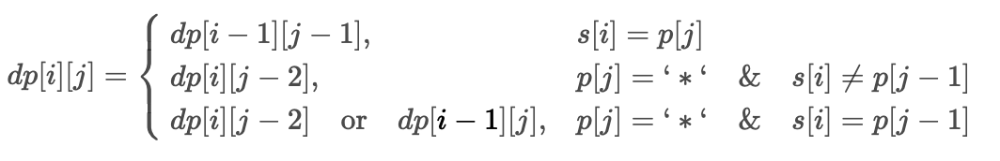

①排序
⓿ 复杂度

| 排序算法 | 平均时间 | 最差时间 | 稳定性 | 空间 | 备注 |
|---|---|---|---|---|---|
| 冒泡排序 | O(n2) | O(n2) | 稳定 | O(1) | n较小时好 |
| 选择排序 | O(n2) | O(n2) | 不稳定 | O(1) | n较小时好 |
| 插入排序 | O(n2) | O(n2) | 稳定 | O(1) | 大部分已有序时好 |
| 希尔排序 | O(nlogn) | O(ns)(1<s<2) | 不稳定 | O(1) | s是所选分组 |
| 快速排序 | O(nlogn) | O(n2) | 不稳定 | O(logn) | n较大时好 |
| 归并排序 | O(nlogn) | O(nlogn) | 稳定 | O(n)/O(1) | n较大时好 |
| 基数排序 | O(n*k) | O(n*k) | 稳定 | O(n) | n为数据个数，k为数据位数 |
| 堆排序 | O(nlogn) | O(nlogn) | 不稳定 | O(1) | n较大时好 |
| 桶排序 | O(n+k) | O(n2) | 稳定 | O(n+k) | |
| 计数排序 | O(n+k) | O(n+k) | 稳定 | O(k) |
❶冒泡排序
算法步骤
- 比较相邻的元素。如果第一个比第二个大，就交换他们两个。
- 对每一对相邻元素作同样的工作。这步做完后，最后的元素会是最大的数。
- 针对所有的元素重复以上的步骤，除了最后一个。
- 持续每次对越来越少的元素重复上面的步骤，直到没有任何一对数字需要比较。
- 一共进行了
数组元素个数-1次大循环，小循环要比较的元素越来越少。 - 优化：如果在某次大循环，发现没有发生交换，则证明已经有序。
public class BubbleSort {
public static void main(String[] args) {
int[] arr = {4, 5, 1, 6, 2};
int[] res = bubbleSort(arr);
System.out.println(Arrays.toString(res));
}
public static int[] bubbleSort(int[] arr) {
for (int i = 1; i < arr.length; i++) {
boolean flag = true; //定义一个标识，来记录这趟大循环是否发生了交换
for (int j = 0; j < arr.length - i; j++) {
if (arr[j] > arr[j + 1]) {
int temp = arr[j];
arr[j] = arr[j + 1];
arr[j + 1] = temp;
flag = false;
}
}
//如果这次循环没发生交换，直接停止循环
if (flag){
break;
}
}
return arr;
}
}
❷选择排序
算法步骤
- 遍历整个数组，找到最小（大）的元素，放到数组的起始位置。
- 再遍历剩下的数组，找到剩下元素中的最小（大）元素，放到数组的第二个位置。
- 重复以上步骤，直到排序完成。
- 一共需要遍历
数组元素个数-1次，当找到第二大（小）的元素时，可以停止。这时最后一个元素必是最大（小）元素。
public class SelectSort {
public static void main(String[] args) {
int[] arr = {3, 1, 6, 10, 2};
int[] res = selectSort(arr);
System.out.println(Arrays.toString(res));
}
public static int[] selectSort(int[] arr) {
for (int i = 0; i < arr.length - 1; i++) {
int min = i;
for (int j = i + 1; j < arr.length; j++) {
if(arr[min] > arr[j]){
min = j;
}
}
// 将找到的最小值和i位置所在的值进行交换
int temp = arr[i];
arr[i] = arr[min];
arr[min] = temp;
}
return arr;
}
}
❸插入排序
算法步骤
- 将待排序序列第一个元素看做一个有序序列，把第二个元素到最后一个元素当成是未排序序列。
- 从头到尾依次扫描未排序序列，将扫描到的每个元素插入有序序列的适当位置。（如果待插入的元素与有序序列中的某个元素相等，则将待插入元素插入到相等元素的后面）

黑色代表有序序列，红色代表待插入元素
public class InsertSort {
public static void main(String[] args) {
int[] arr = {3, 1, 6, 10, 2};
int[] res = insertSort(arr);
System.out.println(Arrays.toString(res));
}
public static int[] insertSort(int[] arr) {
//从数组的第二个元素开始选择合适的位置插入
for (int i = 1; i < arr.length; i++) {
//记录要插入的数据,后面移动元素可能会覆盖该位置上元素的值
int temp = arr[i];
//从已经排序的序列最右边开始比较，找到比其小的数
//变量j用于遍历前面的有序数组
int j = i;
while (j > 0 && temp < arr[j - 1]) {
//如果有序数组中的元素大于temp，则后移一个位置
arr[j] = arr[j - 1];
j--;
}
//j所指位置就是待插入的位置
if (j != i) {
arr[j] = temp;
}
}
return arr;
}
}
❹希尔排序
插入排序存在的问题
当最后一个元素为整个数组的最小元素时，需要将前面的有序数组中的每个元素都向后移一位，这样是非常花时间的。所以有了希尔排序来帮我们将数组从无序变为整体有序再变为有序。
算法步骤
- 选择一个增量序列 t1（一般是数组长度/2），t2（一般是一个分组长度/2），……，tk，其中 ti > tj, tk = 1；
- 按增量序列个数 k，对序列进行 k 趟排序；
- 每趟排序，根据对应的增量 ti，将待排序列分割成若干长度为 m 的子序列，分别对各子表进行直接插入排序。当增量因子为 1 时，整个序列作为一个表来处理，表长度即为整个序列的长度。
public class ShellSort {
public static void main(String[] args) {
int[] arr = {3, 6, 1, 4, 5, 8, 2, 0};
int[] res = shellSort(arr);
System.out.println(Arrays.toString(res));
}
public static int[] shellSort(int[] arr) {
//将数组分为gap组,每个组内部进行插入排序
for (int gap = arr.length / 2; gap > 0; gap /= 2) {
//i用来指向未排序数组的首个元素
for (int i = gap; i < arr.length; i++) {
int temp = arr[i];
int j = i;
while (j - gap >= 0 && temp < arr[j - gap]) {
arr[j] = arr[j - gap];
j -= gap;
}
arr[j] = temp;
}
}
return arr;
}
}
❺快速排序
算法步骤
- 先把数组中的一个数当做基准数（pivot），一般会把数组中最左边的数当做基准数。
- 然后从两边进行检索。
- 先从右边检索比基准数小的
- 再从左边检索比基准数大的
- 如果检索到了，就停下，然后交换这两个元素。然后再继续检索
- 直到两边指针重合时，把基准值和重合位置值交换
- 排序好后，该基准就处于数列的中间位置。这个称为分区（partition）操作；
- 然后递归地（recursive）把小于基准值的子数组和大于基准值元素的子数组再排序。
你注意最后形成的这棵二叉树是什么？是一棵二叉搜索树
你甚至可以这样理解：快速排序的过程是一个构造二叉搜索树的过程。
但谈到二叉搜索树的构造，那就不得不说二叉搜索树不平衡的极端情况，极端情况下二叉搜索树会退化成一个链表，导致操作效率大幅降低。为了避免出现这种极端情况，需要引入随机性。
public class QuickSort {
public static void main(String[] args) {
int[] arr = {8, 12, 19, -1, 45, 0, 14, 4, 11};
quickSort(arr, 0, arr.length - 1);
System.out.println(Arrays.toString(arr));
}
public static void quickSort(int[] arr, int left, int right) {
//递归终止条件
if (left >= right) return;
//定义数组第一个数为基准值
int pivot = arr[left];
//定义两个哨兵
int i = left;
int j = right;
while (i != j) {
//从右往左找比基准值小的数，找到就停止，没找到就继续左移
while (pivot <= arr[j] && i < j) j--;
//从左往右找比基准值大的数，找到就停止，没找到就继续右移
while (pivot >= arr[i] && i < j) i++;
//两边都找到就交换它们
if (i < j) {
int temp = arr[i];
arr[i] = arr[j];
arr[j] = temp;
}
}
//此时，i和j相遇，把基准值和重合位置值交换
arr[left] = arr[i];
arr[i] = pivot;
quickSort(arr, left, i - 1);//对左边的子数组进行快速排序
quickSort(arr, i + 1, right);//对右边的子数组进行快速排序
}
}
private static void sort(int[] nums, int left, int right) {
if (left >= right) {
return;
}
int p = partition(nums, left, right);
sort(nums, left, p - 1);
sort(nums, p + 1, right);
}
public static int partition(int[] arr, int left, int right) {
int pivot = arr[left];//定义基准值为数组第一个数
int i = left;
int j = right;
while (i != j) {
//case1:从右往左找比基准值小的数，找到就停止，没找到就继续左移
while (pivot <= arr[j] && i < j) j--;
//case2:从左往右找比基准值大的数，找到就停止，没找到就继续右移
while (pivot >= arr[i] && i < j) i++;
//将找到的两数交换位置
if (i < j) {
int temp = arr[i];
arr[i] = arr[j];
arr[j] = temp;
}
}
arr[left] = arr[i];
arr[i] = pivot;//把基准值放到合适的位置
return i;
}
参考：快速排序法（详解）
❻归并排序
归并排序（Merge sort）是建立在归并操作上的一种有效的排序算法。该算法是采用分治法（Divide and Conquer）的一个非常典型的应用。
算法步骤
- 申请空间，该空间用来存放合并后的序列；
- 设定两个指针，最初位置分别为两个已经排序序列的起始位置；
- 比较两个指针所指向的元素，选择相对小的元素放入到合并空间，并移动指针到下一位置；
- 重复步骤 3 直到某一指针达到序列尾；
- 将序列剩下的所有元素直接复制到合并序列尾。

治理阶段
 |
 |
|---|
public class MergeSort {
public static void main(String[] args) {
int[] arr = {8, 4, 5, 7, 1, 3, 6, 2};
int[] tmp = new int[arr.length];
mergeSort(arr, 0, arr.length - 1, tmp);
System.out.println(Arrays.toString(arr));
}
//分+治
public static void mergeSort(int[] arr, int left, int right, int[] tmp) {
if(left >= right){
return ;
}
int mid = (left + right) / 2;//中间索引
//向左递归进行分解
mergeSort(arr, left, mid, tmp);
//向右递归进行分解
mergeSort(arr, mid + 1, right, tmp);
//合并（治理）
merge(arr, left, right, tmp);
}
//治理阶段（合并）
public static void merge(int[] arr, int left, int right, int[] tmp) {
int mid = (left + right) / 2;
int i = left; // 初始化i, 左边有序序列的初始索引
int j = mid + 1; //初始化j, 右边有序序列的初始索引
int t = 0; // 指向temp数组的当前索引
//(一)
//先把左右两边(有序)的数据按照规则填充到temp数组
//直到左右两边的有序序列，有一边处理完毕为止
while (i <= mid && j <= right) {
if (arr[i] <= arr[j]) {
tmp[t++] = arr[i++];
} else {
tmp[t++] = arr[j++];
}
}
//(二)
//把有剩余数据的一边的数据依次全部填充到temp
while (i <= mid) {//左边的有序序列还有剩余的元素，就全部填充到temp
tmp[t++] = arr[i++];
}
while (j <= right) {
tmp[t++] = arr[j++];
}
//(三)
//将temp数组的元素拷贝到arr
t = 0;
while (left <= right) {
arr[left++] = tmp[t++];
}
}
}
❼基数排序
基数排序是使用空间换时间的经典算法
算法步骤
- 将所有待比较数值（正整数）统一为同样的数位长度，数位较短的数前面补零
- 事先准备10个数组(10个桶)，对应位数的 0-9
- 根据每个数最低位值(个位)，将数放入到对应位置桶中，即进行一次排序
- 然后从 0-9 个数组/桶，依次，按照加入元素的先后顺序取出
- 以此类推，从最低位排序一直到最高位（个位->十位->百位->…->最高位），循环轮数为最大数位长度
- 排序完成以后, 数列就变成一个有序序列
- 需要我们获得最大数的位数：可以通过将最大数变为String类型，再求得它的长度即可
| 排序过程 | 排序后结果 |
|---|---|
 |
{542，53 ，3 ，14 ，214 ，748} |
 |
{3 ，14 ，214 ，542，748，53 } |
 |
{3，14，53 ，214 ，542，748} |
public class RadixSort {
public static void main(String[] args) {
int[] arr = {53, 3, 542, 748, 14, 214};
radixSort(arr);
System.out.println(Arrays.toString(arr));
}
public static void radixSort(int[] arr) {
//定义一个二维数组，表示10个桶, 每个桶就是一个一维数组
int[][] bucket = new int[10][arr.length];
//为了记录每个桶中存放了多少个数据,我们定义一个数组来记录各个桶的每次放入的数据个数
//比如：bucketElementCounts[0] , 记录的就是 bucket[0] 桶的放入数据个数
int[] bucketElementCounts = new int[10];
//最大位数
int maxLen = getMaxLen(arr);
for (int i = 0, n = 1; i < maxLen; i++, n *= 10) {
//maxLen轮排序
for (int j = 0; j < arr.length; j++) {
//取出每个元素的对应位的值
int digitOfElement = arr[j] / n % 10;
//放入到对应的桶中
bucket[digitOfElement][bucketElementCounts[digitOfElement]] = arr[j];
bucketElementCounts[digitOfElement]++;
}
//按照桶的顺序和加入元素的先后顺序取出，放入原来数组
int index = 0;
for (int k = 0; k < 10; k++) {
//如果桶中，有数据，我们才放入到原数组
int position = 0;
while (bucketElementCounts[k] > 0) {
//取出元素放入到arr
arr[index++] = bucket[k][position++];
bucketElementCounts[k]--;
}
}
}
}
//得到该数组中最大元素的位数
public static int getMaxLen(int[] arr) {
int max = arr[0];
for (int i = 1; i < arr.length; i++) {
if (arr[i] > max) {
max = arr[i];
}
}
//将最大值转为字符串，它的长度就是它的位数
int maxLen = (max + "").length();
return maxLen;
}
}
❽堆排序
给定一个数组：String[] arr = {“S”,”O”,”R”,”T”,”E”,”X”,”A”,”M”,”P”,”L”,”E”}请对数组中的字符按从小到大排序。
实现步骤：
- 1.构造堆；
- 2.得到堆顶元素，这个值就是最大值；
- 3.交换堆顶元素和数组中的最后一个元素，此时所有元素中的最大元素已经放到合适的位置；
- 4.对堆进行调整，重新让除了最后一个元素的剩余元素中的最大值放到堆顶；
- 5.重复2~4这个步骤，直到堆中剩一个元素为止。

public class HeapSort {
public static void main(String[] args) throws Exception {
String[] arr = {"S", "O", "R", "T", "E", "X", "A", "M", "P", "L", "E"};
HeapSort.sort(arr);
System.out.println(Arrays.toString(arr));
}
//判断heap堆中索引i处的元素是否小于索引j处的元素
private static boolean less(Comparable[] heap, int i, int j) {
return heap[i].compareTo(heap[j]) < 0;
}
//交换heap堆中i索引和j索引处的值
private static void exch(Comparable[] heap, int i, int j) {
Comparable tmp = heap[i];
heap[i] = heap[j];
heap[j] = tmp;
}
//根据原数组source，构造出堆heap
private static void createHeap(Comparable[] source, Comparable[] heap) {
//把source中的元素拷贝到heap中，heap中的元素就形成一个无序的堆
System.arraycopy(source, 0, heap, 1, source.length);
//对堆中的元素做下沉调整(从长度的一半处开始，往索引1处扫描)
for (int i = (heap.length) / 2; i > 0; i--) {
sink(heap, i, heap.length - 1);
}
}
//对source数组中的数据从小到大排序
public static void sort(Comparable[] source) {
//构建堆
Comparable[] heap = new Comparable[source.length + 1];
createHeap(source, heap);
//定义一个变量，记录未排序的元素中最大的索引
int N = heap.length - 1;
//通过循环，交换1索引处的元素和排序的元素中最大的索引处的元素
while (N != 1) {
//交换元素
exch(heap, 1, N);
//排序交换后最大元素所在的索引，让它不要参与堆的下沉调整
N--;
//需要对索引1处的元素进行对的下沉调整
sink(heap, 1, N);
}
//把heap中的数据复制到原数组source中
System.arraycopy(heap, 1, source, 0, source.length);
}
//在heap堆中，对target处的元素做下沉，范围是0~range
private static void sink(Comparable[] heap, int target, int range) {
while (2 * target <= range) {
//1.找出当前结点的较大的子结点
int max;
if (2 * target + 1 <= range) {
if (less(heap, 2 * target, 2 * target + 1)) {
max = 2 * target + 1;
} else {
max = 2 * target;
}
} else {
max = 2 * target;
}
//2.比较当前结点的值和较大子结点的值
if (!less(heap, target, max)) {
break;
}
exch(heap, target, max);
target = max;
}
}
}
❾桶排序
❿计数排序
🌟力扣真题
215. 数组中的第K个最大元素-快选
给定整数数组 nums 和整数 k，请返回数组中第 k 个最大的元素。
请注意，你需要找的是数组排序后的第 k 个最大的元素，而不是第 k 个不同的元素。
你必须设计并实现时间复杂度为 O(n) 的算法解决此问题。
示例 1:
输入: [3,2,1,5,6,4], k = 2
输出: 5
示例 2:
输入: [3,2,3,1,2,4,5,5,6], k = 4
输出: 4
方法一：暴力法
class Solution {
public int findKthLargest(int[] nums, int k) {
int len = nums.length;
Arrays.sort(nums);
return nums[len - k];
}
}
- 时间复杂度：O(NlogN)，这里 N 是数组的长度，算法的性能消耗主要在排序，JDK 默认使用快速排序，因此时间复杂度为 O(NlogN)；
- 空间复杂度：O(logN)，这里认为编程语言使用的排序方法是「快速排序」，空间复杂度为递归调用栈的高度，为 logN。
方法二：优先队列
class Solution {
public int findKthLargest(int[] nums, int k) {
// 小顶堆，堆顶是最小元素
PriorityQueue<Integer> pq = new PriorityQueue<>();
for (int e : nums) {
// 每个元素都要过一遍二叉堆
pq.offer(e);
// 堆中元素多于 k 个时，删除堆顶元素
if (pq.size() > k) {
pq.poll();
}
}
// pq 中剩下的是 nums 中 k 个最大元素，
// 堆顶是最小的那个，即第 k 个最大元素
return pq.peek();
}
}
二叉堆插入和删除的时间复杂度和堆中的元素个数有关，在这里我们堆的大小不会超过 k，所以插入和删除元素的复杂度是 O(logk)，再套一层 for 循环，假设数组元素总数为 N，总的时间复杂度就是 O(Nlogk)。空间复杂度很显然就是二叉堆的大小，为 O(k)。
时间复杂度：
O(Nlogk)空间复杂度：
O(k)
方法三：快速选择
「快速排序」虽然快，但是「快速排序」在遇到特殊测试用例（「顺序数组」或者「逆序数组」）的时候，递归树会退化成链表，时间复杂度会变成 O(N^2)。
事实上，有一个很经典的基于「快速排序」的算法，可以通过一次遍历，确定某一个元素在排序以后的位置，这个算法叫「快速选择」。
首先，题目问「第 k 个最大的元素」，相当于数组升序排序后「排名第 n - k 的元素」，为了方便表述，后文另 target = n - k。
partition 函数会将 nums[p] 排到正确的位置，使得 nums[left..p-1] < nums[p] < nums[p+1..right]：
这时候，虽然还没有把整个数组排好序，但我们已经让 nums[p] 左边的元素都比 nums[p] 小了，也就知道 nums[p] 的排名了。
那么我们可以把 p 和 target 进行比较，如果 p < target 说明第 target 大的元素在 nums[p+1..right] 中，如果 p > target 说明第 target 大的元素在 nums[left..p-1] 中。
进一步，去 nums[p+1..right] 或者 nums[left..p-1] 这两个子数组中执行 partition 函数，就可以进一步缩小排在第 target 的元素的范围，最终找到目标元素。
注意：本题必须随机初始化 pivot 元素，否则通过时间会很慢，因为测试用例中有极端测试用例。为了应对极端测试用例，使得递归树加深，可以在循环一开始的时候，随机交换第 1 个元素与任意 1 个元素的位置。
class Solution {
public int findKthLargest(int[] nums, int k) {
int len = nums.length;
int target = len - k;
int left = 0;
int right = len - 1;
return quickSelect(nums, left, right, target);
}
public static int quickSelect(int[] a, int l, int r, int k) {
if (l > r) {
return 0;
}
int p = partition(a, l, r);
if (p == k) {
return a[p];
} else {
return p < k ? quickSelect(a, p + 1, r, k) : quickSelect(a, l, p - 1, k);
}
}
static Random random = new Random();
public static int partition(int[] arr, int left, int right) {
// 生成 [left, 数组长度] 的随机数
int randomIndex = random.nextInt(right - left + 1) + left;
swap(arr, left, randomIndex);
int pivot = arr[left];//定义基准值为数组第一个数
int i = left;
int j = right;
while (i != j) {
//从右往左找比基准值小的数
while (pivot <= arr[j] && i < j) j--;
//从左往右找比基准值大的数
while (pivot >= arr[i] && i < j) i++;
if (i < j) { //如果i<j，交换它们
swap(arr, i, j);
}
}
//把基准值放到合适的位置
swap(arr, left, i);
return i;
}
public static void swap(int[] nums, int index1, int index2) {
int temp = nums[index1];
nums[index1] = nums[index2];
nums[index2] = temp;
}
}
- 时间复杂度：O(N)，这里 N 是数组的长度
- 空间复杂度：O(logN)
面试题 17.14. 最小K个数-快排
设计一个算法，找出数组中最小的k个数。以任意顺序返回这k个数均可。
示例：
输入： arr = [1,3,5,7,2,4,6,8], k = 4
输出： [1,2,3,4]
class Solution {
public int[] smallestK(int[] arr, int k) {
int len = arr.length;
int left = 0;
int right = len - 1;
quickSelect(arr, left, right, k);
int[] res = new int[k];
for (int i = 0; i < k; ++i) {
res[i] = arr[i];
}
return res;
}
public static int quickSelect(int[] a, int l, int r, int k) {
if (l > r) {
return 0;
}
int p = partition(a, l, r);
if (p == k) {
return a[p];
} else {
return p < k ? quickSelect(a, p + 1, r, k) : quickSelect(a, l, p - 1, k);
}
}
static Random random = new Random();
public static int partition(int[] arr, int left, int right) {
// 生成 [left, 数组长度] 的随机数
int randomIndex = random.nextInt(right - left + 1) + left;
swap(arr, left, randomIndex);
int pivot = arr[left];//定义基准值为数组第一个数
int i = left;
int j = right;
while (i != j) {
//从右往左找比基准值小的数
while (pivot <= arr[j] && i < j) j--;
//从左往右找比基准值大的数
while (pivot >= arr[i] && i < j) i++;
if (i < j) { //如果i<j，交换它们
int temp = arr[i];
arr[i] = arr[j];
arr[j] = temp;
}
}
//把基准值放到合适的位置
swap(arr, left, i);
return i;
}
public static void swap(int[] nums, int index1, int index2) {
int temp = nums[index1];
nums[index1] = nums[index2];
nums[index2] = temp;
}
}
56. 合并区间-自定义排序
以数组 intervals 表示若干个区间的集合，其中单个区间为 intervals[i] = [starti, endi] 。请你合并所有重叠的区间，并返回 一个不重叠的区间数组，该数组需恰好覆盖输入中的所有区间 。
示例 1：
输入：intervals = [[1,3],[2,6],[8,10],[15,18]]
输出：[[1,6],[8,10],[15,18]]
解释：区间 [1,3] 和 [2,6] 重叠, 将它们合并为 [1,6].
示例 2：
输入：intervals = [[1,4],[4,5]]
输出：[[1,5]]
解释：区间 [1,4] 和 [4,5] 可被视为重叠区间。
首先，我们将数组中的区间按照左端点升序排序。
然后我们将第一个区间加入结果列表res中，并按顺序依次考虑之后的每个区间：
如果当前区间左端点<=列表最后区间的右端点，那么它们会重合，用当前区间的右端点更新列表res中最后一个区间的右端点，将其置为二者的较大值。
反之，它们不会重合，直接将这个区间加入列表res的末尾；
class Solution {
public int[][] merge(int[][] intervals) {
// 按区间的 start 升序排列
//Arrays.sort(intervals, (a,b) -> a[0] - b[0]);
Arrays.sort(intervals, (a, b) -> {
return a[0] - b[0];
});
// Arrays.sort(intervals, new Comparator<int[]>() {
// public int compare(int[] a, int[] b) {
// return a[0] - b[0];
// }
// });
LinkedList<int[]> res = new LinkedList<>();
//加入第一个区间
res.add(intervals[0]);
for (int i = 1; i < intervals.length; i++) {
int[] curr = intervals[i];
// res 中最后一个元素
int[] last = res.getLast();
//当前区间左端点<=列表最后区间的右端点，那么它们会重合 [1,5] [2,4] 2<5
if (curr[0] <= last[1]) {
//用当前区间的右端点更新列表res中最后一个区间的右端点，将其置为二者的较大值。
last[1] = Math.max(last[1], curr[1]);
} else {
//反之不会重合，直接将这个区间加入列表res的末尾
res.add(curr);
}
}
return res.toArray(new int[0][0]);
}
}
快排实现
class Solution {
public int[][] merge(int[][] intervals) {
int m = intervals.length;
//先按左边界排序
sorted(intervals, 0, m - 1);
//然后逐步合并
int j = 0; //j指向要与i做对比的最后一个区间的位置
for(int i = 1; i < m; i++) { //i依次向后取
if(intervals[j][1] >= intervals[i][0]) { //两个区间有交叉
intervals[j][1] = Math.max(intervals[i][1], intervals[j][1]);
} else { //两个区间没有交叉，把i位置的向前挪，填补前面数组的空白
j++;
intervals[j] = intervals[i];
}
}
return Arrays.copyOf(intervals, j + 1);
}
private void sorted(int[][] intervals, int left, int right) {
//快速排序
if (left >= right) {
return;
}
int[] x = intervals[right];
int index = left;
for(int i = left; i < right; i++) {
if(intervals[i][0] < x[0]) {
int[] temp = intervals[index];
intervals[index] = intervals[i];
intervals[i] = temp;
index++;
}
}
intervals[right] = intervals[index];
intervals[index] = x;
sorted(intervals, left, index - 1);
sorted(intervals, index + 1, right);
}
}
147. 排序链表-插入排序
给定单个链表的头 head ，使用 插入排序 对链表进行排序，并返回 排序后链表的头 。
插入排序 算法的步骤:
- 插入排序是迭代的，每次只移动一个元素，直到所有元素可以形成一个有序的输出列表。
- 每次迭代中，插入排序只从输入数据中移除一个待排序的元素，找到它在序列中适当的位置，并将其插入。
- 重复直到所有输入数据插入完为止。
下面是插入排序算法的一个图形示例。部分排序的列表(黑色)最初只包含列表中的第一个元素。每次迭代时，从输入数据中删除一个元素(红色)，并就地插入已排序的列表中。
对链表进行插入排序。

示例 1：

输入: head = [4,2,1,3]
输出: [1,2,3,4]
示例 2：

输入: head = [-1,5,3,4,0]
输出: [-1,0,3,4,5]
对链表进行插入排序的具体过程如下。
首先判断给定的链表是否为空，若为空，则不需要进行排序，直接返回。
创建哑节点
dummyHead，令dummyHead.next = head。引入哑节点是为了便于在head节点之前插入节点。维护
lastSorted为链表的已排序部分的最后一个节点，初始时lastSorted = head。维护
curr为待插入的元素，初始时curr = head.next。比较
lastSorted和curr的节点值。若
lastSorted.val <= curr.val，说明curr应该位于lastSorted之后，将lastSorted后移一位，curr变成新的lastSorted。否则，从链表的头节点开始往后遍历链表中的节点，寻找插入
curr的位置。令prev为插入curr的位置的前一个节点，进行如下操作，完成对curr的插入：
lastSorted.next = curr.next curr.next = prev.next prev.next = curr令
curr = lastSorted.next，此时curr为下一个待插入的元素。重复第 5 步和第 6 步，直到
curr变成空，排序结束。返回
dummyHead.next，为排序后的链表的头节点。
class Solution {
public ListNode insertionSortList(ListNode head) {
// 若为空，则不需要进行排序，直接返回。
if (head == null) {
return head;
}
ListNode dummyHead = new ListNode(0);
dummyHead.next = head;
ListNode lastSorted = head; // lastSorted 为链表的已排序部分的最后一个节点
ListNode curr = head.next; // curr 为待插入的元素
//从链表的第二个元素开始遍历
while (curr != null) {
if (lastSorted.val <= curr.val) { // 说明curr就应该位于lastSorted之后
lastSorted = lastSorted.next; // 直接后移一位
} else {
ListNode prev = dummyHead; //否则,从链表头结点开始向后遍历链表中的节点
while (prev.next.val <= curr.val) { // prev是插入节点curr位置的前一个节点
prev = prev.next;// 循环退出的条件是找到curr应该插入的位置
}
// 以下三行是为了完成对curr的插入
lastSorted.next = curr.next;
curr.next = prev.next;
prev.next = curr;
}
// 此时 curr 为下一个待插入的元素
curr = lastSorted.next;
}
return dummyHead.next;
}
}
148. 排序链表-归并排序
给你链表的头结点 head ，请将其按 升序 排列并返回 排序后的链表 。
示例 1：

输入：head = [4,2,1,3]
输出：[1,2,3,4]
示例 2：

输入：head = [-1,5,3,4,0]
输出：[-1,0,3,4,5]
示例 3：
输入：head = []
输出：[]
进阶：你可以在 O(nlog n) 时间复杂度和常数级空间复杂度下，对链表进行排序吗？
题目的进阶问题要求达到 O(nlogn) 的时间复杂度和 O(1)的空间复杂度，时间复杂度是 O(nlogn)的排序算法包括归并排序、堆排序和快速排序，快速排序的最差时间复杂度是 O(n^2)，其中最适合链表的排序算法是归并排序。
归并排序基于分治算法。最容易想到的实现方式是自顶向下的递归实现，考虑到递归调用的栈空间，自顶向下归并排序的空间复杂度是 O(logn)。如果要达到O(1)的空间复杂度，则需要使用自底向上的实现方式。
对数组做归并排序的空间复杂度为 O(n)，分别由新开辟数组 O(n)和递归函数调用 O(logn)组成，而根据链表特性：
- 数组额外空间：链表可以通过修改引用来更改节点顺序，无需像数组一样开辟额外空间；
- 递归额外空间：递归调用将带来O(logn)的空间复杂度，因此若希望达到 O(1)空间复杂度，则不能使用递归。
方法一：自顶向下归并排序
找到链表的中点，以中点为分界，将链表拆分成两个子链表。寻找链表的中点可以使用快慢指针的做法，快指针每次移动 2 步，慢指针每次移动 1 步，当快指针到达链表末尾时，慢指针指向的链表节点即为链表的中点。
对两个子链表分别排序。
将两个排序后的子链表合并，得到完整的排序后的链表。可以使用「21. 合并两个有序链表」的做法，将两个有序的子链表进行合并。
class Solution {
public ListNode sortList(ListNode head) {
return mergeSort(head);
}
// 归并排序
private ListNode mergeSort(ListNode head){
// 如果没有结点/只有一个结点，无需排序，直接返回
if (head == null || head.next == null) return head;
// 快慢指针找出中位点
ListNode fast = head.next, slow = head;
while (fast != null && fast.next != null) {
slow = slow.next;
fast = fast.next.next;
}
// 对右半部分进行归并排序
ListNode right = mergeSort(slow.next);
// 链表判断结束的标志：末尾节点.next==null
slow.next = null;
// 对左半部分进行归并排序
ListNode left = mergeSort(head);
// 合并
return mergeList(left, right);
}
// 合并两个有序链表
private ListNode mergeList(ListNode left, ListNode right){
ListNode tmpHead = new ListNode(-1); // 临时头节点
ListNode res = tmpHead; // 存放结果链表
while (left != null && right != null){
if (left.val < right.val){
res.next = left;
left = left.next;
} else {
res.next = right;
right = right.next;
}
res = res.next;
}
res.next = (left == null ? right : left);
return tmpHead.next;
}
}
复杂度分析
时间复杂度：O(nlogn)，其中 n 是链表的长度。
空间复杂度：O(logn)，空间复杂度主要取决于递归调用的栈空间。
方法二：自底向上归并排序
将方法1改为迭代，节省递归占用的栈空间，每轮从链表上分别取1、2、4、8。。。。长度的子链表，两两依次合并模拟递归中的自底向上
用自底向上的方法实现归并排序，则可以达到 O(1) 的空间复杂度。
首先求得链表的长度 length，然后将链表拆分成子链表进行合并。
用 subLength表示每次需要排序的子链表的长度，初始时 subLength=1。
每次将链表拆分成若干个长度为 subLength 的子链表（最后一个子链表的长度可以小于 subLength），按照每两个子链表一组进行合并，合并后即可得到若干个长度为 subLength×2的有序子链表（最后一个子链表的长度可以小于 subLength×2）。合并两个子链表仍然使用「21. 合并两个有序链表」的做法。
将 subLength 的值加倍，重复第 2 步，对更长的有序子链表进行合并操作，直到有序子链表的长度大于或等于 length，整个链表排序完毕。

class Solution {
public ListNode sortList(ListNode head) {
// 如果没有结点/只有一个结点，无需排序，直接返回
if (head == null || head.next == null) return head;
// 统计链表长度
int len = 0;
ListNode curr = head;
while (curr != null) {
len++;
curr = curr.next;
}
ListNode dummy = new ListNode(-1, head);
// 外层遍历step 内层处理每step个元素进行一次merge
for (int subLength = 1; subLength < len; subLength <<= 1) {
// 用于连接合并后排序好的链表，相当于记录结果
ListNode tail = dummy;
// 记录拆分链表的位置
curr = dummy.next;
// 每次遍历整条链表，将链表拆分成若干个长度为 subLength 的子链表，然后合并。
while (curr != null) {
ListNode left = curr; // 第一个链表的头节点
// 拆分subLength长度的链表1
ListNode right = cut(left, subLength);
// 拆分subLength长度的链表2
curr = cut(right, subLength);
// 合并两个subLength长度的有序链表
tail.next = merge(left, right);
// 将tail移动到subLength × 2 的位置，以连接下一次合并的结果
while (tail.next != null) {
tail = tail.next;
}
}
}
return dummy.next;
}
// 将链表从from开始切掉前step个元素，返回后一个元素
public ListNode cut(ListNode from, int step) {
step--;
while (from != null && step > 0) {
from = from.next;
step--;
}
if (from == null) {
return null;
} else {
ListNode next = from.next;
from.next = null;
return next;
}
}
// 题21. 合并两个有序链表
private ListNode merge(ListNode left, ListNode right){
ListNode dummy = new ListNode(0);// 临时头节点
ListNode res = dummy;
while (left != null && right != null){
if (left.val < right.val){
res.next = left;
left = left.next;
} else {
res.next = right;
right = right.next;
}
res = res.next;
}
res.next = (left == null ? right : left);
return dummy.next;
}
}
方法三：快速排序
- 快排的partition操作变成了将单链表分割为<pivot和pivot以及>=pivot三个部分
- 递推对分割得到的两个单链表进行快排
- 回归时将pivot和排序后的两个单链表连接，并返回排序好的链表头尾节点
class Solution {
public ListNode sortList(ListNode head) {
if(head==null||head.next==null) return head;
// 没有条件，创造条件。自己添加头节点，最后返回时去掉即可。
ListNode newHead=new ListNode(-1);
newHead.next=head;
return quickSort(newHead,null);
}
// 带头结点的链表快速排序
private ListNode quickSort(ListNode head, ListNode end){
if (head==end||head.next==end||head.next.next==end) return head;
// 将小于划分点的值存储在临时链表中
ListNode tmpHead=new ListNode(-1);
// partition为划分点，p为链表指针，tp为临时链表指针
ListNode partition=head.next,p=partition,tp=tmpHead;
// 将小于划分点的结点放到临时链表中
while (p.next!=end){
if (p.next.val<partition.val){
tp.next=p.next;
tp=tp.next;
p.next=p.next.next;
}else {
p=p.next;
}
}
// 合并临时链表和原链表，将原链表接到临时链表后面即可
tp.next=head.next;
// 将临时链表插回原链表，注意是插回！（不做这一步在对右半部分处理时就断链了）
head.next=tmpHead.next;
quickSort(head, partition);
quickSort(partition, end);
return head.next;
}
}
75. 颜色分类-快速排序
给定一个包含红色、白色和蓝色、共 n 个元素的数组 nums ，**原地**对它们进行排序，使得相同颜色的元素相邻，并按照红色、白色、蓝色顺序排列。
我们使用整数 0、 1 和 2 分别表示红色、白色和蓝色。
必须在不使用库内置的 sort 函数的情况下解决这个问题。
示例 1：
输入：nums = [2,0,2,1,1,0]
输出：[0,0,1,1,2,2]
示例 2：
输入：nums = [2,0,1]
输出：[0,1,2]
利用快排parption思想
class Solution {
public void sortColors(int[] nums) {
int left = 0, right = nums.length - 1;
int i = 0;
while (i <= right) {
if (nums[i] == 0) {
swap(nums, left, i);
left++;
i++;
} else if (nums[i] == 2) {
swap(nums, i, right);
right--;
} else {
i++;
}
}
}
void swap(int[] nums, int i, int j) {
int c = nums[i];
nums[i] = nums[j];
nums[j] = c;
}
}
//冒泡
class Solution {
public void sortColors(int[] nums) {
for(int i = 0;i < nums.length - 1;i++){
for(int j = 0; j < nums.length - i - 1;j++){
if(nums[j] > nums[j+1]){
int temp = nums[j];
nums[j] = nums[j+1];
nums[j+1] = temp;
}
}
}
}
}
912. 排序数组-手撕排序
给你一个整数数组 nums，请你将该数组升序排列。
示例 1：
输入：nums = [5,2,3,1]
输出：[1,2,3,5]
示例 2：
输入：nums = [5,1,1,2,0,0]
输出：[0,0,1,1,2,5]
快排：排序数组 - 题解
class Solution {
public int[] sortArray(int[] nums) {
quickSort(nums, 0, nums.length - 1);
return nums;
}
public void quickSort(int[] nums, int left, int right){
if(left >= right) return;
int p = parption(nums, left, right);
quickSort(nums, left, p - 1);
quickSort(nums, p + 1, right);
}
Random random = new Random();
public int parption(int[] nums, int left, int right){
int r = random.nextInt(right - left + 1) + left;
swap(nums, left, r);
int pivot = nums[left];
int i = left;
int j = right;
while(i != j){
while(nums[j] >= pivot && i < j) j--;
while(nums[i] <= pivot && i < j) i++;
if(i < j){
swap(nums, i, j);
}
}
swap(nums, left, i);
return i;
}
private void swap(int[] nums, int i, int j) {
int temp = nums[i];
nums[i] = nums[j];
nums[j] = temp;
}
}
归并排序
class Solution {
public int[] sortArray(int[] nums) {
int[] tmp = new int[nums.length];
mergeSort(nums, 0, nums.length - 1, tmp);
return nums;
}
public void mergeSort(int[] nums, int left, int right, int[] tmp){
if(left >= right){
return ;
}
int mid = left + (right - left) / 2;
mergeSort(nums, left, mid, tmp);
mergeSort(nums, mid + 1 , right, tmp);
merge(nums, left, right, tmp);
}
public void merge(int[] nums, int left, int right, int[] tmp){
int mid = left + (right - left) / 2;
int i = left;
int j = mid + 1;
int t = 0;
while(i <= mid && j <= right){
if(nums[i] <= nums[j]){
tmp[t++] = nums[i++];
} else {
tmp[t++] = nums[j++];
}
}
while(i <= mid){
tmp[t++] = nums[i++];
}
while(j <= right){
tmp[t++] = nums[j++];
}
t = 0;
while(left <= right){
nums[left++] = tmp[t++];
}
}
}
406. 根据身高重建队列
假设有打乱顺序的一群人站成一个队列，数组 people 表示队列中一些人的属性（不一定按顺序）。每个 people[i] = [hi, ki] 表示第 i 个人的身高为 hi ，前面 正好 有 ki 个身高大于或等于 hi 的人。
请你重新构造并返回输入数组 people 所表示的队列。返回的队列应该格式化为数组 queue ，其中 queue[j] = [hj, kj] 是队列中第 j 个人的属性（queue[0] 是排在队列前面的人）。
示例 1：
输入：people = [[7,0],[4,4],[7,1],[5,0],[6,1],[5,2]]
输出：[[5,0],[7,0],[5,2],[6,1],[4,4],[7,1]]
示例 2：
输入：people = [[6,0],[5,0],[4,0],[3,2],[2,2],[1,4]]
输出：[[4,0],[5,0],[2,2],[3,2],[1,4],[6,0]]
一般这种数对，还涉及排序的，根据第一个元素正向排序，根据第二个元素反向排序，或者根据第一个元素反向排序，根据第二个元素正向排序，往往能够简化解题过程。
class Solution {
public int[][] reconstructQueue(int[][] people) {
Arrays.sort(people, new Comparator<int[]>(){
@Override
public int compare(int[] a, int[] b){
if(a[0] != b[0]){
//第一个元素不相等时，第一个元素降序
return b[0] - a[0];
} else {
//第一个元素相等时，第二个元素升序
return a[1] - b[1];
}
}
});
List<int[]> list = new ArrayList<>();
for(int i = 0; i < people.length; i++){
if (list.size() > people[i][1]){
//结果集中元素个数大于第i个人前面应有的人数时，将第i个人插入到结果集的 people[i][1]位置
list.add(people[i][1],people[i]);
}else{
//结果集中元素个数小于等于第i个人前面应有的人数时，将第i个人追加到结果集的后面
list.add(people[i]);
}
}
//将list转化为数组，然后返回
return list.toArray(new int[list.size()][]);
}
}
581. 最短无序连续子数组
给你一个整数数组 nums ，你需要找出一个 连续子数组 ，如果对这个子数组进行升序排序，那么整个数组都会变为升序排序。
请你找出符合题意的 最短 子数组，并输出它的长度。
示例 1：
输入：nums = [2,6,4,8,10,9,15]
输出：5
解释：你只需要对 [6, 4, 8, 10, 9] 进行升序排序，那么整个表都会变为升序排序。
示例 2：
输入：nums = [1,2,3,4]
输出：0
示例 3：
输入：nums = [1]
输出：0
排序
将给定的数组 nums 表示为三段子数组拼接的形式，记作 numsA，numsB，numsC。本题要求找到最短的 numsB。
因此我们将原数组 nums 排序与原数组进行比较，取最长的相同的前缀为 numsA，取最长的相同的后缀为 numsC，这样我们就可以取到最短的 numsB。
创建数组 nums 的拷贝，记作数组 numsSorted，并对该数组进行排序，然后我们从左向右找到第一个两数组不同的位置，即为 numsB 的左边界。同理也可以找到 numsB 右边界。最后我们输出 numsB 的长度即可。
特别地，当原数组有序时，numsB 的长度为 000，我们可以直接返回结果。
//时间复杂度：O(nlogn),空间复杂度：O(n)
class Solution {
public int findUnsortedSubarray(int[] nums) {
if(isSorted(nums)){
return 0;
}
int n = nums.length;
int[] numSorted = new int[n];
System.arraycopy(nums, 0, numSorted, 0, n);
Arrays.sort(numSorted);
int left = 0; //最长相同前缀
while(nums[left] == numSorted[left]){
left++;
}
int right = n - 1; //最长相同后缀
while(nums[right] == numSorted[right]){
right--;
}
return right - left + 1;
}
public boolean isSorted(int[] nums) {
for (int i = 1; i < nums.length; i++) {
if (nums[i] < nums[i - 1]) {
return false;
}
}
return true;
}
}
一次遍历
如何确定nums[B]的范围[left,right]？
- numsB 是无序的，numsB 中最小元素左侧可能有比其大的，最大元素右侧可能有比其小的；
- 初始最大元素max为Integer.MIN_VALUE，正序遍历数组，如果当前元素比最大元素大，更新max; 如果当前元素比最大元素小，就说明其是numsB的一部分，动态维护numsB右边界right;
- 初始最小元素min为Integer.MAX_VALUE，倒序遍历数组，如果当前元素比最小元素小，更新min; 如果当前元素比最小元素大，就说明其是numsB的一部分，动态维护numsB左边界left;
- 返回最短长度right-left+1;
- 由于初始时left=-1，right=-1,如果整体有序，right和left保持-1，对于有序数组需要单独判断，返回0;
class Solution {
public int findUnsortedSubarray(int[] nums) {
int n = nums.length;
int max = Integer.MIN_VALUE, right = -1;
int min = Integer.MAX_VALUE, left = -1;
for (int i = 0; i < n; i++) {
if (nums[i] < max) {
right = i;
} else {
max = nums[i];
}
}
for(int i = n - 1; i >= 0; i--){
if(nums[i] > min) {
left = i;
}
else {
min = nums[i];
}
}
return right == -1 ? 0 : right - left + 1;
}
}
31. 下一个排列
整数数组的一个 排列 就是将其所有成员以序列或线性顺序排列。
- 例如，
arr = [1,2,3]，以下这些都可以视作arr的排列：[1,2,3]、[1,3,2]、[3,1,2]、[2,3,1]。
整数数组的 下一个排列 是指其整数的下一个字典序更大的排列。更正式地，如果数组的所有排列根据其字典顺序从小到大排列在一个容器中，那么数组的 下一个排列 就是在这个有序容器中排在它后面的那个排列。如果不存在下一个更大的排列，那么这个数组必须重排为字典序最小的排列（即，其元素按升序排列）。
- 例如，
arr = [1,2,3]的下一个排列是[1,3,2]。 - 类似地，
arr = [2,3,1]的下一个排列是[3,1,2]。 - 而
arr = [3,2,1]的下一个排列是[1,2,3]，因为[3,2,1]不存在一个字典序更大的排列。
给你一个整数数组 nums ，找出 nums 的下一个排列。
必须** 原地 **修改，只允许使用额外常数空间。
示例 1：
输入：nums = [1,2,3]
输出：[1,3,2]
示例 2：
输入：nums = [3,2,1]
输出：[1,2,3]
示例 3：
输入：nums = [1,1,5]
输出：[1,5,1]
标准的 “下一个排列” 算法可以描述为：题解
- 从后向前 查找第一个 相邻升序 的元素对
(i,j)，满足A[i] < A[j]。此时[j,end)必然是降序 - 在
[j,end)从后向前 查找第一个满足A[i] < A[k]的k。 - 将
A[i]与A[k]交换 - 可以断定这时
[j,end)必然是降序，逆置[j,end)，使其升序 - 如果在步骤 1 找不到符合的相邻元素对，说明当前
[begin,end)为一个降序顺序，则直接跳到步骤 4
class Solution {
public void nextPermutation(int[] nums) {
//从后向前找第一次出现邻近升序的对儿 A[i] < A[j]
int i = nums.length - 2, j = nums.length - 1;
while(i >= 0 && nums[i] >= nums[j]){
i--; j--;
}
//本身就是最后一个排列（全部降序）， 把整体整个翻转变升序进行返回
if(i < 0) {
reverse(nums, 0, nums.length-1);
return;
}
//从[j, end]从后向前找第一个令A[i] < A[k]的k值 （不邻近升序对儿 ，也有可能近邻）
int k;
for(k = nums.length-1; k >= j; k--){
if(nums[i] < nums[k]) break;
}
//交换i, k
swap(nums, i, k);
//nums[j,end]是降序 改为升序
reverse(nums, j, nums.length-1);
}
public void reverse(int[] nums, int l, int r){
while(l < r){
swap(nums, l, r);
l++; r--;
}
}
public void swap(int[] nums, int i, int k){
int tmp = nums[i];
nums[i] = nums[k];
nums[k] = tmp;
}
}
②回溯
⓿解题思路
参考：回溯算法秒杀所有排列-组合-子集问题 :: labuladong的算法小抄、代码随想录 (programmercarl.com)
无论是排列、组合还是子集问题，简单说无非就是让你从序列 nums 中以给定规则取若干元素，主要有以下几种变体：
❶元素无重不可复选，即 nums 中的元素都是唯一的，每个元素最多只能被使用一次，这也是最基本的形式。
以组合为例，如果输入 nums = [2,3,6,7]，和为 7 的组合应该只有 [7]。
❷元素可重不可复选，即 nums 中的元素可以存在重复，每个元素最多只能被使用一次。
以组合为例，如果输入 nums = [2,5,2,1,2]，和为 7 的组合应该有两种 [2,2,2,1] 和 [5,2]。
❸元素无重可复选，即 nums 中的元素都是唯一的，每个元素可以被使用若干次。
以组合为例，如果输入 nums = [2,3,6,7]，和为 7 的组合应该有两种 [2,2,3] 和 [7]。
当然，也可以说有第四种形式，即元素可重可复选。但既然元素可复选，那又何必存在重复元素呢？元素去重之后就等同于形式三，所以这种情况不用考虑。
上面用组合问题举的例子，但排列、组合、子集问题都可以有这三种基本形式，所以共有 9 种变化。
除此之外，题目也可以再添加各种限制条件，比如让你求和为 target 且元素个数为 k 的组合，那这么一来又可以衍生出一堆变体，怪不得面试笔试中经常考到排列组合这种基本题型。
但无论形式怎么变化，其本质就是穷举所有解，而这些解呈现树形结构，所以合理使用回溯算法框架，稍改代码框架即可把这些问题一网打尽。
// 回溯算法框架
List<Value> result;
void backtrack(路径，选择列表) {
if (满足结束条件) {
result.add(路径);
}
for(选择 : 选择列表) {
做选择;
backtrack(路径，选择列表);
撤销选择;
}
}
| 组合：与数字顺序无关 | 排序：与数字顺序有关 |
|---|---|
 |
 |
❶元素无重不可复选
由于子集问题和组合问题本质上是一样的，无非就是 base case 有一些区别，所以把这两个问题放在一起看。
/* 组合/子集问题回溯算法框架 */
void backtrack(int[] nums, int start) {
// 前序位置，每个节点的值都是一个子集
res.add(new LinkedList<>(track));
// 回溯算法标准框架
for (int i = start; i < nums.length; i++) {
// 做选择
track.addLast(nums[i]);
// 通过 start 参数控制树枝的遍历，避免产生重复的子集
backtrack(nums, i + 1);
// 撤销选择
track.removeLast();
}
}
/* 排列问题回溯算法框架 */
void backtrack(int[] nums, boolean[] used) {
if(track.size() == nums.length){
res.add(new LinkedList<>(track));
}
for (int i = 0; i < nums.length; i++) {
// 剪枝逻辑
if (used[i]) { // 「路径」中的元素会被标记为 true，避免重复使用
continue;
}
// 做选择
track.addLast(nums[i]);
used[i] = true;
// 进入下一层决策树
backtrack(nums，used);
// 撤销选择
track.removeLast();
used[i] = false;
}
}
❷元素可重不可复选
关键在于排序和剪枝
Arrays.sort(nums);
/* 组合/子集问题回溯算法框架 */
void backtrack(int[] nums, int start) {
// 回溯算法标准框架
for (int i = start; i < nums.length; i++) {
// 剪枝逻辑，跳过值相同的相邻树枝
if (i > start && nums[i] == nums[i - 1]) {
continue;
}
// 做选择
track.addLast(nums[i]);
// 注意参数
backtrack(nums, i + 1);
// 撤销选择
track.removeLast();
}
}
Arrays.sort(nums);
/* 排列问题回溯算法框架 */
void backtrack(int[] nums) {
for (int i = 0; i < nums.length; i++) {
// 剪枝逻辑
if (used[i]) {
continue;
}
// 剪枝逻辑，固定相同的元素在排列中的相对位置
if (i > 0 && nums[i] == nums[i - 1] && !used[i - 1]) {
continue;
}
// 做选择
used[i] = true;
track.addLast(nums[i]);
backtrack(nums);
// 撤销选择
track.removeLast();
used[i] = false;
}
}
❸元素无重可复选
只要删掉去重逻辑即可，即组合/子集问题 i+1 变为 i，排列问题去除used[]
/* 组合/子集问题回溯算法框架 */
void backtrack(int[] nums, int start) {
// 回溯算法标准框架
for (int i = start; i < nums.length; i++) {
// 做选择
track.addLast(nums[i]);
// 注意参数
backtrack(nums, i);
// 撤销选择
track.removeLast();
}
}
/* 排列问题回溯算法框架 */
void backtrack(int[] nums) {
for (int i = 0; i < nums.length; i++) {
// 做选择
track.addLast(nums[i]);
backtrack(nums);
// 撤销选择
track.removeLast();
}
}
❶组合问题
77. 组合（无重复不可复选）
给定两个整数 n 和 k，返回范围 [1, n] 中所有可能的 k 个数的组合。
你可以按 任何顺序 返回答案。
示例 1：
输入：n = 4, k = 2
输出：
[
[2,4],
[3,4],
[2,3],
[1,2],
[1,3],
[1,4],
]
示例 2：
输入：n = 1, k = 1
输出：[[1]]
k 限制了树的高度，n 限制了树的宽度，继续套 回溯算法模板框架 就行了

class Solution {
List<List<Integer>> res = new LinkedList<>();
List<Integer> track = new LinkedList<>();
public List<List<Integer>> combine(int n, int k) {
if (k <= 0 || n < k) {
return res;
}
backtrack(n, k, 1);
return res;
}
void backtrack(int n, int k, int start) {
if(track.size() == k){
res.add(new LinkedList<>(track));
}
for(int i = start; i <= n; i++){
track.add(i);
backtrack(n, k, i + 1);
track.remove(track.size() - 1);
}
}
}
39. 组合总和（无重复可复选）
给你一个 无重复元素 的整数数组 candidates 和一个目标整数 target ，找出 candidates 中可以使数字和为目标数 target 的 所有 不同组合 ，并以列表形式返回。你可以按 任意顺序 返回这些组合。
candidates 中的 同一个 数字可以 无限制重复被选取 。如果至少一个数字的被选数量不同，则两种组合是不同的。
对于给定的输入，保证和为 target 的不同组合数少于 150 个。
示例 1：
输入：candidates = [2,3,6,7], target = 7
输出：[[2,2,3],[7]]
解释：
2 和 3 可以形成一组候选，2 + 2 + 3 = 7 。注意 2 可以使用多次。
7 也是一个候选， 7 = 7 。
仅有这两种组合。
示例 2：
输入: candidates = [2,3,5], target = 8
输出: [[2,2,2,2],[2,3,3],[3,5]]
示例 3：
输入: candidates = [2], target = 1
输出: []
这道题的关键在于 candidates 中的元素可以复用多次，体现在代码中是下面这段：
void backtrack(int[] candidates, int start, int target, int sum) {
// 回溯算法框架
for (int i = start; i < candidates.length; i++) {
// 选择 candidates[i]
backtrack(candidates, i, target, sum);
// 撤销选择 candidates[i]
}
}
对比不能重复使用元素的标准组合问题：
void backtrack(int[] candidates, int start, int target, int sum) {
// 回溯算法框架
for (int i = start; i < candidates.length; i++) {
// 选择 candidates[i]
backtrack(candidates, i + 1, target, sum);
// 撤销选择 candidates[i]
}
}
如果我想让每个元素被重复使用，我只要把 i + 1 改成 i 即可
这相当于给之前的回溯树添加了一条树枝，在遍历这棵树的过程中，一个元素可以被无限次使用。当然，这样这棵回溯树会永远生长下去，所以我们的递归函数需要设置合适的 base case 以结束算法，即路径和大于 target 时就没必要再遍历下去了。
class Solution {
List<List<Integer>> res = new LinkedList<>();
List<Integer> track = new LinkedList<>();
public List<List<Integer>> combinationSum(int[] candidates, int target) {
backtack(candidates, target, 0, 0);
return res;
}
public void backtack(int[] candidates, int target, int start , int sum){
// 找到目标和，记录结果
if(sum == target){
res.add(new LinkedList<>(track));
}
// 超过目标和，直接结束,不然会一直生长下去
if (sum > target) {
return;
}
for(int i = start; i < candidates.length; i++){
// 选择 candidates[i]
track.add(candidates[i]);
sum += candidates[i];
backtack(candidates, target, i, sum);
// 撤销选择 candidates[i]
track.remove(track.size() - 1);
sum -= candidates[i];
}
}
}
40. 组合总和 II（有重复不可复选）
给定一个候选人编号的集合 candidates 和一个目标数 target ，找出 candidates 中所有可以使数字和为 target 的组合。
candidates 中的每个数字在每个组合中只能使用 一次 。
注意：解集不能包含重复的组合。
示例 1:
输入: candidates = [10,1,2,7,6,1,5], target = 8,
输出:
[
[1,1,6],
[1,2,5],
[1,7],
[2,6]
]
示例 2:
输入: candidates = [2,5,2,1,2], target = 5,
输出:
[
[1,2,2],
[5]
]
class Solution {
List<List<Integer>> res = new LinkedList<>();
List<Integer> track = new LinkedList<>();
public List<List<Integer>> combinationSum2(int[] candidates, int target) {
Arrays.sort(candidates);
backtack(candidates, target, 0, 0);
return res;
}
public void backtack(int[] candidates, int target, int start , int sum){
// 找到目标和，记录结果
if(sum == target){
res.add(new LinkedList<>(track));
}
// 超过目标和，直接结束
if (sum > target) {
return;
}
for(int i = start; i < candidates.length; i++){
// 剪枝逻辑，值相同的相邻树枝，只遍历第一条
if(i > start && candidates[i] == candidates[i-1]){
continue;
}
// 选择 candidates[i]
track.add(candidates[i]);
sum += candidates[i];
backtack(candidates, target, i + 1, sum);
// 撤销选择 candidates[i]
track.remove(track.size() - 1);
sum -= candidates[i];
}
}
}
216. 组合总和 III（无重复不可复选）
找出所有相加之和为 n 的 k 个数的组合，且满足下列条件：
- 只使用数字1到9
- 每个数字 最多使用一次
返回 所有可能的有效组合的列表 。该列表不能包含相同的组合两次，组合可以以任何顺序返回。
示例 1:
输入: k = 3, n = 7
输出: [[1,2,4]]
解释:
1 + 2 + 4 = 7
没有其他符合的组合了。
示例 2:
输入: k = 3, n = 9
输出: [[1,2,6], [1,3,5], [2,3,4]]
解释:
1 + 2 + 6 = 9
1 + 3 + 5 = 9
2 + 3 + 4 = 9
没有其他符合的组合了。
示例 3:
输入: k = 4, n = 1
输出: []
解释: 不存在有效的组合。
在[1,9]范围内使用4个不同的数字，我们可以得到的最小和是1+2+3+4 = 10，因为10 > 1，没有有效的组合。
class Solution {
List<List<Integer>> res = new LinkedList<>();
List<Integer> track = new LinkedList<>();
public List<List<Integer>> combinationSum3(int k, int n) {
backtack(k, n, 1, 0);
return res;
}
public void backtack(int k, int n, int start , int sum){
if(track.size() == k && sum == n){
res.add(new LinkedList<>(track));
}
if(sum > n){
return;
}
for(int i = start; i <= 9; i++){
track.add(i);
sum += i;
backtack(k, n, i + 1, sum);
track.remove(track.size() - 1);
sum -= i;
}
}
}
❷排列问题
46. 全排列（无重复不可复选）
给定一个不含重复数字的数组 nums ，返回其 所有可能的全排列 。你可以 按任意顺序 返回答案。
示例 1：
输入：nums = [1,2,3]
输出：[[1,2,3],[1,3,2],[2,1,3],[2,3,1],[3,1,2],[3,2,1]]
示例 2：
输入：nums = [0,1]
输出：[[0,1],[1,0]]
示例 3：
输入：nums = [1]
输出：[[1]]
定义一个布尔数组，记录元素是否已经被访问过，访问过的元素无法再被选择
 |
 |
|---|
class Solution {
List<List<Integer>> res = new LinkedList<>();
List<Integer> track = new LinkedList<>();
public List<List<Integer>> permute(int[] nums) {
// 「路径」中的元素会被标记为 true，避免重复使用
boolean[] used = new boolean[nums.length];
backtack(nums, used);
return res;
}
public void backtack(int[] nums, boolean[] used){
if(track.size() == nums.length){
res.add(new LinkedList<>(track));
}
for(int i = 0; i < nums.length; i++){
// 排除不合法的选择
if(used[i]){
continue;
}
// 做选择
track.add(nums[i]);
used[i] = true;
// 进入下一层决策树
backtack(nums, used);
// 取消选择
track.remove(track.size() - 1);
used[i] = false;
}
}
}
47. 全排列 II（有重复不可复选）
给定一个可包含重复数字的序列 nums ，按任意顺序 返回所有不重复的全排列。
示例 1：
输入：nums = [1,1,2]
输出：
[[1,1,2],
[1,2,1],
[2,1,1]]
示例 2：
输入：nums = [1,2,3]
输出：[[1,2,3],[1,3,2],[2,1,3],[2,3,1],[3,1,2],[3,2,1]]
class Solution {
List<List<Integer>> res = new LinkedList<>();
List<Integer> track = new LinkedList<>();
public List<List<Integer>> permuteUnique(int[] nums) {
// 「路径」中的元素会被标记为 true，避免重复使用
boolean[] used = new boolean[nums.length];
Arrays.sort(nums);
backtack(nums, used);
return res;
}
public void backtack(int[] nums, boolean[] used){
if(track.size() == nums.length && !res.contains(track)){
res.add(new LinkedList<>(track));
}
for(int i = 0; i < nums.length; i++){
// 排除不合法的选择
if(used[i]){
continue;
}
// 做选择
track.add(nums[i]);
used[i] = true;
// 进入下一层决策树
backtack(nums, used);
// 取消选择
track.remove(track.size() - 1);
used[i] = false;
}
}
}
❸子集问题
78. 子集（无重复不可复选）
给你一个整数数组 nums ，数组中的元素 互不相同 。返回该数组所有可能的子集（幂集）。
解集 不能 包含重复的子集。你可以按 任意顺序 返回解集。
示例 1：
输入：nums = [1,2,3]
输出：[[],[1],[2],[1,2],[3],[1,3],[2,3],[1,2,3]]
示例 2：
输入：nums = [0]
输出：[[],[0]]
本质上子集问题就是遍历这样用一棵回溯树：

class Solution {
List<List<Integer>> res = new LinkedList<>();
List<Integer> track = new LinkedList<>();
public List<List<Integer>> subsets(int[] nums) {
backtrack(nums, 0);
return res;
}
public void backtrack(int[] nums , int start){
res.add(new LinkedList<>(track));
// 通过 start 参数控制树枝的遍历，避免产生重复的子集
for(int i = start; i < nums.length; i++){
//做选择
track.add(nums[i]);
//回溯
backtrack(nums, i + 1);
//撤销选择
track.remove(track.size() - 1);
}
}
}
90. 子集 II（有重复不可复选）
给你一个整数数组 nums ，其中可能包含重复元素，请你返回该数组所有可能的子集（幂集）。
解集 不能 包含重复的子集。返回的解集中，子集可以按 任意顺序 排列。
示例 1：
输入：nums = [1,2,2]
输出：[[],[1],[1,2],[1,2,2],[2],[2,2]]
示例 2：
输入：nums = [0]
输出：[[],[0]]
class Solution {
List<List<Integer>> res = new LinkedList<>();
List<Integer> track = new LinkedList<>();
public List<List<Integer>> subsetsWithDup(int[] nums) {
// 先排序，让相同的元素靠在一起
Arrays.sort(nums);
backtack(nums, 0);
return res;
}
public void backtack(int[] nums, int start){
if(!res.contains(track)){
res.add(new LinkedList<>(track));
}
for(int i = start; i < nums.length; i++){
track.add(nums[i]);
backtack(nums, i + 1);
track.remove(track.size() - 1);
}
}
}
class Solution {
List<List<Integer>> res = new LinkedList<>();
LinkedList<Integer> track = new LinkedList<>();
public List<List<Integer>> subsetsWithDup(int[] nums) {
// 先排序，让相同的元素靠在一起
Arrays.sort(nums);
backtrack(nums, 0);
return res;
}
void backtrack(int[] nums, int start) {
// 前序位置，每个节点的值都是一个子集
res.add(new LinkedList<>(track));
for (int i = start; i < nums.length; i++) {
// 剪枝逻辑，值相同的相邻树枝，只遍历第一条
if (i > start && nums[i] == nums[i - 1]) {
continue;
}
track.addLast(nums[i]);
backtrack(nums, i + 1);
track.removeLast();
}
}
}
❹棋盘问题
51. N 皇后
按照国际象棋的规则，皇后可以攻击与之处在同一行或同一列或同一斜线上的棋子。
n 皇后问题 研究的是如何将 n 个皇后放置在 n×n 的棋盘上，并且使皇后彼此之间不能相互攻击。
给你一个整数 n ，返回所有不同的 n 皇后问题 的解决方案。
每一种解法包含一个不同的 n 皇后问题 的棋子放置方案，该方案中 'Q' 和 '.' 分别代表了皇后和空位。
示例 1：

输入：n = 4
输出：[[".Q..","...Q","Q...","..Q."],["..Q.","Q...","...Q",".Q.."]]
解释：如上图所示，4 皇后问题存在两个不同的解法。
示例 2：
输入：n = 1
输出：[["Q"]]
class Solution {
List<List<String>> res = new ArrayList<>();
// 输入棋盘边长 n，返回所有合法的放置
public List<List<String>> solveNQueens(int n) {
// '.' 表示空，'Q' 表示皇后，初始化空棋盘。
List<String> board = new ArrayList<>();
StringBuilder sb = new StringBuilder();
for (int i = 0; i < n; i++) {
sb.append('.');
}
for (int i = 0; i < n; i++) {
board.add(sb.toString());
}
backtrack(board, 0);
return res;
}
// 路径：board 中小于 row 的那些行都已经成功放置了皇后
private void backtrack(List<String> board, int row) {
// 结束条件：row 超过 board 的最后一行
if (row == board.size()) {
res.add(new ArrayList<>(board));
return;
}
// 选择列表：第 row 行的所有列都是放置皇后的选择
int n = board.get(row).length(); //列
for (int col = 0; col < n; col++) {
// 排除不合法选择
if (!isValid(board, row, col)) {
continue;
}
// 做选择
char[] arr = board.get(row).toCharArray();
arr[col] = 'Q';
board.set(row, String.valueOf(arr));
// 进入下一行决策
backtrack(board, row + 1);
// 撤销选择
arr[col] = '.';
board.set(row, String.valueOf(arr));
}
}
/* 是否可以在 board[row][col] 放置皇后？*/
private boolean isValid(List<String> board, int row, int col) {
int n = board.size();
// 检查列是否有皇后互相冲突
for (int i = 0; i <= row; i++) {
if (board.get(i).charAt(col) == 'Q') {
return false;
}
}
// 检查右上方是否有皇后互相冲突
for (int i = row - 1, j = col + 1; i >= 0 && j < n; i--, j++) {
if (board.get(i).charAt(j) == 'Q') {
return false;
}
}
// 检查左上方是否有皇后互相冲突
for (int i = row - 1, j = col - 1; i >= 0 && j >= 0; i--, j--) {
if (board.get(i).charAt(j) == 'Q') {
return false;
}
}
return true;
}
}
37. 解数独
❺其他
131. 分割回文串
给你一个字符串 s，请你将 s 分割成一些子串，使每个子串都是 回文串 。返回 s 所有可能的分割方案。
回文串 是正着读和反着读都一样的字符串。
示例 1：
输入：s = "aab"
输出：[["a","a","b"],["aa","b"]]
示例 2：
输入：s = "a"
输出：[["a"]]
从 s 的头部开始暴力穷举，如果发现 s[0..i] 是一个回文子串，那么我们就可以把 s 切分为 s[0..i] 和 s[i+1..]，然后我们去尝试把 s[i+1..] 去暴力切分成多个回文子串即可。
 |
 |
|---|
class Solution {
List<List<String>> res = new LinkedList<>();
LinkedList<String> track = new LinkedList<>();
public List<List<String>> partition(String s) {
backtrack(s, 0);
return res;
}
/* 组合/子集问题回溯算法框架 */
void backtrack(String s, int start) {
// base case，走到叶子节点
// 即整个 s 被成功分割为若干个回文子串，记下答案
if(start == s.length()){
res.add(new LinkedList<>(track));
}
// 回溯算法标准框架
for (int i = start; i < s.length(); i++) {
// 剪枝逻辑，跳过s[start..i]不是回文串的
if (!isPalindrome(s, start, i)) {
continue;
}
// 做选择
// s[start..i] 是一个回文串，可以进行分割
track.addLast(s.substring(start, i + 1));
// 注意参数
backtrack(s, i + 1);
// 撤销选择
track.removeLast();
}
}
// 用双指针技巧判断 s[left..right] 是否是一个回文串
boolean isPalindrome(String s, int left, int right){
while(left < right){
if(s.charAt(left) != s.charAt(right)){
return false;
}
left++;
right--;
}
return true;
}
}
93. 复原 IP 地址
有效 IP 地址 正好由四个整数（每个整数位于 0 到 255 之间组成，且不能含有前导 0），整数之间用 '.' 分隔。
- 例如：
"0.1.2.201"和"192.168.1.1"是 有效 IP 地址，但是"0.011.255.245"、"192.168.1.312"和"192.168@1.1"是 无效 IP 地址。
给定一个只包含数字的字符串 s ，用以表示一个 IP 地址，返回所有可能的有效 IP 地址，这些地址可以通过在 s 中插入 '.' 来形成。你 不能 重新排序或删除 s 中的任何数字。你可以按 任何 顺序返回答案。
示例 1：
输入：s = "25525511135"
输出：["255.255.11.135","255.255.111.35"]
示例 2：
输入：s = "0000"
输出：["0.0.0.0"]
示例 3：
输入：s = "101023"
输出：["1.0.10.23","1.0.102.3","10.1.0.23","10.10.2.3","101.0.2.3"]
本题和 131. 分割回文串类似
131 题的要求是：让你把字符串 s 切分成若干个合法的回文串，返回所有的切分方法。
本题的要求是：让你把字符串 s 切分成 4 个合法的 IP 数字，返回所有的切分方法。
所以我们只要把 131 题的解法稍微改改，重写函数判断合法的 IP 数字，并保证整棵回溯树只有 4 层（即 track 中只有 4 个子串）即可。
class Solution {
List<String> res = new LinkedList<>();
LinkedList<String> track = new LinkedList<>();
public List<String> restoreIpAddresses(String s) {
backtrack(s, 0);
return res;
}
/* 组合/子集问题回溯算法框架 */
void backtrack(String s, int start) {
// base case，走到叶子节点
if(start == s.length() && track.size() == 4){
res.add(String.join(".", track));
}
// 回溯算法标准框架
for (int i = start; i < s.length(); i++) {
// 剪枝逻辑，跳过s[start..i]不是合法数字的
if (!isIpNum(s, start, i)) {
continue;
}
if (track.size() >= 4) {
// 已经分解成 4 部分了，不能再分解了
break;
}
// 做选择
// s[start..i] 是一个合法的 ip 数字，可以进行分割
track.addLast(s.substring(start, i + 1));
// 注意参数
backtrack(s, i + 1);
// 撤销选择
track.removeLast();
}
}
// 用双指针技巧判断 s[left..right] 是否是一个合法IP数字
boolean isIpNum(String s, int left, int right){
int len = right - left + 1;
if(len == 0 || len > 3){
return false;
}
if(len == 1){ // 如果只有一位数字，肯定是合法的
return true;
}
if (s.charAt(left) == '0') { // 多于一位数字，但开头是 0，肯定不合法
return false;
}
if(len <= 2){ // 排除了开头是 0 的情况，那么如果是两位数，怎么着都是合法的
return true;
}
// 现在输入的一定是三位数
if(Integer.parseInt(s.substring(left, right + 1)) > 255){
return false;
} else {
return true;
}
}
}
17. 电话号码的字母组合
给定一个仅包含数字 2-9 的字符串，返回所有它能表示的字母组合。答案可以按 任意顺序 返回。
给出数字到字母的映射如下（与电话按键相同）。注意 1 不对应任何字母。

示例 1：
输入：digits = "23"
输出：["ad","ae","af","bd","be","bf","cd","ce","cf"]
示例 2：
输入：digits = ""
输出：[]
示例 3：
输入：digits = "2"
输出：["a","b","c"]
class Solution {
List<String> res = new LinkedList<>();
StringBuilder sb = new StringBuilder();
// 每个数字到字母的映射
String[] mapping = new String[]{"", "", "abc", "def", "ghi", "jkl", "mno", "pqrs", "tuv", "wxyz"};
public List<String> letterCombinations(String digits) {
//if(digits.isEmpty())
if(digits == null || digits.length() == 0){
return res;
}
backtrack(digits, 0);
return res;
}
/* 组合/子集问题回溯算法框架 */
void backtrack(String digits, int start) {
if(sb.length() == digits.length()){
res.add(sb.toString());
}
// 回溯算法标准框架
for (int i = start; i < digits.length(); i++) {
int digit = digits.charAt(i) - '0'; //数字
char[] charArr = mapping[digit].toCharArray(); //数字对应字符
for(char c : charArr){
// 做选择
sb.append(c);
// 递归下一层
backtrack(digits, i + 1);
// 撤销选择
sb.deleteCharAt(sb.length() - 1);
}
}
}
}
22. 括号生成
数字 n 代表生成括号的对数，请你设计一个函数，用于能够生成所有可能的并且 有效的 括号组合。
示例 1：
输入：n = 3
输出：["((()))","(()())","(())()","()(())","()()()"]
示例 2：
输入：n = 1
输出：["()"]
有关括号问题，你只要记住以下性质，思路就很容易想出来：
1、一个「合法」括号组合的左括号数量一定等于右括号数量。
2、对于一个「合法」的括号字符串组合 p，必然对于任何 0 <= i < len(p) 都有：子串 p[0..i] 中左括号的数量都大于或等于右括号的数量。
class Solution {
List<String> res = new LinkedList<>();
public List<String> generateParenthesis(int n) {
StringBuilder curStr = new StringBuilder();
backtrack(n, n, curStr);
return res;
}
public void backtrack(int left, int right, StringBuilder curStr){
if (left == 0 && right == 0) { // 左右括号都不剩余了，递归终止
res.add(curStr.toString());
}
// 如果左括号还剩余的话，可以拼接左括号
if(left > 0){
curStr.append("("); // 尝试放一个左括号
backtrack(left - 1, right, curStr);
curStr.deleteCharAt(curStr.length() - 1); // 撤消选择
}
// 如果右括号剩余多于左括号剩余的话，可以拼接右括号
if (right > left) {
curStr.append(")"); // 尝试放一个右括号
backtrack(left, right - 1, curStr);
curStr.deleteCharAt(curStr.length() - 1); // 撤消选择
}
}
}
class Solution {
List<String> res = new ArrayList<>();
public List<String> generateParenthesis(int n) {
dfs(n, n, "");
return res;
}
private void dfs(int left, int right, String curStr) {
if (left == 0 && right == 0) { // 左右括号都不剩余了，递归终止
res.add(curStr);
return;
}
if (left > 0) { // 如果左括号还剩余的话，可以拼接左括号
dfs(left - 1, right, curStr + "(");
}
if (right > left) { // 如果右括号剩余多于左括号剩余的话，可以拼接右括号
dfs(left, right - 1, curStr + ")");
}
}
}
class Solution {
private List<String> res = new ArrayList<>();
public List<String> generateParenthesis(int n) {
StringBuilder cur = new StringBuilder();
backtrack(cur, n, n);
return res;
}
private void backtrack(StringBuilder cur, int left, int right) {
if(left > right) return; // 若左括号剩下的多，说明不合法
if(left < 0 || right < 0) return; // 数量小于 0 肯定是不合法的
if(left == 0 && right == 0) { // 当所有括号都恰好用完时，得到一个合法的括号组合
res.add(cur.toString());
}
// 尝试放一个左括号
cur.append("(");
dfs(cur, left - 1, right);
cur.deleteCharAt(cur.length() - 1); // 撤消选择
// 尝试放一个右括号
cur.append(")");
dfs(cur, left, right - 1);
cur.deleteCharAt(cur.length() - 1); // 撤消选择
}
}
③动态规划
⓿动规五部曲
- 确定dp数组以及下标的含义
- 确定递推公式
- dp数组如何初始化
- 确定遍历顺序
- 举例推导dp数组
❶基础规划题
509. 斐波那契数
斐波那契数 （通常用 F(n) 表示）形成的序列称为 斐波那契数列 。该数列由 0 和 1 开始，后面的每一项数字都是前面两项数字的和。也就是：
F(0) = 0，F(1) = 1
F(n) = F(n - 1) + F(n - 2)，其中 n > 1
给定 n ，请计算 F(n) 。
示例 1：
输入：n = 2
输出：1
解释：F(2) = F(1) + F(0) = 1 + 0 = 1
示例 2：
输入：n = 3
输出：2
解释：F(3) = F(2) + F(1) = 1 + 1 = 2
示例 3：
输入：n = 4
输出：3
解释：F(4) = F(3) + F(2) = 2 + 1 = 3
//动态规划
class Solution {
public int fib(int n) {
if (n < 2) return n;
int dp[] = new int[n + 1];
dp[0] = 0;
dp[1] = 1;
for(int i = 2; i <= n; i++){
dp[i] = dp[i - 1] + dp[i - 2];
}
return dp[n];
}
}
//优化
class Solution {
public int fib(int n) {
if (n < 2) return n;
int a = 0, b = 1, c = 0;
for (int i = 2; i <= n; i++) {
c = a + b;
a = b;
b = c;
}
return c;
}
}
//递归
class Solution {
public int fib(int n) {
if (n < 2) return n;
return fib(n - 1) + fib(n - 2);
}
}
70. 爬楼梯
假设你正在爬楼梯。需要 n 阶你才能到达楼顶。
每次你可以爬 1 或 2 个台阶。你有多少种不同的方法可以爬到楼顶呢？
示例 1：
输入：n = 2
输出：2
解释：有两种方法可以爬到楼顶。
1. 1 阶 + 1 阶
2. 2 阶
示例 2：
输入：n = 3
输出：3
解释：有三种方法可以爬到楼顶。
1. 1 阶 + 1 阶 + 1 阶
2. 1 阶 + 2 阶
3. 2 阶 + 1 阶
本问题其实常规解法可以分成多个子问题，爬第n阶楼梯的方法数量，等于 2 部分之和
- 爬上 n−1 阶楼梯的方法数量。因为再爬1阶就能到第n阶
- 爬上 n−2 阶楼梯的方法数量，因为再爬2阶就能到第n阶
所以我们得到公式 dp[n] = dp[n−1] + dp[n−2]，同时需要初始化 dp[0]=1 和 dp[1]=1
时间复杂度：O(n)
class Solution {
public int climbStairs(int n) {
int dp[] = new int[n + 1];
dp[0] = 1;
dp[1] = 1;
for(int i = 2; i <= n; i++) {
dp[i] = dp[i - 1] + dp[i - 2];
}
return dp[n];
}
}
746. 使用最小花费爬楼梯
给你一个整数数组 cost ，其中 cost[i] 是从楼梯第 i 个台阶向上爬需要支付的费用。一旦你支付此费用，即可选择向上爬一个或者两个台阶。
你可以选择从下标为 0 或下标为 1 的台阶开始爬楼梯。
请你计算并返回达到楼梯顶部的最低花费。
示例 1：
输入：cost = [10,15,20]
输出：15
解释：你将从下标为 1 的台阶开始。
- 支付 15 ，向上爬两个台阶，到达楼梯顶部。
总花费为 15 。
示例 2：
输入：cost = [1,100,1,1,1,100,1,1,100,1]
输出：6
解释：你将从下标为 0 的台阶开始。
- 支付 1 ，向上爬两个台阶，到达下标为 2 的台阶。
- 支付 1 ，向上爬两个台阶，到达下标为 4 的台阶。
- 支付 1 ，向上爬两个台阶，到达下标为 6 的台阶。
- 支付 1 ，向上爬一个台阶，到达下标为 7 的台阶。
- 支付 1 ，向上爬两个台阶，到达下标为 9 的台阶。
- 支付 1 ，向上爬一个台阶，到达楼梯顶部。
总花费为 6 。
- 确定dp数组以及下标的含义
- dp[i]的定义：到达第i台阶所花费的最少体力为dp[i]
- 确定递推公式
有两个途径得到dp[i]，一个是dp[i-1] 一个是dp[i-2]
dp[i - 1] 跳到 dp[i] 需要花费 dp[i - 1] + cost[i - 1]。
dp[i - 2] 跳到 dp[i] 需要花费 dp[i - 2] + cost[i - 2]。
那么究竟是选从dp[i - 1]跳还是从dp[i - 2]跳呢？
一定是选最小的，所以
dp[i] = min(dp[i - 1] + cost[i - 1], dp[i - 2] + cost[i - 2]);
- dp数组如何初始化
题目描述中明确说了 “你可以选择从下标为 0 或下标为 1 的台阶开始爬楼梯。” 也就是说到达第 0 、1个台阶是不花费的，但从 第0 个台阶往上跳的话，需要花费 cost[0]。所以初始化 dp[0] = 0，dp[1] = 0;
- 确定遍历顺序
因为是模拟台阶，而且dp[i]由dp[i-1]dp[i-2]推出，所以是从前到后遍历cost数组就可以了。
class Solution {
public int minCostClimbingStairs(int[] cost) {
int n = cost.length;
int dp[] = new int[n + 1];
dp[0] = 0;
dp[1] = 0;
for(int i = 2; i <= n; i++){
dp[i] = Math.min(dp[i - 1] + cost[i - 1], dp[i - 2] + cost[i - 2]);
}
return dp[n];
}
}
118. 杨辉三角
给定一个非负整数 numRows，生成「杨辉三角」的前 numRows 行。
在「杨辉三角」中，每个数是它左上方和右上方的数的和。

示例 1:
输入: numRows = 5
输出: [[1],[1,1],[1,2,1],[1,3,3,1],[1,4,6,4,1]]
示例 2:
输入: numRows = 1
输出: [[1]]
class Solution {
public List<List<Integer>> generate(int numRows) {
List<List<Integer>> res = new ArrayList<>();
for(int i = 0; i < numRows; i++){
List<Integer> row = new ArrayList<Integer>();
for (int j = 0; j <= i; j++) {
if(j == 0 || j == i) row.add(1);
else row.add(res.get(i - 1).get(j - 1) + res.get(i - 1).get(j));
}
res.add(row);
}
return res;
}
}
62. 不同路径
一个机器人位于一个 m x n 网格的左上角 （起始点在下图中标记为 “Start” ）。
机器人每次只能向下或者向右移动一步。机器人试图达到网格的右下角（在下图中标记为 “Finish” ）。
问总共有多少条不同的路径？
示例 1：

输入：m = 3, n = 7
输出：28
示例 2：
输入：m = 3, n = 2
输出：3
解释：
从左上角开始，总共有 3 条路径可以到达右下角。
1. 向右 -> 向下 -> 向下
2. 向下 -> 向下 -> 向右
3. 向下 -> 向右 -> 向下
示例 3：
输入：m = 7, n = 3
输出：28
示例 4：
输入：m = 3, n = 3
输出：6
我们令 dp[i][j] 是到达 i, j 最多路径
动态方程：dp[i][j] = dp[i-1][j] + dp[i][j-1]
注意，对于第一行 dp[0][j]，或者第一列 dp[i][0]，由于都是在边界，所以只能为 1
class Solution {
public int uniquePaths(int m, int n) {
int dp[][] = new int[m][n];
//初始化
for (int i = 0; i < m; i++) {
dp[i][0] = 1;
}
for (int i = 0; i < n; i++) {
dp[0][i] = 1;
}
for(int i = 1; i < m; i++){
for(int j = 1; j < n; j++){
//到达i行j列的路径条数
dp[i][j] = dp[i - 1][j] + dp[i][j - 1];
}
}
return dp[m - 1][n - 1];
}
}
63. 不同路径 II
一个机器人位于一个 m x n 网格的左上角 （起始点在下图中标记为 “Start” ）。
机器人每次只能向下或者向右移动一步。机器人试图达到网格的右下角（在下图中标记为 “Finish”）。
现在考虑网格中有障碍物。那么从左上角到右下角将会有多少条不同的路径？
网格中的障碍物和空位置分别用 1 和 0 来表示。
示例 1：

输入：obstacleGrid = [[0,0,0],[0,1,0],[0,0,0]]
输出：2
解释：3x3 网格的正中间有一个障碍物。
从左上角到右下角一共有 2 条不同的路径：
1. 向右 -> 向右 -> 向下 -> 向下
2. 向下 -> 向下 -> 向右 -> 向右
示例 2：

输入：obstacleGrid = [[0,1],[0,0]]
输出：1
class Solution {
public int uniquePathsWithObstacles(int[][] obstacleGrid) {
int m = obstacleGrid.length;
int n = obstacleGrid[0].length;
int dp[][] = new int[m][n];
for(int i = 0; i < m && obstacleGrid[i][0] == 0; i++){
dp[i][0] = 1;
}
for(int j = 0; j < n && obstacleGrid[0][j] == 0; j++){
dp[0][j] = 1;
}
for(int i = 1; i < m; i++){
for(int j = 1; j < n; j++){
if(obstacleGrid[i][j] == 0){
dp[i][j] = dp[i - 1][j] + dp[i][j - 1];
}
}
}
return dp[m - 1][n - 1];
}
}
343. 整数拆分
给定一个正整数 n ，将其拆分为 k 个 正整数 的和（ k >= 2 ），并使这些整数的乘积最大化。
返回 你可以获得的最大乘积 。
示例 1:
输入: n = 2
输出: 1
解释: 2 = 1 + 1, 1 × 1 = 1。
示例 2:
输入: n = 10
输出: 36
解释: 10 = 3 + 3 + 4, 3 × 3 × 4 = 36。
动规五部曲，分析如下：
- 确定dp数组以及下标的含义
dp[i]：分拆数字 i，可以得到的最大乘积为dp[i]。
- 确定递推公式
当 i ≥ 2 时，假设对正整数 i 拆分出的第一个正整数是 j（1 ≤ j < i），则有以下两种方案：
将
i拆分成j和i−j的和，且i−j不再拆分成多个正整数，此时的乘积是j×(i−j)；将
i拆分成j和i−j的和，且i−j继续拆分成多个正整数，此时的乘积是j×dp[i−j]。
递推公式：dp[i]=max{dp[i], j×(i−j), j×dp[i−j]}
- dp的初始化
初始化 dp[2] = 1
- 确定遍历顺序
2 < i <= n1 < j < i
for (int i = 3; i <= n ; i++) {
for (int j = 1; j < i - 1; j++) {
dp[i] = max(dp[i], max((i - j) * j, dp[i - j] * j));
}
}
- 举例推导dp数组
。。。
class Solution {
public int integerBreak(int n) {
int dp[] = new int[n + 1];
dp[2] = 1;
for(int i = 3; i <= n; i++){
for(int j = 1; j < i; j++){
dp[i] = Math.max(dp[i], Math.max(j * (i - j), j * dp[i - j]));
}
}
return dp[n];
}
}
剑指 Offer 14- II. 剪绳子 II
给你一根长度为 n 的绳子，请把绳子剪成整数长度的 m 段（m、n都是整数，n>1并且m>1），每段绳子的长度记为 k[0],k[1]...k[m - 1] 。请问 k[0]*k[1]*...*k[m - 1] 可能的最大乘积是多少？例如，当绳子的长度是8时，我们把它剪成长度分别为2、3、3的三段，此时得到的最大乘积是18。
答案需要取模 1e9+7（1000000007），如计算初始结果为：1000000008，请返回 1。
示例 1：
输入: 2
输出: 1
解释: 2 = 1 + 1, 1 × 1 = 1
示例 2:
输入: 10
输出: 36
解释: 10 = 3 + 3 + 4, 3 × 3 × 4 = 36
每段长度取3最好
class Solution {
public int cuttingRope(int n) {
if(n == 2)
return 1;
if(n == 3)
return 2;
long res = 1;
while(n > 4){
//每一段取3进行累积
res *= 3;
res = res % 1000000007;
n -= 3;
}
return (int)(res * n % 1000000007);//最后一段不能被3整除，累积上再取mod
}
}
96. 不同的二叉搜索树
给你一个整数 n ，求恰由 n 个节点组成且节点值从 1 到 n 互不相同的 二叉搜索树 有多少种？返回满足题意的二叉搜索树的种数。
示例 1：

输入：n = 3
输出：5
示例 2：
输入：n = 1
输出：1
- 确定dp数组（dp table）以及下标的含义
dp[i] ： 1到i为节点组成的二叉搜索树的个数为dp[i]。
- 确定递推公式
假设一共i个节点，对于根节点为j时，左子树的节点个数为j-1，右子树的节点个数为i-j
对于根节点为j时，其递推关系， dp[i] = ∑(1<=j<=i) dp[左子树节点数量] * dp[右子树节点数量]，j是头结点的元素，从1遍历到i为止。
所以递推公式：dp[i] += dp[j - 1] * dp[i - j];
- dp数组如何初始化
- dp[0] = 1;
- dp[1] = 1;
- 确定遍历顺序
for (int i = 2; i <= n; i++) {
for (int j = 1; j <= i; j++) {
}
}
class Solution {
public int numTrees(int n) {
int[] dp = new int[n + 1];
dp[0] = 1;
dp[1] = 1;
for(int i = 2; i <= n; i++){
for(int j = 1; j <= i; j++){
dp[i] += dp[j - 1] * dp[i - j];
}
}
return dp[n];
}
}
338. 比特位计数
给你一个整数 n ，对于 0 <= i <= n 中的每个 i ，计算其二进制表示中 1 的个数 ，返回一个长度为 n + 1 的数组 ans 作为答案。
示例 1：
输入：n = 2
输出：[0,1,1]
解释：
0 --> 0
1 --> 1
2 --> 10
示例 2：
输入：n = 5
输出：[0,1,1,2,1,2]
解释：
0 --> 0
1 --> 1
2 --> 10
3 --> 11
4 --> 100
5 --> 101
进阶：
- 很容易就能实现时间复杂度为
O(nlogn)的解决方案，你可以在线性时间复杂度O(n)内用一趟扫描解决此问题吗？ - 你能不使用任何内置函数解决此问题吗？（如，C++ 中的
__builtin_popcount）
动态规划法
如果这个数是偶数，那么其二进制中
1的个数一定和其1/2的数二进制中1的个数一样，因为1/2就相当于右移1位，即把偶数的最后一个0去掉，不会影响1的个数。res[i] = res[i / 2]
如果这个数是奇数：那么其二进制中
1的个数一定是其上一个偶数二进制1的个数+1，因为就相当于将上一个偶数二进制的最后1位的0变成1。res[i] = res[i - 1] + 1—>res[i] = res[i / 2] + 1
上述两种情况可以合并成：
res[i]的值等于res[i/2]的值加上i % 2。res[i / 2] + (i % 2)—>res[i >> 1] + (i & 1)
class Solution {
public int[] countBits(int n) {
int[] res = new int[n+1];
res[0] = 0;
for (int i = 1; i <= n; i++) {
if (i % 2 == 1) {
// 奇数：当前奇数的1的个数一定比上一个偶数+1
res[i] = res[i - 1] + 1;
} else {
// 偶数：偶数1的个数一定和其1/2的偶数1的个数一样
res[i] = res[i / 2];
}
}
return res;
}
}
//优化
class Solution {
public int[] countBits(int n) {
int[] res = new int[n + 1];
for (int i = 1; i <= n; i++) {
res[i] = res[i >> 1] + (i & 1);
}
return res;
}
}
1137. 第 N 个泰波那契数
泰波那契序列 Tn 定义如下：
T0 = 0, T1 = 1, T2 = 1, 且在 n >= 0 的条件下 Tn+3 = Tn + Tn+1 + Tn+2
给你整数 n，请返回第 n 个泰波那契数 Tn 的值。
示例 1：
输入：n = 4
输出：4
解释：
T_3 = 0 + 1 + 1 = 2
T_4 = 1 + 1 + 2 = 4
示例 2：
输入：n = 25
输出：1389537
class Solution {
int[] dp = new int[38]; //用于防止重复计算
public int tribonacci(int n) {
if(n == 0) return 0;
if(n <= 2) return 1;
int a = 0, b = 1, c = 1;
for(int i = 3; i <= n; i++){
int d = a + b + c;
a = b;
b = c;
c = d;
}
return c;
}
}
❷01背包问题
🌟解题方法
有n件物品和一个最多能背重量为w的背包。第i件物品的重量是weight[i]，得到的价值是value[i] 。每件物品只能用一次，求解将哪些物品装入背包里物品价值总和最大。
二维数组
- 确定dp数组以及下标的含义
dp[i][j] 表示从下标为[0-i]的物品里任意取，放进容量为j的背包，价值总和最大是多少。
- 确定递推公式
有两个方向推出来dp[i][j]
- 不放物品i：由
dp[i - 1][j]推出，即背包容量为j，里面不放物品i的最大价值，其实就是当物品i的重量大于背包j的重量时，物品i无法放进背包中，所以被背包内的价值依然和前面相同。 - 放物品i：由
dp[i - 1][j - weight[i]]推出，那么dp[i - 1][j - weight[i]] + value[i]，就是背包放物品i得到的最大价值
所以递归公式： dp[i][j] = max(dp[i - 1][j], dp[i - 1][j - weight[i]] + value[i]);
- dp数组如何初始化
- 如果背包容量
j为0的话，即dp[i][0]，无论是选取哪些物品，背包价值总和一定为0。 - 如果
i为0的话，即：dp[0][j]，存放编号0的物品的时候，各个容量的背包所能存放的最大价值。- 当
j < weight[0]的时候，dp[0][j]应该是0，因为背包容量比编号0的物品重量还小。 - 当
j >= weight[0]时，dp[0][j]应该是value[0]，因为背包容量放足够放编号0物品。
- 当
// dp数组预先初始化就为0，这一步就可以省略，
for (int j = 0 ; j < weight[0]; j++) {
dp[0][j] = 0;
}
for (int j = weight[0]; j <= bagweight; j++) {
dp[0][j] = value[0];
}
- 确定遍历顺序
先遍历物品还是先遍历背包重量呢？其实都可以！！ 但是先遍历物品更好理解。
// weight数组的大小 就是物品个数
for(int i = 1; i < weight.size(); i++) { // 遍历物品 从1开始
for(int j = 0; j <= bagweight; j++) { // 遍历背包容量
if (j < weight[i]) dp[i][j] = dp[i - 1][j];
else dp[i][j] = max(dp[i - 1][j], dp[i - 1][j - weight[i]] + value[i]);
}
}
具体实现代码
public class BagProblem {
/**
* 动态规划获得结果
* @param weight 物品的重量
* @param value 物品的价值
* @param bagSize 背包的容量
*/
public static void testWeightBagProblem(int[] weight, int[] value, int bagSize){
// 创建dp数组
int goods = weight.length; // 获取物品的数量
int[][] dp = new int[goods][bagSize + 1];
// 初始化dp数组
for (int j = weight[0]; j <= bagSize; j++) {
dp[0][j] = value[0];
}
// 填充dp数组
for (int i = 1; i < weight.length; i++) {
for (int j = 1; j <= bagSize; j++) {
if (j < weight[i]) {
/**
* 当前背包的容量都没有当前物品i大的时候，是不放物品i的
* 那么前i-1个物品能放下的最大价值就是当前情况的最大价值
*/
dp[i][j] = dp[i-1][j];
} else {
/**
* 当前背包的容量可以放下物品i
* 那么此时分两种情况：
* 1、不放物品i
* 2、放物品i
* 比较这两种情况下，哪种背包中物品的最大价值最大
*/
dp[i][j] = Math.max(dp[i-1][j] , dp[i-1][j-weight[i]] + value[i]);
}
}
}
// 打印dp数组
for (int i = 0; i < goods; i++) {
for (int j = 0; j <= bagSize; j++) {
System.out.print(dp[i][j] + "\t");
}
System.out.println("\n");
}
}
public static void main(String[] args) {
int[] weight = {1,3,4};
int[] value = {15,20,30};
int bagSize = 4;
testWeightBagProblem(weight,value,bagSize);
}
}
滚动数组
- 确定dp数组的定义
dp[j]表示：容量为j的背包，所背的物品价值可以最大为dp[j]。
- 一维dp数组的递推公式
dp[j]可以通过dp[j - weight[i]]推导出来，dp[j - weight[i]]表示容量为j - weight[i]的背包所背的最大价值。dp[j - weight[i]] + value[i] 表示容量为j的背包，放入物品i了之后的价值
此时dp[j]有两个选择
- 一个是取自己
dp[j]相当于二维dp数组中的dp[i-1][j]，即不放物品i， - 一个是取
dp[j - weight[i]] + value[i]，即放物品i
所以递归公式为：dp[j] = max(dp[j], dp[j - weight[i]] + value[i])
可以看出相对于二维dp数组的写法，就是把dp[i][j]中i的维度去掉了。
- 一维dp数组如何初始化
dp[0] = 0，因为背包容量为0所背的物品的最大价值就是0。
- 一维dp数组遍历顺序
for(int i = 0; i < weight.size(); i++) { // 遍历物品 从0开始
for(int j = bagWeight; j >= weight[i]; j--) { // 遍历背包容量
dp[j] = max(dp[j], dp[j - weight[i]] + value[i]);
}
}
这里大家发现和二维dp的写法中，遍历背包的顺序是不一样的！
二维dp遍历的时候，背包容量是从小到大，而一维dp遍历的时候，背包是从大到小。
倒序遍历是为了保证物品i只被放入一次！
具体实现代码
public class BagProblem {
public static void testWeightBagProblem(int[] weight, int[] value, int bagWeight){
int wLen = weight.length;
//定义dp数组：dp[j]表示背包容量为j时，能获得的最大价值
int[] dp = new int[bagWeight + 1];
//遍历顺序：先遍历物品，再遍历背包容量
for (int i = 0; i < wLen; i++){
for (int j = bagWeight; j >= weight[i]; j--){
dp[j] = Math.max(dp[j], dp[j - weight[i]] + value[i]);
}
}
//打印dp数组
for (int j = 0; j <= bagWeight; j++){
System.out.print(dp[j] + " ");
}
}
public static void main(String[] args) {
int[] weight = {1, 3, 4};
int[] value = {15, 20, 30};
int bagWight = 4;
testWeightBagProblem(weight, value, bagWight);
}
}
416. 分割等和子集
给你一个 只包含正整数 的 非空 数组 nums 。请你判断是否可以将这个数组分割成两个子集，使得两个子集的元素和相等。
示例 1：
输入：nums = [1,5,11,5]
输出：true
解释：数组可以分割成 [1, 5, 5] 和 [11] 。
示例 2：
输入：nums = [1,2,3,5]
输出：false
解释：数组不能分割成两个元素和相等的子集。
二维数组
对于这个问题，我们可以先对集合求和，得出 sum，然后把问题转化为背包问题：
给一个可装载重量为 sum / 2 的背包和 N 个物品，每个物品的重量为 nums[i]。现在让你装物品，是否存在一种装法，能够恰好将背包装满？
dp 数组的定义：dp[i][j] = x 表示，对于前 i 个物品，当前背包的容量为 j 时，若 x 为 true，则说明可以恰好将背包装满，若 x 为 false，则说明不能恰好将背包装满。
根据 dp 数组含义，可以根据「选择」对 dp[i][j] 得到以下状态转移：
如果不把这第
i个物品装入背包，那么是否能够恰好装满背包，取决于上一个状态dp[i-1][j]，继承之前的结果。如果把这第
i个物品装入了背包，那么是否能够恰好装满背包，取决于状态dp[i-1][j-nums[i]]。
class Solution {
public boolean canPartition(int[] nums) {
int sum = 0;
for(int num : nums){
sum += num;
}
// 和为奇数时，不可能划分成两个和相等的集合
if (sum % 2 != 0) return false;
int n = nums.length;
sum = sum / 2;
boolean[][] dp = new boolean[n][sum + 1];
for (int i = 0; i < n; i++){
dp[i][0] = true;
}
for(int i = 1; i < n; i++){
for(int j = 1; j <= sum; j++){
if (j - nums[i] < 0) {
// 背包容量不足，不能装入第 i 个物品
dp[i][j] = dp[i - 1][j];
} else {
// 装入或不装入背包
dp[i][j] = dp[i - 1][j] || dp[i - 1][j - nums[i]];
}
}
}
return dp[n - 1][sum];
}
}
滚动数组
class Solution {
public boolean canPartition(int[] nums) {
int n = nums.length;
int sum = 0;
for(int num : nums) {
sum += num;
}
//总和为奇数，不能平分
if(sum % 2 != 0) return false;
sum = sum / 2;
int[] dp = new int[sum + 1];
for(int i = 0; i < n; i++) {
for(int j = sum; j >= nums[i]; j--) {
//物品 i 的重量是 nums[i]，其价值也是 nums[i]
dp[j] = Math.max(dp[j], dp[j - nums[i]] + nums[i]);
}
}
return dp[sum] == sum;
}
}
1049. 最后一块石头的重量 II
有一堆石头，用整数数组 stones 表示。其中 stones[i] 表示第 i 块石头的重量。
每一回合，从中选出任意两块石头，然后将它们一起粉碎。假设石头的重量分别为 x 和 y，且 x <= y。那么粉碎的可能结果如下：
- 如果
x == y，那么两块石头都会被完全粉碎； - 如果
x != y，那么重量为x的石头将会完全粉碎，而重量为y的石头新重量为y-x。
最后，最多只会剩下一块 石头。返回此石头 最小的可能重量 。如果没有石头剩下，就返回 0。
示例 1：
输入：stones = [2,7,4,1,8,1]
输出：1
解释：
组合 2 和 4，得到 2，所以数组转化为 [2,7,1,8,1]，
组合 7 和 8，得到 1，所以数组转化为 [2,1,1,1]，
组合 2 和 1，得到 1，所以数组转化为 [1,1,1]，
组合 1 和 1，得到 0，所以数组转化为 [1]，这就是最优值。
示例 2：
输入：stones = [31,26,33,21,40]
输出：5
问题转化为：把一堆石头分成两堆，求两堆石头重量差最小值
进一步分析：要让差值小，两堆石头的重量都要接近sum/2
进一步转化：将一堆stone放进最大容量为sum/2的背包，求放进去的石头的最大重量x，最终答案即为sum-2*x
- 确定dp数组以及下标的含义
dp[j]表示容量为j的背包，最多可以背最大重量为dp[j]
- 确定递推公式
dp[j] = max(dp[j], dp[j - stones[i]] + stones[i]);
- dp数组如何初始化
dp[0] = 0
- 确定遍历顺序
如果使用一维dp数组，物品遍历的for循环放在外层，遍历背包的for循环放在内层，且内层for循环倒序遍历！
class Solution {
public int lastStoneWeightII(int[] stones) {
int sum = 0;
for (int i : stones) {
sum += i;
}
int target = sum >> 1;
//初始化dp数组
int[] dp = new int[target + 1];
for (int i = 0; i < stones.length; i++) {
//采用倒序
for (int j = target; j >= stones[i]; j--) {
//两种情况，要么放，要么不放
dp[j] = Math.max(dp[j], dp[j - stones[i]] + stones[i]);
}
}
return sum - 2 * dp[target];
}
}
494. 目标和
给你一个整数数组 nums 和一个整数 target 。
向数组中的每个整数前添加 '+' 或 '-' ，然后串联起所有整数，可以构造一个 表达式 ：
- 例如，
nums = [2, 1]，可以在2之前添加'+'，在1之前添加'-'，然后串联起来得到表达式"+2-1"。
返回可以通过上述方法构造的、运算结果等于 target 的不同 表达式 的数目。
示例 1：
输入：nums = [1,1,1,1,1], target = 3
输出：5
解释：一共有 5 种方法让最终目标和为 3 。
-1 + 1 + 1 + 1 + 1 = 3
+1 - 1 + 1 + 1 + 1 = 3
+1 + 1 - 1 + 1 + 1 = 3
+1 + 1 + 1 - 1 + 1 = 3
+1 + 1 + 1 + 1 - 1 = 3
示例 2：
输入：nums = [1], target = 1
输出：1
回溯
回溯过程中维护一个计数器 count，当遇到一种表达式的结果等于目标数 target 时，将 count 的值加 1。遍历完所有的表达式之后，即可得到结果等于目标数 target 的表达式的数目。
class Solution {
int count = 0;
public int findTargetSumWays(int[] nums, int target) {
backtrack(nums, target, 0, 0);
return count;
}
public void backtrack(int[] nums, int target, int index, int sum) {
if (index == nums.length) {
if (sum == target) {
count++;
}
} else {
backtrack(nums, target, index + 1, sum + nums[index]);
backtrack(nums, target, index + 1, sum - nums[index]);
}
}
}
二维数组
记数组的元素和为 sum，添加 - 号的元素之和为 x，则其余添加 + 的元素之和为 sum − x，得到的表达式的结果为(sum − x) − x = target 即 x = sum − target / 2
由于数组 nums 中的元素都是非负整数，x 也必须是非负整数，所以上式成立的前提是 sum−target 是非负偶数。若不符合该条件可直接返回 0。
当 1 ≤ i ≤ n 时，对于数组 nums 中的第 i 个元素 num（i 的计数从 1 开始），遍历 0 ≤ j ≤ x，计算 dp[i][j] 的值：
如果
j<num，则不能选num，此时有dp[i][j]=dp[i−1][j]；如果
j≥num，则如果不选num，方案数是dp[i−1][j]，如果选num，方案数是dp[i−1][j−num]，此时有dp[i][j]=dp[i−1][j]+dp[i−1][j−num]
class Solution {
public int findTargetSumWays(int[] nums, int target) {
int sum = 0;
for (int num : nums) {
sum += num;
}
int diff = sum - target;
if (diff < 0 || diff % 2 != 0) {
return 0;
}
int n = nums.length, x = diff / 2;
int[][] dp = new int[n][x + 1];
dp[0][0] = 1;
// 第一行要初始化，即物品0，对容量刚好为nums[0]的背包，设置其方式dp[0][nums[0]]为1。
// 有可能第一件物品重量就为0，所以会覆盖dp[0][0],正确应该 +=
for(int j = 0; j < n; j++) {
if(nums[0]==j) dp[0][j]+=1;
}
for (int i = 1; i < n; i++) {
for (int j = 0; j <= x; j++) {
if (j < nums[i]) {
// 背包容量不足，不能装入第 i 个物品
dp[i][j] = dp[i - 1][j];
} else {
// 装入或不装入背包
dp[i][j] = dp[i - 1][j] + dp[i - 1][j - nums[i]];
}
}
}
return dp[n - 1][x];
}
}
滚动数组
class Solution {
public int findTargetSumWays(int[] nums, int target) {
int sum = 0;
for (int num : nums) {
sum += num;
}
int diff = sum - target;
if (diff < 0 || diff % 2 != 0) {
return 0;
}
int n = nums.length, x = diff / 2;
int[] dp = new int[x + 1];
dp[0] = 1;
for (int i = 0; i < n; i++) {
for (int j = x; j >= nums[i]; j--) {
dp[j] += dp[j - nums[i]];
}
}
return dp[x];
}
}
❸完全背包问题
🌟解题方法
有N件物品和一个最多能背重量为W的背包。第i件物品的重量是weight[i]，得到的价值是value[i] 。每件物品都有无限个（也就是可以放入背包多次），求解将哪些物品装入背包里物品价值总和最大。
完全背包和01背包问题唯一不同的地方就是，每种物品有无限件。
01背包和完全背包解题步骤唯一不同就是体现在遍历顺序上
首先在回顾一下01背包的核心代码
for(int i = 0; i < weight.size(); i++) { // 遍历物品
for(int j = bagWeight; j >= weight[i]; j--) { // 遍历背包容量
dp[j] = max(dp[j], dp[j - weight[i]] + value[i]);
}
}
我们知道01背包内嵌的循环是从大到小遍历，为了保证每个物品仅被添加一次。
而完全背包的物品是可以添加多次的，所以要从小到大去遍历，即：
// 先遍历物品，再遍历背包
for(int i = 0; i < weight.size(); i++) { // 遍历物品
for(int j = weight[i]; j <= bagWeight ; j++) { // 遍历背包容量
dp[j] = max(dp[j], dp[j - weight[i]] + value[i]);
}
}
具体实现代码
//先遍历物品，再遍历背包
private static void testCompletePack(){
int[] weight = {1, 3, 4};
int[] value = {15, 20, 30};
int bagWeight = 4;
int[] dp = new int[bagWeight + 1];
for (int i = 0; i < weight.length; i++){ // 遍历物品
for (int j = weight[i]; j <= bagWeight; j++){ // 遍历背包容量
dp[j] = Math.max(dp[j], dp[j - weight[i]] + value[i]);
}
}
for (int maxValue : dp){
System.out.println(maxValue + " ");
}
}
322. 零钱兑换
给你一个整数数组 coins ，表示不同面额的硬币；以及一个整数 amount ，表示总金额。
计算并返回可以凑成总金额所需的 最少的硬币个数 。如果没有任何一种硬币组合能组成总金额，返回 -1 。
你可以认为每种硬币的数量是无限的。
示例 1：
输入：coins = [1, 2, 5], amount = 11
输出：3
解释：11 = 5 + 5 + 1
示例 2：
输入：coins = [2], amount = 3
输出：-1
示例 3：
输入：coins = [1], amount = 0
输出：0
- 确定dp数组以及下标的含义
dp[j]：凑足总额为j所需钱币的最少个数为dp[j]
- 确定递推公式
凑足总额为j - coins[i]的最少个数为dp[j - coins[i]]，那么只需要再加上一个钱币coins[i]，即dp[j] = dp[j - coins[i]] + 1
递推公式：dp[j] = min(dp[j - coins[i]] + 1, dp[j]);
- dp数组如何初始化
考虑到递推公式的特性，dp[j]必须初始化为一个大的数，否则就会在min(dp[j - coins[i]] + 1, dp[j])比较的过程中被初始值覆盖。所以下标非0的元素都是应该是大值。
凑足总金额为0所需钱币的个数一定是0，那么dp[0] = 0;
class Solution {
public int coinChange(int[] coins, int amount) {
int[] dp = new int[amount + 1];
int max = amount + 1;
//初始化dp数组为最大值
for (int j = 0; j < dp.length; j++) { // Arrays.fill(dp, max);
dp[j] = max;
}
//当金额为0时需要的硬币数目为0
dp[0] = 0;
for(int i = 0; i < coins.length; i++) {
//正序遍历：完全背包每个硬币可以选择多次
for(int j = coins[i]; j <= amount; j++){
if (coins[i] <= j) {
dp[j] = Math.min(dp[j], dp[j - coins[i]] + 1);
}
}
}
return dp[amount] == max ? -1 : dp[amount];
}
}
518. 零钱兑换 II
给你一个整数数组 coins 表示不同面额的硬币，另给一个整数 amount 表示总金额。
请你计算并返回可以凑成总金额的硬币组合数。如果任何硬币组合都无法凑出总金额，返回 0 。
假设每一种面额的硬币有无限个。 题目数据保证结果符合 32 位带符号整数。
示例 1：
输入：amount = 5, coins = [1, 2, 5]
输出：4
解释：有四种方式可以凑成总金额：
5=5
5=2+2+1
5=2+1+1+1
5=1+1+1+1+1
示例 2：
输入：amount = 3, coins = [2]
输出：0
解释：只用面额 2 的硬币不能凑成总金额 3 。
示例 3：
输入：amount = 10, coins = [10]
输出：1
- 确定dp数组以及下标的含义
dp[j]：凑足总额为j的硬币组合数为dp[j]
- 确定递推公式
如果不选第
i个硬币：dp[j]如果选第
i个硬币：dp[j - coins[i]]
递推公式：dp[j] += dp[j - coins[i]]
- dp数组如何初始化
凑足总金额为0组合数是0，那么dp[0] = 1;
class Solution {
public int change(int amount, int[] coins) {
int[] dp = new int[amount + 1];
dp[0] = 1;
for(int i = 0; i < coins.length; i++){
for(int j = coins[i]; j <= amount; j++){
dp[j] += dp[j - coins[i]];
}
}
return dp[amount];
}
}
279. 完全平方数
给你一个整数 n ，返回 和为 n 的完全平方数的最少数量 。
完全平方数 是一个整数，其值等于另一个整数的平方；换句话说，其值等于一个整数自乘的积。例如，1、4、9 和 16 都是完全平方数，而 3 和 11 不是。
示例 1：
输入：n = 12
输出：3
解释：12 = 4 + 4 + 4
示例 2：
输入：n = 13
输出：2
解释：13 = 4 + 9
动规五部曲分析如下：
- 确定dp数组（dp table）以及下标的含义
dp[j]：和为j的完全平方数的最少数量
- 确定递推公式
dp[j] 可以由dp[j - i * i]推出， dp[j - i * i] + 1 便可以凑成dp[j]。
此时我们要选择最小的dp[j]，所以递推公式：dp[j] = min(dp[j - i * i] + 1, dp[j])
- dp数组如何初始化
dp[0]表示和为0的完全平方数的最小数量，那么dp[0]一定是0。
非0下标的dp[j]应该是多少呢？
从递归公式中可以看出每次dp[j]都要选最小的，所以非0下标的dp[j]一定要初始为最大值，这样dp[j]在递推的时候才不会被初始值覆盖。
- 确定遍历顺序
i必然落在区间 [1, √n]。j必然落在区间[i*i, n]
//先遍历物品, 再遍历背包
class Solution {
public int numSquares(int n) {
//dp[j]： 和为j的完全平方数的最少数量
int[] dp = new int[n + 1];
int max = n + 1;
for (int j = 0; j <= n; j++) {
dp[j] = max;
}
dp[0] = 0;
for(int i = 1; i <= Math.sqrt(n); i++){
for(int j = i*i; j <= n; j++){
dp[j] = Math.min(dp[j], dp[j - i*i] + 1);
}
}
return dp[n];
}
}
//先遍历背包, 再遍历物品
class Solution {
public int numSquares(int n) {
int max = n + 1;
int[] dp = new int[n + 1];
// 初始化
Arrays.fill(dp, max);
// 当和为0时，组合的个数为0
dp[0] = 0;
// 遍历背包
for (int j = 1; j <= n; j++) {
// 遍历物品
for (int i = 1; i * i <= j; i++) {
dp[j] = Math.min(dp[j], dp[j - i * i] + 1);
}
}
return dp[n];
}
}
377. 组合总和 Ⅳ
给你一个由 不同 整数组成的数组 nums ，和一个目标整数 target 。请你从 nums 中找出并返回总和为 target 的元素组合的个数。题目数据保证答案符合 32 位整数范围。
示例 1：
输入：nums = [1,2,3], target = 4
输出：7
解释：
所有可能的组合为：
(1, 1, 1, 1)
(1, 1, 2)
(1, 2, 1)
(1, 3)
(2, 1, 1)
(2, 2)
(3, 1)
请注意，顺序不同的序列被视作不同的组合。
示例 2：
输入：nums = [9], target = 3
输出：0
本题要求的是排列，那么这个for循环嵌套的顺序可以有说法了。
class Solution {
public int combinationSum4(int[] nums, int target) {
int[] dp = new int[target + 1];
dp[0] = 1;
for(int j = 0; j <= target; j++){ //背包容量
for(int i = 0; i < nums.length; i++){ //物品个数
if (nums[i] <= j) {
dp[j] += dp[j - nums[i]];
}
}
}
return dp[target];
}
}
139. 单词拆分
给你一个字符串 s 和一个字符串列表 wordDict 作为字典。请你判断是否可以利用字典中出现的单词拼接出 s
注意：不要求字典中出现的单词全部都使用，并且字典中的单词可以重复使用。
示例 1：
输入: s = "leetcode", wordDict = ["leet", "code"]
输出: true
解释: 返回 true 因为 "leetcode" 可以由 "leet" 和 "code" 拼接成。
示例 2：
输入: s = "applepenapple", wordDict = ["apple", "pen"]
输出: true
解释: 返回 true 因为 "applepenapple" 可以由 "apple" "pen" "apple" 拼接成。
注意，你可以重复使用字典中的单词。
示例 3：
输入: s = "catsandog", wordDict = ["cats", "dog", "sand", "and", "cat"]
输出: false
dp[i] 表示字符串 s 前 i 个字符组成的字符串 s[0..i−1] 是否能被空格拆分成若干个字典中出现的单词
public class Solution {
public boolean wordBreak(String s, List<String> wordDict) {
int n = s.length();
Set<String> set = new HashSet(wordDict);
boolean[] dp = new boolean[n + 1];
dp[0] = true;
for (int i = 1; i <= n; i++) {
for (int j = 0; j < i; j++) {
// if (set.contains(s.substring(j, i))) dp[i] |= dp[j];
if (dp[j] && set.contains(s.substring(j, i))) {
dp[i] = true;
//break;
}
}
}
return dp[n];
}
}
❹背包问题总结
递推公式
问能否能装满背包（或者最多装多少）：dp[j] = max(dp[j], dp[j - nums[i]] + nums[i])，对应题目如下：
问装满背包有几种方法：dp[j] += dp[j - nums[i]] ，对应题目如下：
问装满背包所有物品的最小个数：dp[j] = min(dp[j - coins[i]] + 1, dp[j]) ，对应题目如下：
遍历顺序
01背包
二维dp数组01背包先遍历物品还是先遍历背包都是可以的，且第二层for循环是从小到大遍历。
一维dp数组01背包只能先遍历物品再遍历背包容量，且第二层for循环是从大到小遍历。
完全背包
完全背包的一维dp数组实现，先遍历物品还是先遍历背包都是可以的，且第二层for循环是从小到大遍历。
如果求组合数就是外层for循环遍历物品，内层for遍历背包。
如果求排列数就是外层for遍历背包，内层for循环遍历物品。
❺股票买卖问题
🌟解题方法
| 力扣 | 特点 | 难度 |
|---|---|---|
| 121. 买卖股票的最佳时机 | 只进行一次交易 | 🟢 |
| 122. 买卖股票的最佳时机 II | 不限交易次数 | 🟠 |
| 123. 买卖股票的最佳时机 III | 限制 2 次交易 | 🔴 |
| 188. 买卖股票的最佳时机 IV | 限制 k 次交易 | 🔴 |
| 309. 买卖股票的最佳时机含冷冻期 | 加了交易「冷冻期」 | 🟠 |
| 714. 买卖股票的最佳时机含手续费 | 加了交易「手续费」 | 🟠 |
| 剑指 Offer 63. 股票的最大利润 | 同第一题 | 🟠 |
动态规划算法本质上就是穷举「状态」，然后在「选择」中选择最优解。
股票买卖问题，每天都有三种「选择」：买入（ buy）、卖出（sell）、无操作（rest）
但并不是每天都可以任意选择这三种选择的：
sell必须在buy之后，buy必须在sell之后。
rest应该分两种状态
- 一种是
buy之后的rest（持有了股票）； - 一种是
sell之后的rest（没有持有股票）。
而且还有交易次数
k的限制，即buy只能在k > 0的前提下操作。
股票买卖问题的「状态」有三个，第一个是天数，第二个是允许交易的最大次数，第三个是当前的持有状态（不妨用 1 表示持有，0 表示没有持有）。然后我们用一个三维数组就可以装下这几种状态的全部组合：
dp[i][k][0 or 1]
// 0 <= i < n, 1 <= k <= K
// n 为天数，大 K 为交易数的上限，0 和 1 代表是否持有股票。
// 此问题共 n × K × 2 种状态，全部穷举就能搞定。
for 0 <= i < n:
for 1 <= k <= K:
for s in {0, 1}:
dp[i][k][s] = max(buy, sell, rest)
例如：
dp[3][2][1] 的含义：第三天，我现在手上持有着股票，至今已进行 2 次交易。
dp[2][3][0] 的含义：第二天，我现在手上没有持有股票，至今已进行 3 次交易。
我们想求的最终答案是 dp[n - 1][K][0]，即最后一天，已进行 K 次交易，最多获得多少利润。
确定递推公式

今天没有持有股票，有两种可能，我从这两种可能中求最大利润：
1、我昨天就没有持有，且截至昨天已进行交易次数为
k；然后我今天选择rest，所以我今天还是没有持有，已进行交易次数为k。代码表示：dp[i-1][k][0]2、我昨天持有股票，且截至昨天已进行交易次数为
k-1；但是今天我sell了，所以我今天没有持有股票了，已进行交易次数为k。代码表示：dp[i-1][k-1][1] + prices[i]
dp[i][k][0] = max(dp[i-1][k][0], dp[i-1][k-1][1] + prices[i])
今天我持有着股票，有两种可能，我从这两种可能中求最大利润：
1、我昨天就持有着股票，且截至昨天已进行交易次数为
k；然后今天选择rest，所以我今天还持有着股票，已进行交易次数依然为k。代码表示：dp[i-1][k][1]2、我昨天没有持有，且截至昨天已进行交易次数为
k；但今天我选择buy，所以今天我就持有股票了，已进行交易次数为k。代码表示：dp[i-1][k][0] - prices[i]
dp[i][k][1] = max(dp[i-1][k][1], dp[i-1][k][0] - prices[i])
时刻牢记「状态」的定义，状态
k的定义并不是「已进行的交易次数」，而是「最大交易次数的上限限制」。如果确定今天进行一次交易，且要保证截至今天最大交易次数上限为k，那么昨天的最大交易次数上限必须是k - 1。
总结一下：
// 递推公式:
dp[i][k][0] = max(dp[i-1][k][0], dp[i-1][k][1] + prices[i])
dp[i][k][1] = max(dp[i-1][k][1], dp[i-1][k-1][0] - prices[i])
base case：
dp[-1][...][0] = 0
// 解释：因为 i 是从 0 开始的，所以 i = -1 意味着还没有开始，这时候的利润当然是 0。
dp[-1][...][1] = -infinity
// 解释：还没开始的时候，是不可能持有股票的。
// 因为我们的算法要求一个最大值，所以初始值设为一个最小值，方便取最大值。
dp[...][0][0] = 0
// 解释：因为 k 是从 1 开始的，所以 k = 0 意味着根本不允许交易，这时候利润当然是 0。
dp[...][0][1] = -infinity
// 解释：不允许交易的情况下，是不可能持有股票的。
// 因为我们的算法要求一个最大值，所以初始值设为一个最小值，方便取最大值。
121. 买卖股票的最佳时机
给定一个数组 prices ，它的第 i 个元素 prices[i] 表示一支给定股票第 i 天的价格。
你只能选择 某一天 买入这只股票，并选择在 未来的某一个不同的日子 卖出该股票。设计一个算法来计算你所能获取的最大利润。
返回你可以从这笔交易中获取的最大利润。如果你不能获取任何利润，返回 0 。
示例 1：
输入：[7,1,5,3,6,4]
输出：5
解释：在第 2 天（股票价格 = 1）的时候买入，在第 5 天（股票价格 = 6）的时候卖出，最大利润 = 6-1 = 5 。
注意利润不能是 7-1 = 6, 因为卖出价格需要大于买入价格；同时，你不能在买入前卖出股票。
示例 2：
输入：prices = [7,6,4,3,1]
输出：0
解释：在这种情况下, 没有交易完成, 所以最大利润为 0。
方法一：暴力法
- 找出给定数组中两个数字之间的最大差值（即，最大利润）。
- 此外，第二个数字（卖出价格）必须大于第一个数字（买入价格）。
即对于每组 i 和 j，其中 j > i ，我们需要找出 max(prices[j]−prices[i])。
class Solution {
public int maxProfit(int[] prices) {
int res = 0;
for(int i = 0; i < prices.length - 1; i++){
for(int j = i + 1; j < prices.length; j++){
res = Math.max(res, prices[j] - prices[i]);
}
}
return res;
}
}
- 时间复杂度：O(n^2)。循环运行 n(n−1)/2次。
- 空间复杂度：O(1)。只使用了常数个变量。
方法二：贪心法
我们用一个变量记录一个历史最低价格 minprice，我们就可以假设自己的股票是在那天买的。那么我们在第 i 天卖出股票能得到的利润就是 prices[i] - minprice。
class Solution {
public int maxProfit(int prices[]) {
int minprice = Integer.MAX_VALUE;
int res = 0;
for (int i = 0; i < prices.length; i++) {
minprice = Math.min(minprice, prices[i]);
res = Math.max(res, prices[i] - minprice);
}
return res;
}
}
- 时间复杂度：O(n)，只需要遍历一次。
- 空间复杂度：O(1)，只使用了常数个变量。
方法三：动态规划优化
套用前文解题方法中递推公式，相当于 k = 1 的情况：
dp[i][1][0] = max(dp[i-1][1][0], dp[i-1][1][1] + prices[i])
dp[i][1][1] = max(dp[i-1][1][1], dp[i-1][0][0] - prices[i]) = max(dp[i-1][1][1], -prices[i])
// 解释：k = 0 的 base case，所以 dp[i-1][0][0] = 0。
//现在发现 k 都是 1，不会改变，即 k 对状态转移已经没有影响了。可以进行进一步化简去掉所有 k：
dp[i][0] = max(dp[i-1][0], dp[i-1][1] + prices[i])
dp[i][1] = max(dp[i-1][1], -prices[i])
class Solution {
public int maxProfit(int[] prices) {
int n = prices.length;
// dp[i][0]代表第i天不持有股票的最大收益
// dp[i][1]代表第i天持有股票的最大收益
int[][] dp = new int[n][2];
dp[0][0] = 0;
dp[0][1] = -prices[0];
for (int i = 1; i < n; i++) {
dp[i][0] = Math.max(dp[i-1][0], dp[i-1][1] + prices[i]);
// 由于只能买入和卖出一次，因此如果在第 i 天买入则在买入之前的利润一定是 0，
// 因此在第 i 天买入对应的利润是 −prices[i] 而不是 dp[i−1][0]−prices[i]
dp[i][1] = Math.max(dp[i-1][1], -prices[i]);
}
return dp[n - 1][0];
}
}
方法四：动态规划优化
- 确定dp数组以及下标的含义
下标为0记录持有股票所得最多现金，下标为1记录不持有股票所得最多现金。
所以本题dp数组就是一个长度为2的数组！
- 确定递推公式
如果第i天持有股票即dp[0]， 那么可以由两个状态推出来
第i-1天就持有股票，那么就保持现状，所得现金就是昨天持有股票的所得现金 dp[0],
第i天买入股票，所得现金就是买入今天的股票后所得现金即：-prices[i]
- 其实一开始现金是0，那么加入第i天买入股票现金就是 -prices[i]， 这是一个负数。
dp[0] = Math.max(dp[0], -prices[i - 1]);
如果第i天不持有股票即dp[1]， 也可以由两个状态推出来
- 第i-1天就不持有股票，那么就保持现状，所得现金就是昨天不持有股票的所得现金 即：dp[1]
- 第i天卖出股票，所得现金就是按照今天股票价格卖出后所得现金即：prices[i] + dp[0]
- dp[1] = Math.max(dp[1], dp[0] + prices[i - 1]);
class Solution {
public int maxProfit(int[] prices) {
int[] dp = new int[2];
// 记录一次交易，一次交易有买入卖出两种状态
// 0代表持有，1代表卖出
dp[0] = -prices[0];
dp[1] = 0;
for (int i = 1; i <= prices.length; i++) {
// 前一天持有；或当天买入
dp[0] = Math.max(dp[0], -prices[i - 1]);
// 前一天卖出；或当天卖出, 当天要卖出，得前一天持有才行
dp[1] = Math.max(dp[1], dp[0] + prices[i - 1]);
}
return dp[1];
}
}
122. 买卖股票的最佳时机 II
给你一个整数数组 prices ，其中 prices[i] 表示某支股票第 i 天的价格。
在每一天，你可以决定是否购买和/或出售股票。你在任何时候 最多 只能持有 一股 股票。你也可以先购买，然后在 同一天 出售。返回 你能获得的 最大 利润。
示例 1：
输入：prices = [7,1,5,3,6,4]
输出：7
解释：在第 2 天（股票价格 = 1）的时候买入，在第 3 天（股票价格 = 5）的时候卖出, 这笔交易所能获得利润 = 5 - 1 = 4 。
随后，在第 4 天（股票价格 = 3）的时候买入，在第 5 天（股票价格 = 6）的时候卖出, 这笔交易所能获得利润 = 6 - 3 = 3 。
总利润为 4 + 3 = 7 。
示例 2：
输入：prices = [1,2,3,4,5]
输出：4
解释：在第 1 天（股票价格 = 1）的时候买入，在第 5 天 （股票价格 = 5）的时候卖出, 这笔交易所能获得利润 = 5 - 1 = 4 。
总利润为 4 。
示例 3：
输入：prices = [7,6,4,3,1]
输出：0
解释：在这种情况下, 交易无法获得正利润，所以不参与交易可以获得最大利润，最大利润为 0 。
方法一：动态规划
套用前文解题方法中递推公式，相当于 k = ∞ 的情况：
如果 k 为正无穷，那么就可以认为 k 和 k - 1 是一样的。可以这样改写框架：
dp[i][k][0] = max(dp[i-1][k][0], dp[i-1][k][1] + prices[i])
dp[i][k][1] = max(dp[i-1][k][1], dp[i-1][k-1][0] - prices[i])
= max(dp[i-1][k][1], dp[i-1][k][0] - prices[i])
我们发现数组中的 k 已经不会改变了，也就是说不需要记录 k 这个状态了：
dp[i][0] = max(dp[i-1][0], dp[i-1][1] + prices[i])
dp[i][1] = max(dp[i-1][1], dp[i-1][0] - prices[i])
注意这里和121. 买卖股票的最佳时机唯一不同的地方，就是推导dp[i][1]的时候，第i天买入股票的情况，因为股票全程只能买卖一次，所以如果买入股票，那么第i天持有股票即dp[i][1]一定就是 -prices[i]，而本题，因为一只股票可以买卖多次，所以当第i天买入股票的时候，所持有的现金可能有之前买卖过的利润。
class Solution {
public int maxProfit(int[] prices) {
int n = prices.length;
int[][] dp = new int[n][2];
dp[0][0] = 0;
dp[0][1] = -prices[0];
for(int i = 1; i < n; i++){
dp[i][0] = Math.max(dp[i-1][0], dp[i-1][1] + prices[i]);
dp[i][1] = Math.max(dp[i-1][1], dp[i-1][0] - prices[i]);
}
return dp[n - 1][0];
}
}
方法二：贪心法
这道题 「贪心」 的地方在于，只要「今天的股价 > 昨天的股价」就累加差值
class Solution {
public int maxProfit(int[] prices) {
int res = 0;
for (int i = 1; i < prices.length; i++) {
if(prices[i] > prices[i - 1]){
res += (prices[i] - prices[i-1]);
}
}
return res;
}
}
309. 买卖股票的最佳时机含冷冻期
给定一个整数数组prices，其中第 prices[i] 表示第 i 天的股票价格 。
设计一个算法计算出最大利润。在满足以下约束条件下，你可以尽可能地完成更多的交易（多次买卖一支股票）:
- 卖出股票后，你无法在第二天买入股票 (即冷冻期为 1 天)。
注意：你不能同时参与多笔交易（你必须在再次购买前出售掉之前的股票）。
示例 1:
输入: prices = [1,2,3,0,2]
输出: 3
解释: 对应的交易状态为: [买入, 卖出, 冷冻期, 买入, 卖出]
示例 2:
输入: prices = [1]
输出: 0
套用前文解题方法中递推公式，和上一题类似，区别在于每次 sell 之后要等一天才能继续交易，只要把这个特点融入状态转移方程即可：
dp[i][0] = max(dp[i-1][0], dp[i-1][1] + prices[i])
dp[i][1] = max(dp[i-1][1], dp[i-2][0] - prices[i])
// 解释：第 i 天选择 buy 的时候，要从 i-2 的状态转移，而不是 i-1 。
由于 i - 2 也可能小于 0，所以再添加一个 i = 1 的 base case
class Solution {
public int maxProfit(int[] prices) {
if (prices == null || prices.length < 2) {
return 0;
}
int n = prices.length;
int[][] dp = new int[n][2];
// base case
dp[0][0] = 0;
dp[0][1] = -prices[0];
dp[1][0] = Math.max(dp[0][0], dp[0][1] + prices[1]);
dp[1][1] = Math.max(dp[0][1], dp[0][0] - prices[1]);
for(int i = 2; i < n; i++){
dp[i][0] = Math.max(dp[i-1][0], dp[i-1][1] + prices[i]);
dp[i][1] = Math.max(dp[i-1][1], dp[i-2][0] - prices[i]);
}
return dp[n - 1][0];
}
}
class Solution {
public int maxProfit(int[] prices) {
int n = prices.length;
int[][] dp = new int[n][2];
// base case
dp[0][0] = 0;
dp[0][1] = -prices[0];
for (int i = 1; i < n; i++) {
dp[i][0] = Math.max(dp[i - 1][0], dp[i - 1][1] + prices[i]);
dp[i][1] = Math.max(dp[i - 1][1], ((i - 2) < 0 ? 0 : dp[i - 2][0]) - prices[i]);
}
return dp[n - 1][0];
}
}
714. 买卖股票的最佳时机含手续费
给定一个整数数组 prices，其中 prices[i]表示第 i 天的股票价格 ；整数 fee 代表了交易股票的手续费用。
你可以无限次地完成交易，但是你每笔交易都需要付手续费。如果你已经购买了一个股票，在卖出它之前你就不能再继续购买股票了。返回获得利润的最大值。
注意：这里的一笔交易指买入持有并卖出股票的整个过程，每笔交易你只需要为支付一次手续费。
示例 1：
输入：prices = [1, 3, 2, 8, 4, 9], fee = 2
输出：8
解释：能够达到的最大利润:
在此处买入 prices[0] = 1
在此处卖出 prices[3] = 8
在此处买入 prices[4] = 4
在此处卖出 prices[5] = 9
总利润: ((8 - 1) - 2) + ((9 - 4) - 2) = 8
示例 2：
输入：prices = [1,3,7,5,10,3], fee = 3
输出：6
方法一：动态规划
套用前文解题方法中递推公式，相当于 k = ∞ 且含手续费的情况：
class Solution {
public int maxProfit(int[] prices, int fee) {
int n = prices.length;
int[][] dp = new int [n][2];
dp[0][0] = 0;
dp[0][1] = -prices[0];
for(int i = 1; i < n; i++){
dp[i][0] = Math.max(dp[i-1][0], dp[i - 1][1] + prices[i] - fee);
dp[i][1] = Math.max(dp[i-1][1], dp[i - 1][0] - prices[i]);
}
return dp[n-1][0];
}
}
方法二：贪心算法
我们开始用buy记录购买时的费用，开始购买时连带交易费一起计算了，之后我们分三种情况进行讨论：
- 这一天的
价格+交易费小于前一天的buy，这时候说明这一天比前一天购买花费更低，将buy更新为这一天的价格+交易费 - 这一天的
价格大于前一天的buy，说明我们是有利润可以获得的，所以我们卖出股票。然后再让buy = 这一天的价格，这相当于一个后悔机制，如果之后我们接着遇到了比这一天卖出价格更高的时候，我们就选择从价格更高的那天卖出。 - 这一天
价格等于前一天的buy(价格+交易费)，这时候我们不做操作
class Solution {
public int maxProfit(int[] prices, int fee) {
int n = prices.length;
int buy = prices[0] + fee;
int profit = 0;
for (int i = 1; i < n; ++i) {
if (prices[i] + fee < buy) {
buy = prices[i] + fee;
} else if (prices[i] > buy) {
profit += prices[i] - buy;
buy = prices[i];
}
}
return profit;
}
}
123. 买卖股票的最佳时机 III
给定一个数组，它的第 i 个元素是一支给定的股票在第 i 天的价格。
设计一个算法来计算你所能获取的最大利润。你最多可以完成 两笔 交易。
注意：你不能同时参与多笔交易（你必须在再次购买前出售掉之前的股票）。
示例 1:
输入：prices = [3,3,5,0,0,3,1,4]
输出：6
解释：在第 4 天（股票价格 = 0）的时候买入，在第 6 天（股票价格 = 3）的时候卖出，这笔交易所能获得利润 = 3-0 = 3 。
随后，在第 7 天（股票价格 = 1）的时候买入，在第 8 天 （股票价格 = 4）的时候卖出，这笔交易所能获得利润 = 4-1 = 3 。
示例 2：
输入：prices = [1,2,3,4,5]
输出：4
解释：在第 1 天（股票价格 = 1）的时候买入，在第 5 天 （股票价格 = 5）的时候卖出, 这笔交易所能获得利润 = 5-1 = 4 。
注意你不能在第 1 天和第 2 天接连购买股票，之后再将它们卖出。
因为这样属于同时参与了多笔交易，你必须在再次购买前出售掉之前的股票。
示例 3：
输入：prices = [7,6,4,3,1]
输出：0
解释：在这个情况下, 没有交易完成, 所以最大利润为 0。
示例 4：
输入：prices = [1]
输出：0
套用前文解题方法中递推公式，相当于 k = 2 的情况：
class Solution {
public int maxProfit(int[] prices) {
int K = 2;
int n = prices.length;
int[][][] dp = new int[n][K + 1][2];
// base case:
for (int k = 0; k <= K; k++) {
dp[0][k][0] = 0;
dp[0][k][1] = -prices[0];
}
// 可省略
// for (int i = 1; i < n; i++) {
// dp[i][0][0] = 0;
// dp[i][0][1] = Math.max(dp[i - 1][0][1], dp[i - 1][0][0] - prices[i]);
// }
// state transition:
for (int i = 1; i < n; i++) {
for (int k = 1; k <= K; k++) {
dp[i][k][0] = Math.max(dp[i - 1][k][0], dp[i - 1][k][1] + prices[i]);
dp[i][k][1] = Math.max(dp[i - 1][k][1], dp[i - 1][k-1][0] - prices[i]);
}
}
return dp[n - 1][K][0];
}
}
由于我们最多可以完成两笔交易，因此在任意一天结束之后，我们会处于以下五个状态中的一种：
未进行过任何操作；
只进行过一次买操作；
进行了一次买操作和一次卖操作，即完成了一笔交易；
在完成了一笔交易的前提下，进行了第二次买操作；
完成了全部两笔交易。
由于第一个状态的利润显然为 000，因此我们可以不用将其记录。对于剩下的四个状态，我们分别将它们的最大利润记为 buy1，sell1，buy2 以及 sell2。
class Solution {
public int maxProfit(int[] prices) {
int n = prices.length;
//第一次交易的买入和卖出
int buy1 = -prices[0], sell1 = 0;
//第二次交易的买入和卖出
int buy2 = -prices[0], sell2 = 0;
for (int i = 1; i < n; ++i) {
// 要么保持不变，要么没有就买，有了就卖
buy1 = Math.max(buy1, -prices[i]);
sell1 = Math.max(sell1, buy1 + prices[i]);
// 这已经是第二次交易了，所以得加上前一次交易卖出去的收获
buy2 = Math.max(buy2, sell1 - prices[i]);
sell2 = Math.max(sell2, buy2 + prices[i]);
}
return sell2;
}
}
188. 买卖股票的最佳时机 IV
给定一个整数数组 prices ，它的第 i 个元素 prices[i] 是一支给定的股票在第 i 天的价格。
设计一个算法来计算你所能获取的最大利润。你最多可以完成 k 笔交易。
注意：你不能同时参与多笔交易（你必须在再次购买前出售掉之前的股票）。
示例 1：
输入：k = 2, prices = [2,4,1]
输出：2
解释：在第 1 天 (股票价格 = 2) 的时候买入，在第 2 天 (股票价格 = 4) 的时候卖出，这笔交易所能获得利润 = 4-2 = 2 。
示例 2：
输入：k = 2, prices = [3,2,6,5,0,3]
输出：7
解释：在第 2 天 (股票价格 = 2) 的时候买入，在第 3 天 (股票价格 = 6) 的时候卖出, 这笔交易所能获得利润 = 6-2 = 4 。
随后，在第 5 天 (股票价格 = 0) 的时候买入，在第 6 天 (股票价格 = 3) 的时候卖出, 这笔交易所能获得利润 = 3-0 = 3 。
class Solution {
public int maxProfit(int K, int[] prices) {
int n = prices.length;
int[][][] dp = new int[n][K + 1][2];
// base case:
for (int k = 0; k <= K; k++) {
dp[0][k][0] = 0;
dp[0][k][1] = -prices[0];
}
// state transition:
for (int i = 1; i < n; i++) {
for (int k = 1; k <= K; k++) {
dp[i][k][0] = Math.max(dp[i - 1][k][0], dp[i - 1][k][1] + prices[i]);
dp[i][k][1] = Math.max(dp[i - 1][k][1], dp[i - 1][k-1][0] - prices[i]);
}
}
return dp[n - 1][K][0];
}
}
总结
相当于 k = K 的情况


class Solution {
public int maxProfit(int K, int[] prices) {
int n = prices.length;
int[][][] dp = new int[n][K + 1][2];
// base case:
for (int k = 0; k <= K; k++) {
dp[0][k][0] = 0;
dp[0][k][1] = -prices[0];
}
// state transition:
for (int i = 1; i < n; i++) {
for (int k = 1; k <= K; k++) {
dp[i][k][0] = Math.max(dp[i - 1][k][0], dp[i - 1][k-1][1] + prices[i]);
dp[i][k][1] = Math.max(dp[i - 1][k][1], dp[i - 1][k][0] - prices[i]);
}
}
return dp[n - 1][K][0];
}
}
相当于 k = 2 的情况

class Solution {
public int maxProfit(int[] prices) {
int K = 2;
int n = prices.length;
int[][][] dp = new int[n][K + 1][2];
// base case:
for (int k = 0; k <= K; k++) {
dp[0][k][0] = 0;
dp[0][k][1] = -prices[0];
}
// state transition:
for (int i = 1; i < n; i++) {
for (int k = 1; k <= K; k++) {
dp[i][k][0] = Math.max(dp[i - 1][k][0], dp[i - 1][k-1][1] + prices[i]);
dp[i][k][1] = Math.max(dp[i - 1][k][1], dp[i - 1][k][0] - prices[i]);
}
}
return dp[n - 1][K][0];
}
}
相当于 k = ∞ 的情况

class Solution {
public int maxProfit(int[] prices) {
int n = prices.length;
int[][] dp = new int[n][2];
// base case:
dp[0][0] = 0;
dp[0][1] = -prices[0];
// state transition:
for(int i = 1; i < n; i++){
dp[i][0] = Math.max(dp[i-1][0], dp[i-1][1] + prices[i]);
dp[i][1] = Math.max(dp[i-1][1], dp[i-1][0] - prices[i]);
}
return dp[n - 1][0];
}
}
相当于 k = 1 的情况
当然，直接套用代码有点大材小用，只需两个变量记录第i天的最大收益和历史最低股价即可，状态转移：maxProfit=max(maxProfit，prices[i]−minPrice)
class Solution {
public int maxProfit(int[] prices) {
int n = prices.length;
int[][] dp = new int[n][2];
// base case
dp[0][0] = 0;
dp[0][1] = -prices[0];
// state transition:
for (int i = 1; i < n; i++) {
dp[i][0] = Math.max(dp[i-1][0], dp[i-1][1] + prices[i]);
dp[i][1] = Math.max(dp[i-1][1], -prices[i]);
}
return dp[n - 1][0];
}
}
public class Solution {
public int maxProfit(int prices[]) {
int minprice = Integer.MAX_VALUE;
int maxProfit = 0;
for (int i = 0; i < prices.length; i++) {
minprice = Math.min(minprice, prices[i]);
maxProfit = Math.max(maxProfit, prices[i] - minprice);
}
return maxProfit;
}
}
相当于 k = ∞ 且含冷冻期的情况

class Solution {
public int maxProfit(int[] prices) {
int n = prices.length;
int[][] dp = new int[n][2];
// base case
dp[0][0] = 0;
dp[0][1] = -prices[0];
// state transition:
for (int i = 1; i < n; i++) {
dp[i][0] = Math.max(dp[i - 1][0], dp[i - 1][1] + prices[i]);
dp[i][1] = Math.max(dp[i - 1][1], ((i - 2) < 0 ? 0 : dp[i - 2][0]) - prices[i]);
}
return dp[n - 1][0];
}
}
相当于 k = ∞ 且含手续费的情况

class Solution {
public int maxProfit(int[] prices, int fee) {
int n = prices.length;
int[][] dp = new int [n][2];
// base case
dp[0][0] = 0;
dp[0][1] = -prices[0];
// state transition:
for(int i = 1; i < n; i++){
dp[i][0] = Math.max(dp[i-1][0], dp[i - 1][1] + prices[i] - fee);
dp[i][1] = Math.max(dp[i-1][1], dp[i - 1][0] - prices[i]);
}
return dp[n-1][0];
}
}
❻打家劫舍问题
| 力扣 | 特点 | 难度 |
|---|---|---|
| 198. 打家劫舍 | 标准动态规划 | 🟠 |
| 213. 打家劫舍 II | 融入环形数组 | 🟠 |
| 337. 打家劫舍 III | 树形动态规划 | 🟠 |
| 剑指 Offer II 089. 房屋偷盗 | 同第一题 | 🟠 |
| 剑指 Offer II 090. 环形房屋偷盗 | 同第二题 | 🟠 |
198. 打家劫舍
你是一个专业的小偷，计划偷窃沿街的房屋。每间房内都藏有一定的现金，影响你偷窃的唯一制约因素就是相邻的房屋装有相互连通的防盗系统，如果两间相邻的房屋在同一晚上被小偷闯入，系统会自动报警。
给定一个代表每个房屋存放金额的非负整数数组，计算你 不触动警报装置的情况下 ，一夜之内能够偷窃到的最高金额。
示例 1：
输入：[1,2,3,1]
输出：4
解释：偷窃 1 号房屋 (金额 = 1) ，然后偷窃 3 号房屋 (金额 = 3)。
偷窃到的最高金额 = 1 + 3 = 4 。
示例 2：
输入：[2,7,9,3,1]
输出：12
解释：偷窃 1 号房屋 (金额 = 2), 偷窃 3 号房屋 (金额 = 9)，接着偷窃 5 号房屋 (金额 = 1)。
偷窃到的最高金额 = 2 + 9 + 1 = 12 。
如果房屋数量大于两间，应该如何计算能够偷窃到的最高总金额呢？对于第 j (j>2) 间房屋，有两个选项：
不偷窃第 j 间房屋，偷窃总金额为前 j−1 间房屋的最高总金额。dp[j - 1]
偷窃第 j 间房屋，那么就不能偷窃第 j−1 间房屋，偷窃总金额为前 j−2 间房屋的最高总金额与第 j 间房屋的金额之和。 dp[j - 2] + nums[j - 1]
class Solution {
public int rob(int[] nums) {
// dp[j]： j个房屋能够偷窃到的最高金额
int[] dp = new int[nums.length + 1];
dp[0] = 0;
dp[1] = nums[0];
for(int j = 2; j <= nums.length; j++){
dp[j] = Math.max(dp[j - 1], dp[j - 2] + nums[j - 1]);
}
return dp[nums.length];
}
}
上述方法使用了数组存储结果。考虑到每间房屋的最高总金额只和该房屋的前两间房屋的最高总金额相关，因此可以使用滚动数组，在每个时刻只需要存储前两间房屋的最高总金额。
class Solution {
public int rob(int[] nums) {
int length = nums.length;
int first = 0, second = nums[0];
for (int i = 1; i < length; i++) {
int temp = second;
second = Math.max(first + nums[i], second);
first = temp;
}
return second;
}
}
213. 打家劫舍 II
你是一个专业的小偷，计划偷窃沿街的房屋，每间房内都藏有一定的现金。这个地方所有的房屋都 围成一圈 ，这意味着第一个房屋和最后一个房屋是紧挨着的。同时，相邻的房屋装有相互连通的防盗系统，如果两间相邻的房屋在同一晚上被小偷闯入，系统会自动报警 。
给定一个代表每个房屋存放金额的非负整数数组，计算你 在不触动警报装置的情况下 ，今晚能够偷窃到的最高金额。
示例 1：
输入：nums = [2,3,2]
输出：3
解释：你不能先偷窃 1 号房屋（金额 = 2），然后偷窃 3 号房屋（金额 = 2）, 因为他们是相邻的。
示例 2：
输入：nums = [1,2,3,1]
输出：4
解释：你可以先偷窃 1 号房屋（金额 = 1），然后偷窃 3 号房屋（金额 = 3）。
偷窃到的最高金额 = 1 + 3 = 4 。
示例 3：
输入：nums = [1,2,3]
输出：3
有 n 个房间，编号为 0...n - 1，分成两种情况：
- 偷编号为
0...n - 2的n - 1个房间； 即 偷首元素 - 偷编号为
1...n - 1的n - 1个房间； 即 不偷首元素
class Solution {
public int rob(int[] nums) {
int n = nums.length;
if (n == 1) return nums[0];
int[] dp1 = new int[n]; // dp1抢首元素，则不抢尾元素
int[] dp2 = new int[n]; // dp2不抢首元素，则抢尾元素
dp1[0] = nums[0];
dp1[1] = Math.max(nums[1], nums[0]);
dp2[1] = nums[1];
for (int i = 2; i < n; ++i) {
dp1[i] = Math.max(dp1[i - 1], dp1[i - 2] + nums[i]);
dp2[i] = Math.max(dp2[i - 1], dp2[i - 2] + nums[i]);
}
return Math.max(dp1[n - 2], dp2[n - 1]);
}
}
class Solution {
public int rob(int[] nums) {
int length = nums.length;
if (length == 1) {
return nums[0];
} else if (length == 2) {
return Math.max(nums[0], nums[1]);
}
return Math.max(robRange(nums, 0, length - 2), robRange(nums, 1, length - 1));
}
public int robRange(int[] nums, int start, int end) {
int first = nums[start], second = Math.max(nums[start], nums[start + 1]);
for (int i = start + 2; i <= end; i++) {
int temp = second;
second = Math.max(first + nums[i], second);
first = temp;
}
return second;
}
}
337. 打家劫舍 III
小偷又发现了一个新的可行窃的地区。这个地区只有一个入口，我们称之为 root 。
除了 root 之外，每栋房子有且只有一个“父“房子与之相连。一番侦察之后，聪明的小偷意识到“这个地方的所有房屋的排列类似于一棵二叉树”。 如果 两个直接相连的房子在同一天晚上被打劫 ，房屋将自动报警。
给定二叉树的 root 。返回 在不触动警报的情况下 ，小偷能够盗取的最高金额 。
示例 1:

输入: root = [3,2,3,null,3,null,1]
输出: 7
解释: 小偷一晚能够盗取的最高金额 3 + 3 + 1 = 7
示例 2:

输入: root = [3,4,5,1,3,null,1]
输出: 9
解释: 小偷一晚能够盗取的最高金额 4 + 5 = 9
简化一下这个问题：一棵二叉树，树上的每个点都有对应的权值，每个点有两种状态（选中和不选中），问在不能同时选中有父子关系的点的情况下，能选中的点的最大权值和是多少。
- dp数组以及下标的含义
下标为0记录不偷该节点所得到的的最大金钱，下标为1记录偷该节点所得到的的最大金钱。
所以本题dp数组就是一个长度为2的数组！
- 递归式
讨论当前节点抢还是不抢。如果抢了当前节点，两个孩子就不能动，如果没抢当前节点，就可以考虑抢左右孩子
偷当前节点：左孩子不偷 + 右孩子不偷 + 当前节点偷
- dp[1] = left[0] + right[0] + root.val;
不偷当前节点：Max(左孩子不偷，左孩子偷) + Max(右孩子不偷，右孩子偷)
- dp[0] = Math.max(left[0], left[1]) + Math.max(right[0], right[1])
- 确定遍历顺序
首先明确的是使用后序遍历。 因为要通过递归函数的返回值来做下一步计算。
通过递归左节点，得到左节点偷与不偷的金钱。
通过递归右节点，得到右节点偷与不偷的金钱。
class Solution {
public int rob(TreeNode root) {
int[] dp = robAction(root);
return Math.max(dp[0], dp[1]);
}
int[] robAction(TreeNode root) {
int dp[] = new int[2];
if (root == null)
return dp;
int[] left = robAction(root.left);
int[] right = robAction(root.right);
dp[0] = Math.max(left[0], left[1]) + Math.max(right[0], right[1]);
dp[1] = root.val + left[0] + right[0];
return dp;
}
}
❼子序列/串问题
53. 最大子数组和
给你一个整数数组 nums ，请你找出一个具有最大和的连续子数组（子数组最少包含一个元素），返回其最大和。
子数组 是数组中的一个连续部分。
示例 1：
输入：nums = [-2,1,-3,4,-1,2,1,-5,4]
输出：6
解释：连续子数组 [4,-1,2,1] 的和最大，为 6 。
示例 2：
输入：nums = [1]
输出：1
示例 3：
输入：nums = [5,4,-1,7,8]
输出：23
dp[i]：表示以 nums[i] 结尾 的 连续 子数组的最大和。dp[i] 有两种「选择」:
- 要么与前面的相邻子数组连接，形成一个和更大的子数组；
- 要么不与前面的子数组连接，自成一派，自己作为一个子数组。
在这两种选择中择优，就可以计算出最大子数组，而且空间复杂度还可以说使用「滚动变量」优化空间
状态转移方程：dp[i] = max(nums[i], nums[i] + dp[i - 1]);
class Solution {
public int maxSubArray(int[] nums) {
int n = nums.length;
int[] dp = new int[n];
dp[0] = nums[0];
for(int i = 1; i < n; i++){
dp[i] = Math.max(nums[i], nums[i] + dp[i - 1]);
}
int res = Integer.MIN_VALUE;
for(int i = 0; i < n; i++){
res = Math.max(res, dp[i]);
}
return res;
}
}
dp[i] 仅仅和 dp[i-1] 的状态有关，那么可以进行进一步优化，将空间复杂度降低：
class Solution {
public int maxSubArray(int[] nums) {
int n = nums.length;
int dp_0 = nums[0];
int dp_1 = 0, res = dp_0;
for (int i = 1; i < n; i++) {
dp_1 = Math.max(nums[i], nums[i] + dp_0);
dp_0 = dp_1;
// 顺便计算最大的结果
res = Math.max(res, dp_1);
}
return res;
}
}
升级：返回最大子数组
class Solution {
public int maxSubArray(int[] nums) {
int ans = nums[0];
// dp[i] = 以nums[i]结尾的子序列的最大和
int[] dp = new int[nums.length];
dp[0] = nums[0];
int maxStart = 0, maxLen = 1; // 记录最大连续子序列的起点和长度
int start = 0, len = 1; // 记录连续子序列的起点和长度
for(int i = 1; i < nums.length; ++i){
// dp[i] = Math.max(dp[i-1] + nums[i], nums[i]); // 是继续在后面添加，还是另起一个新序列
if(dp[i-1] > 0){
dp[i] = dp[i-1] + nums[i];
len++;
} else {
dp[i] = nums[i];
start = i;
len = 1;
}
if(dp[i] > ans){
maxStart = start;
maxLen = len;
ans = dp[i];
}
}
System.out.println(maxLen);
System.out.println(Arrays.toString(Arrays.copyOfRange(nums, maxStart, maxStart+maxLen)));
return ans;
}
}
152. 乘积最大子数组
给你一个整数数组 nums ，请你找出数组中乘积最大的非空连续子数组（该子数组中至少包含一个数字），并返回该子数组所对应的乘积。
测试用例的答案是一个 32-位 整数。
子数组 是数组的连续子序列。
示例 1:
输入: nums = [2,3,-2,4]
输出: 6
解释: 子数组 [2,3] 有最大乘积 6。
示例 2:
输入: nums = [-2,0,-1]
输出: 0
解释: 结果不能为 2, 因为 [-2,-1] 不是子数组。
在 53 题中，子数组 nums[0..i] 的最大元素和是由 nums[0..i-1] 的最大元素和推导出的，但本题变成子数组的乘积则不一定。
比如 nums[i] = -1，nums[0..i-1] 子数组的最大元素乘积为 10，那么我能不能说 nums[0..i] 的最大元素乘积为 max(-1, -1 * 10) = -1 呢？
其实不行，因为可能nums[0..i-1] 子数组的最小元素乘积为 -6，那么 nums[0..i] 的最大元素乘积应该为 max(-1, -1 * 10, -1 * -6) = 6。
所以这道题和 53 题的最大区别在于，要同时维护「以 nums[i] 结尾的最大子数组」和「以 nums[i] 结尾的最小子数组」，以便适配 nums[i] 可能为负的情况。
class Solution {
public int maxProduct(int[] nums) {
int n = nums.length;
// 定义：以 nums[i] 结尾的子数组，乘积最大为 dp1[i]
int[] dp1 = new int[n];
// 定义：以 nums[i] 结尾的子数组，乘积最小为 dp2[i]
int[] dp2 = new int[n];
dp1[0] = nums[0];
dp2[0] = nums[0];
for(int i = 1; i < n; i++){
dp1[i] = max(dp1[i - 1] * nums[i], dp2[i - 1] * nums[i], nums[i]);
dp2[i] = min(dp1[i - 1] * nums[i], dp2[i - 1] * nums[i], nums[i]);
}
int res = Integer.MIN_VALUE;
for(int i = 0; i < n; i++){
res = Math.max(res, dp1[i]);
}
return res;
}
int min(int a, int b, int c) {
return Math.min(Math.min(a, b), c);
}
int max(int a, int b, int c) {
return Math.max(Math.max(a, b), c);
}
}
5. 最长回文子串
给你一个字符串 s，找到 s 中最长的回文子串。
如果字符串的反序与原始字符串相同，则该字符串称为回文字符串。
亚信安全2024提前批：最长回文子字符串
求最长回文子字符串 （多组回文长度相同则返回第一组），双指针实现
输入：s = “sjdaiwasdesdsfsdsedsaw1h3u238dsahji1”
输出：”wasdesdsfsdsedsaw”
示例 1：
输入：s = "babad"
输出："bab"
解释："aba" 同样是符合题意的答案。
示例 2：
输入：s = "cbbd"
输出："bb"
方法一：动态规划
回文天然具有「状态转移」性质：一个长度大于 2 的回文去掉头尾字符以后，剩下的部分依然是回文。反之，不是回文。「动态规划」的方法根据这样的性质得到。
dp[i][j] 表示：子串 s[i..j] 是否为回文子串，这里子串 s[i..j] 定义为左闭右闭区间，即可以取到 s[i] 和 s[j]。
根据头尾字符是否相等，需要分类讨论：
dp[i][j] = (s[i] == s[j]) and (j - i < 3 || dp[i + 1][j - 1])
- 当只有一个字符时，比如 a 自然是一个回文串。
- 当有两个字符时，首尾相等，则必是一个回文串。
- 当有三个字符时，首尾相等，则必是一个回文串。
- 当有三个以上字符时，去掉首尾再判断剩下串是否是回文
class Solution {
public String longestPalindrome(String s) {
int n = s.length();
// dp[i][j] 表示：子串 s[i..j] 是否为回文子串
boolean[][] dp = new boolean[n][n];
//记录回文长度和起始位置
int maxLen = 1;
int begin = 0;
for (int j = 0; j < n; j++) {
for (int i = 0; i <= j; i++) {
//dp[i][j] = (s.charAt(i) == s.charAt(j)) && (j - i < 3 || dp[i + 1][j - 1]);
if (s.charAt(i) == s.charAt(j) && (j - i < 3 || dp[i + 1][j - 1])) {
dp[i][j] = true;
}
//计算最长回文串,只要 dp[i][j] == true 成立，就表示子串 s[i..j] 是回文
//对比所有的回文串，取出长度最大的，回文串的起始位置
if(dp[i][j] && j - i + 1 > maxLen){
maxLen = j - i + 1;
begin = i;
}
}
}
return s.substring(begin, begin + maxLen);
}
}
class Solution {
public String longestPalindrome(String s) {
int n = s.length();
if(n < 2) {
return s;
}
boolean[][] dp = new boolean[n][n];
char[] charArr = s.toCharArray();
// 初始化：所有长度为 1 的子串都是回文串
for(int i = 0; i < n; i++){
dp[i][i] = true;
}
//记录回文长度和起始位置
int maxLen = 1;
int begin = 0;
// 枚举子串长度
for(int j = 1; j < n; j++){
for(int i = 0; i < j; i++){
if(charArr[i] == charArr[j]){
//首尾相等且长度为2的是回文
if(j - i < 3){
dp[i][j] = true;
} else{
//首尾相等且长度大于2的，去掉首尾再判断
dp[i][j] = dp[i + 1][j - 1];
}
} else{
//首尾不等的串不是回文
dp[i][j] = false;
}
//计算最长回文串,只要 dp[i][j] == true 成立，就表示子串 s[i..j] 是回文
//对比所有的回文串，取出长度最大的，回文串的起始位置
if(dp[i][j] && j - i + 1 > maxLen){
maxLen = j - i + 1;
begin = i;
}
}
}
return s.substring(begin, begin + maxLen);
}
}
方法二：中心扩散法
找回文串的难点在于，回文串的的长度可能是奇数也可能是偶数，解决该问题的核心是从中心向两端扩散的双指针技巧。
如果回文串的长度为奇数，则它有一个中心字符；如果回文串的长度为偶数，则可以认为它有两个中心字符。所以我们可以先实现这样一个函数：
// 在 s 中寻找以 s[l] 和 s[r] 为中心的最长回文串
String palindrome(String s, int l, int r) {
// 防止索引越界
while (l >= 0 && r < s.length() && s.charAt(l) == s.charAt(r)) {
// 双指针，向两边展开
l--;
r++;
}
// 返回以 s[l] 和 s[r] 为中心的最长回文串
return s.substring(l + 1, r);
}
如果输入相同的 l 和 r，就相当于寻找长度为奇数的回文串，
如果输入相邻的 l 和 r，则相当于寻找长度为偶数的回文串。
那么回到最长回文串的问题，解法的大致思路就是：
String longestPalindrome(String s) {
String res = "";
for (int i = 0; i < s.length(); i++) {
// 以 s[i] 为中心的最长回文子串
String s1 = palindrome(s, i, i);
// 以 s[i] 和 s[i+1] 为中心的最长回文子串
String s2 = palindrome(s, i, i + 1);
// res = longest(res, s1, s2)
res = res.length() > s1.length() ? res : s1;
res = res.length() > s2.length() ? res : s2;
}
return res;
}
最终代码
class Solution {
public String longestPalindrome(String s) {
String res = "";
for (int i = 0; i < s.length(); i++) {
// 以 s[i] 为中心的最长回文子串
String s1 = palindrome(s, i, i);
// 以 s[i] 和 s[i+1] 为中心的最长回文子串
String s2 = palindrome(s, i, i + 1);
// res = longest(res, s1, s2)
res = res.length() > s1.length() ? res : s1;
res = res.length() > s2.length() ? res : s2;
}
return res;
}
// 在 s 中寻找以 s[l] 和 s[r] 为中心的最长回文串
String palindrome(String s, int l, int r) {
// 防止索引越界
while (l >= 0 && r < s.length() && s.charAt(l) == s.charAt(r)) {
// 向两边展开
l--;
r++;
}
// 返回以 s[l] 和 s[r] 为中心的最长回文串
return s.substring(l + 1, r);
}
}
647. 回文子串
给你一个字符串 s ，请你统计并返回这个字符串中 回文子串 的数目。
回文字符串 是正着读和倒过来读一样的字符串。
示例 1：
输入：s = "abc"
输出：3
解释：三个回文子串: "a", "b", "c"
示例 2：
输入：s = "aaa"
输出：6
解释：6个回文子串: "a", "a", "a", "aa", "aa", "aaa"
方法一：动态规划
class Solution {
public int countSubstrings(String s) {
int n = s.length();
boolean[][] dp = new boolean[n][n];
int count = 0;
for(int j = 0; j < n; j++){
for(int i = 0; i <= j; i++){
if(s.charAt(i) == s.charAt(j) && (j - i < 3 || dp[i + 1][j - 1])){
dp[i][j] = true;
count++;
}
}
}
return count;
}
}
方法二：中心扩散法
class Solution {
public int countSubstrings(String s) {
int a = 0;
int b = 0;
for(int i = 0; i < s.length(); i++){
//奇数中心点
a += parlinDrome(s, i, i);
//偶数中心点
b += parlinDrome(s, i, i+1);
}
return a+b;
}
public int parlinDrome(String s, int l, int r){
int count = 0;
while(l >= 0 && r < s.length() && s.charAt(l) == s.charAt(r)){
l--;
r++;
count++;
}
return count;
}
}
// 中心点有 2 * len - 1 个，分别是 len 个单字符和 len - 1 个双字符。
class Solution {
public int countSubstrings(String s) {
int ans = 0;
for (int center = 0; center < 2 * s.length() - 1; center++) {
int left = center / 2;
int right = left + center % 2;
while (left >= 0 && right < s.length() && s.charAt(left) == s.charAt(right)) {
ans++;
left--;
right++;
}
}
return ans;
}
}
516. 最长回文子序列
给你一个字符串 s ，找出其中最长的回文子序列，并返回该序列的长度。
子序列定义为：不改变剩余字符顺序的情况下，删除某些字符或者不删除任何字符形成的一个序列。
示例 1：
输入：s = "bbbab"
输出：4
解释：一个可能的最长回文子序列为 "bbbb" 。
示例 2：
输入：s = "cbbd"
输出：2
解释：一个可能的最长回文子序列为 "bb" 。
dp[i][j] 表示 子串 s[i..j] ，最长的回文序列长度是多少。
- 如果 s 的第 i 个字符和第 j 个字符相同的话
dp[i][j] = dp[i + 1][j - 1] + 2
- 如果 s 的第 i 个字符和第 j 个字符不同的话
dp[i][j] = max(dp[i + 1][j], dp[i][j - 1])
然后注意遍历顺序，i 从最后一个字符开始往前遍历，j 从 i + 1 开始往后遍历，这样可以保证每个子问题都已经算好了。
初始化dp[i][i] = 1 单个字符的最长回文序列是 1 ，结果dp[0][n - 1]
class Solution {
public int longestPalindromeSubseq(String s) {
int n = s.length();
// dp 数组全部初始化为 0
int[][] dp = new int[n][n];
// base case
for (int i = 0; i < n; i++) {
dp[i][i] = 1;
}
// 反着遍历保证正确的状态转移
for (int i = n - 1; i >= 0; i--) {
for (int j = i + 1; j < n; j++) {
// 状态转移方程
if (s.charAt(i) == s.charAt(j)) {
dp[i][j] = dp[i + 1][j - 1] + 2;
} else {
dp[i][j] = Math.max(dp[i + 1][j], dp[i][j - 1]);
}
}
}
// 整个 s 的最长回文子串长度
return dp[0][n - 1];
}
}
// 降维dp
class Solution {
public int longestPalindromeSubseq(String s) {
int n = s.length();
int[] dp = new int[n];
for (int i = 0; i < n; i++){
dp[i] = 1;
}
for (int i = n - 1; i >= 0; i--) {
int pre = 0;
for (int j = i + 1; j < n; j++) {
int temp = dp[j];
if (s.charAt(i) == s.charAt(j)){
dp[j] = pre + 2;
}
else {
dp[j] = Math.max(dp[j], dp[j - 1]);
}
pre = temp;
}
}
return dp[n - 1];
}
}
300. 最长递增子序列
给你一个整数数组 nums ，找到其中最长严格递增子序列的长度。
子序列 是由数组派生而来的序列，删除（或不删除）数组中的元素而不改变其余元素的顺序。例如，[3,6,2,7] 是数组 [0,3,1,6,2,2,7] 的子序列。
示例 1：
输入：nums = [10,9,2,5,3,7,101,18]
输出：4
解释：最长递增子序列是 [2,3,7,101]，因此长度为 4 。
示例 2：
输入：nums = [0,1,0,3,2,3]
输出：4
示例 3：
输入：nums = [7,7,7,7,7,7,7]
输出：1
方法一：动态规划
dp[i] 的值代表以 nums[i] 结尾的最长子序列长度。
设 j∈[0,i)，考虑每轮计算新 dp[i] 时，遍历 [0,i) 列表区间，做以下判断：
当 nums[i] > nums[j] 时： nums[i] 可以接在 nums[j]之后，此情况下最长上升子序列长度为
max(dp[j])+1；当 nums[i] <= nums[j] 时：nums[i] 无法接在 nums[j] 之后，此情况上升子序列不成立，跳过。
初始状态：dp[i]所有元素置 1，含义是每个元素都至少可以单独成为子序列，此时长度都为 1。
class Solution {
public int lengthOfLIS(int[] nums) {
// nums[i] 结尾的最长递增子序列的长度
int n = nums.length;
int[] dp = new int[n];
int res = 0;
for(int i = 0; i < n; i++){
dp[i] = 1;
for(int j = 0; j < i; j++){
if(nums[i] > nums[j]){
dp[i] = Math.max(dp[i], dp[j] + 1);
}
}
res = Math.max(res, dp[i]);
}
return res;
}
}
class Solution {
public int lengthOfLIS(int[] nums) {
// dp[i] 表示以 nums[i] 这个数结尾的最长递增子序列的长度
int[] dp = new int[nums.length];
// base case：dp 数组全都初始化为 1
Arrays.fill(dp, 1);
for (int i = 0; i < nums.length; i++) {
for (int j = 0; j < i; j++) {
if (nums[i] > nums[j])
dp[i] = Math.max(dp[i], dp[j] + 1);
}
}
int res = 0;
for (int i = 0; i < dp.length; i++) {
res = Math.max(res, dp[i]);
}
return res;
}
}
方法二：贪心+二分
状态设计思想：依然着眼于某个上升子序列的 结尾的元素，如果 已经得到的上升子序列的结尾的数越小，那么遍历的时候后面接上一个数，会有更大的可能构成一个长度更长的上升子序列。既然结尾越小越好，我们可以记录 在长度固定的情况下，结尾最小的那个元素的数值，这样定义以后容易得到「状态转移方程」。
新建数组 tails，用于保存最长上升子序列。tail[i] 表示：长度为 i + 1 的 所有 上升子序列的结尾的最小值。
对原序列进行遍历，将每位元素二分插入 tails 中。
- 如果
tails中元素都比它小，将它插到最后 - 否则，用它覆盖掉比它大的元素中最小的那个。
总之，思想就是让 tails 中存储比较小的元素。这样，tails 未必是真实的最长上升子序列，但长度是对的。
class Solution {
public int lengthOfLIS(int[] nums) {
//tails数组是以当前长度连续子序列的最小末尾元素
//如tail[0]是求长度为1的连续子序列时的最小末尾元素
//例：在 1 6 4中 tail[0]=1 tail[1]=4 没有tail[2] 因为无法到达长度为3的连续子序列
int tails[] = new int[nums.length];
//注意：tails一定是递增的 因为看题解那个动画 我们最开始的那个元素一定找的是该数组里最小的 不然如果不是最小 由于我们需要连续 后面的数一定会更大（这样不好的原因是 数越小 我们找到一个比该数大的数的几率肯定会更大）
int res = 0;
for(int num : nums){
//每个元素开始遍历 看能否插入到之前的tails数组的位置 如果能 是插到哪里
int i = 0, j = res;
while(i < j){
int m = (i + j) / 2;
if(tails[m] < num) i = m + 1;
else j = m;
}
//如果没有到达j==res这个条件 就说明tail数组里只有部分比这个num要小 那么就把num插入到tail数组合适的位置即可 但是由于这样的子序列长度肯定是没有res长的 因此res不需要更新
tails[i] = num;
//j==res 说明目前tail数组的元素都比当前的num要小 因此最长子序列的长度可以增加了
if(j == res) res++;
}
return res;
}
}
72. 编辑距离
给你两个单词 word1 和 word2， 请返回将 word1 转换成 word2 所使用的最少操作数 。
你可以对一个单词进行如下三种操作：
- 插入一个字符
- 删除一个字符
- 替换一个字符
示例 1：
输入：word1 = "horse", word2 = "ros"
输出：3
解释：
horse -> rorse (将 'h' 替换为 'r')
rorse -> rose (删除 'r')
rose -> ros (删除 'e')
示例 2：
输入：word1 = "intention", word2 = "execution"
输出：5
解释：
intention -> inention (删除 't')
inention -> enention (将 'i' 替换为 'e')
enention -> exention (将 'n' 替换为 'x')
exention -> exection (将 'n' 替换为 'c')
exection -> execution (插入 'u')
dp[i + 1][j + 1] 代表 word1[0..i] 转换成 word2[0..j] 需要最少步数
当
word1[i] == word2[j]，dp[i][j] = dp[i-1][j-1]；当
word1[i] != word2[j]，dp[i][j] = min(dp[i-1][j-1], dp[i-1][j], dp[i][j-1]) + 1
其中，dp[i-1][j-1]+1 表示替换操作，dp[i-1][j]+1 表示删除操作，dp[i][j-1]+1 表示插入操作。

class Solution {
public int minDistance(String word1, String word2) {
int m = word1.length(), n = word2.length();
int[][] dp = new int[m + 1][n + 1];
// base case
for(int i = 1; i <= m; i++){
dp[i][0] = i;
}
for(int j = 1; j <= n; j++){
dp[0][j] = j;
}
for(int i = 1; i <= m; i++){
for(int j = 1; j <= n; j++){
if(word1.charAt(i - 1) == word2.charAt(j - 1)){
dp[i][j] = dp[i - 1][j - 1];
} else {
dp[i][j] = min(
dp[i - 1][j] + 1,
dp[i][j - 1] + 1,
dp[i - 1][j - 1] + 1
);
}
}
}
return dp[m][n];
}
int min(int a, int b, int c) {
return Math.min(a, Math.min(b, c));
}
}
1143. 最长公共子序列
给定两个字符串 text1 和 text2，返回这两个字符串的最长 公共子序列 的长度。如果不存在 公共子序列 ，返回 0 。
一个字符串的 子序列 是指这样一个新的字符串：它是由原字符串在不改变字符的相对顺序的情况下删除某些字符（也可以不删除任何字符）后组成的新字符串。
- 例如，
"ace"是"abcde"的子序列，但"aec"不是"abcde"的子序列。
两个字符串的 公共子序列 是这两个字符串所共同拥有的子序列。
示例 1：
输入：text1 = "abcde", text2 = "ace"
输出：3
解释：最长公共子序列是 "ace" ，它的长度为 3 。
示例 2：
输入：text1 = "abc", text2 = "abc"
输出：3
解释：最长公共子序列是 "abc" ，它的长度为 3 。
示例 3：
输入：text1 = "abc", text2 = "def"
输出：0
解释：两个字符串没有公共子序列，返回 0 。
class Solution {
public int longestCommonSubsequence(String s1, String s2) {
int m = s1.length(), n = s2.length();
// 定义：s1[0..i-1] 和 s2[0..j-1] 的 lcs 长度为 dp[i][j]
int[][] dp = new int[m + 1][n + 1];
// 目标：s1[0..m-1] 和 s2[0..n-1] 的 lcs 长度，即 dp[m][n]
// base case: dp[0][..] = dp[..][0] = 0
for (int i = 1; i <= m; i++) {
for (int j = 1; j <= n; j++) {
// 现在 i 和 j 从 1 开始，所以要减一
if (s1.charAt(i - 1) == s2.charAt(j - 1)) {
// s1[i-1] 和 s2[j-1] 必然在 lcs 中
dp[i][j] = dp[i - 1][j - 1] + 1;
} else {
// s1[i-1] 和 s2[j-1] 至少有一个不在 lcs 中
dp[i][j] = Math.max(dp[i][j - 1], dp[i - 1][j]);
}
}
}
return dp[m][n];
}
}
718. 最长重复子数组
❽用动态规划玩游戏
10. 正则表达式匹配
给你一个字符串 s 和一个字符规律 p，请你来实现一个支持 '.' 和 '*' 的正则表达式匹配。
'.'匹配任意单个字符'*'匹配零个或多个前面的那一个元素
所谓匹配，是要涵盖 整个 字符串 s的，而不是部分字符串。
亚信安全2024提前批-笔试：最长回文子字符串
给定一个字符串和一个匹配模式，实现支持
.和*的正则匹配，其中.匹配任意单个字符，*匹配在它之前的零个或多个字符，被匹配字符串只包含字母，可以为空字符串，匹配模式字符串包含字母和.或*，也客以不带.或*，可以为空字符串
示例 1：
输入：s = "aa", p = "a"
输出：false
解释："a" 无法匹配 "aa" 整个字符串。
示例 2:
输入：s = "aa", p = "a*"
输出：true
解释：因为 '*' 代表可以匹配零个或多个前面的那一个元素, 在这里前面的元素就是 'a'。因此，字符串 "aa" 可被视为 'a' 重复了一次。
示例 3：
输入：s = "ab", p = ".*"
输出：true
解释：".*" 表示可匹配零个或多个（'*'）任意字符（'.'）。
状态定义
dp[i][j] 表示 s 的前 i 个字符和 p 的前 j 个字符能否匹配。
状态转移
s 中的字符是固定不变的，我们考虑 p 的第 j 个字符与 s 的匹配情况：
- 1、p[j] 是一个小写字母
a-z，则 s[i] 必须也为同样的小写字母方能完成匹配

- 2、p[j]=
'.'，则 p[j] 一定可以与 s[i] 匹配成功，此时有

3、p[j]= ‘*‘，则表示可对 p[j] 的前一个字符 p[j−1] 复制任意次（包括 0 次）。
- 当
s[i]≠p[j-1] && p[j-1] != '.',dp[i][j] = dp[i][j - 2] - 反之
dp[i][j] = dp[i][j - 2] | dp[i - 1][j]

- 当
最终的状态转移方程
初始化
记 s 的长度为 m，p的长度为 n 。为便于状态更新，减少对边界的判断，初始二维 dp 数组维度为 (m+1)×(n+1)，其中第一行和第一列的状态分别表示字符串 s 和 p 为空时的情况。显然，dp[0][0]=True。
对于其他 dp[0][j]，当 p[j]≠'*'时，p[0,…,j] 无法与空字符匹配，因此有 dp[0][j]=False；而当 p[j]='*'时，则有 dp[0][j]=dp[0][j−2]。
⚠️ 需要特别注意的是，由于 dp 数组维度为 (m+1)×(n+1)，在具体代码实现时，s[i−1] 和 p[j−1] 才是分别表示 s 和 p 中的第 i 和第 j 个字符。
class Solution {
public boolean isMatch(String s, String p) {
int m = s.length();
int n = p.length();
//初始化
boolean[][] dp = new boolean[m + 1][n + 1];
dp[0][0] = true;
for (int j = 1; j <= n; j++) {
if (p.charAt(j - 1) == '*') {
dp[0][j] = dp[0][j - 2];
}
}
for (int i = 1; i <= m; i++) {
for (int j = 1; j <= n; j++) {
//情况1和2
if (p.charAt(j - 1) == s.charAt(i - 1) || p.charAt(j - 1) == '.') {
dp[i][j] = dp[i - 1][j - 1];
//情况3
} else if (p.charAt(j - 1) == '*') {
if(p.charAt(j - 2) != s.charAt(i - 1) && p.charAt(j - 2) != '.') {
dp[i][j] = dp[i][j - 2];
} else {
dp[i][j] = dp[i][j - 2] | dp[i - 1][j];
}
}
}
}
return dp[m][n];
}
}
44. 通配符匹配
42. 接雨水
给定 n 个非负整数表示每个宽度为 1 的柱子的高度图，计算按此排列的柱子，下雨之后能接多少雨水。
示例 1：

输入：height = [0,1,0,2,1,0,1,3,2,1,2,1]
输出：6
解释：上面是由数组 [0,1,0,2,1,0,1,3,2,1,2,1] 表示的高度图，在这种情况下，可以接 6 个单位的雨水（蓝色部分表示雨水）。
示例 2：
输入：height = [4,2,0,3,2,5]
输出：9
对于位置 i，能够装的水为
water[i] = min(
max(height[0..i]), // 左边最高的柱子
max(height[i..end]) // 右边最高的柱子
) - height[i] // 自己柱子高度
 |
 |
|---|
暴力算法
// 时间复杂度 O(N^2)，空间复杂度 O(1)
class Solution {
public int trap(int[] height) {
int n = height.length;
int res = 0;
for(int i = 0; i < n; i++){ //柱子i
int l_max = 0, r_max = 0;
//柱子i 右边最大高度
for(int j = i; j < n; j++){
r_max = Math.max(r_max, height[j]);
}
//柱子i 左边最大高度
for(int j = i; j >= 0; j--){
l_max = Math.max(l_max, height[j]);
}
res += Math.min(l_max, r_max) - height[i]; //累加每个柱子水量
}
return res;
}
}
备忘录优化
我们开两个数组 r_max 和 l_max 充当备忘录，l_max[i] 表示位置 i 左边最高的柱子高度，r_max[i] 表示位置 i 右边最高的柱子高度。预先把这两个数组计算好，避免重复计算：
// 时间复杂度 O(N)，空间复杂度 O(N)
class Solution {
public int trap(int[] height) {
int n = height.length;
int res = 0;
// 数组充当备忘录
int[] l_max = new int[n]; //l_max[i] 表示位置 i 左边最高的柱子高度
int[] r_max = new int[n]; //r_max[i] 表示位置 i 右边最高的柱子高度
// 初始化 base case
l_max[0] = height[0];
r_max[n - 1] = height[n - 1];
// 从左向右计算 l_max
for (int i = 1; i < n; i++){
l_max[i] = Math.max(height[i], l_max[i - 1]);
}
// 从右向左计算 r_max
for (int i = n - 2; i >= 0; i--){
r_max[i] = Math.max(height[i], r_max[i + 1]);
}
// 计算答案
for (int i = 0; i < n; i++){
res += Math.min(l_max[i], r_max[i]) - height[i];
}
return res;
}
}
双指针
用双指针边走边算，节省下空间复杂度。
// 时间复杂度 O(N)，空间复杂度 O(1)
class Solution {
int trap(int[] height) {
int left = 0, right = height.length - 1;
int l_max = 0, r_max = 0;
int res = 0;
while (left < right) {
l_max = Math.max(l_max, height[left]); //l_max 是 height[0..left] 中最高柱子的高度
r_max = Math.max(r_max, height[right]); //r_max 是 height[right..end]最高柱子的高度
// res += min(l_max, r_max) - height[i]
if (l_max < r_max) {
res += l_max - height[left];
left++;
} else {
res += r_max - height[right];
right--;
}
}
return res;
}
}
l_max 和 r_max 代表的是 height[0..left] 和 height[right..end] 的最高柱子高度。比如这段代码：
if (l_max < r_max) {
res += l_max - height[left];
left++;
}
此时的 l_max 是 left 指针左边的最高柱子，但是 r_max 并不一定是 left 指针右边最高的柱子
 |
 |
|---|
我们只在乎 min(l_max, r_max)。对于上图的情况，我们已经知道 l_max < r_max 了，至于这个 r_max 是不是右边最大的，不重要。重要的是 height[i] 能够装的水只和较低的 l_max 之差有关
64. 最小路径和
给定一个包含非负整数的 m*n 网格 grid ，请找出一条从左上角到右下角的路径，使得路径上的数字总和为最小。说明：每次只能向下或者向右移动一步。
示例 1：

输入：grid = [[1,3,1],[1,5,1],[4,2,1]]
输出：7
解释：因为路径 1→3→1→1→1 的总和最小。
示例 2：
输入：grid = [[1,2,3],[4,5,6]]
输出：12
//时间复杂度：O(mn)，空间复杂度：O(mn)
class Solution {
public int minPathSum(int[][] grid) {
int m = grid.length;
int n = grid[0].length;
// dp[i][j] 代表走到 (i,j) 的最小路径和。
int[][] dp = new int[m][n];
// 初始化
dp[0][0] = grid[0][0];
for(int i = 1; i < m; i++){
dp[i][0] = dp[i - 1][0] + grid[i][0];
}
for(int j = 1; j < n; j++){
dp[0][j] = dp[0][j - 1] + grid[0][j];
}
for(int i = 1; i < m; i++){
for(int j = 1; j < n; j++){
dp[i][j] = Math.min(dp[i - 1][j], dp[i][j - 1]) + grid[i][j];
}
}
return dp[m - 1][n - 1];
}
}
//优化 时间复杂度：O(mn)，空间复杂度：O(1)
//其实我们完全不需要建立 dp 矩阵浪费额外空间，直接遍历 grid[i][j] 修改即可。这是因为：grid[i][j] = min(grid[i - 1][j], grid[i][j - 1]) + grid[i][j] ；原 grid 矩阵元素中被覆盖为 dp 元素后（都处于当前遍历点的左上方），不会再被使用到。
class Solution {
public int minPathSum(int[][] grid) {
int n = grid.length;
int m = grid[0].length;
for(int i = 0; i < n; i++){
for(int j = 0; j < m; j++){
if(i == 0 && j == 0) continue;
else if(i == 0) grid[i][j] = grid[i][j - 1] + grid[i][j];
else if(j == 0) grid[i][j] = grid[i - 1][j] + grid[i][j];
else grid[i][j] = Math.min(grid[i - 1][j], grid[i][j - 1]) + grid[i][j];
}
}
return grid[n - 1][m - 1];
}
}
221. 最大正方形
在一个由 '0' 和 '1' 组成的二维矩阵内，找到只包含 '1' 的最大正方形，并返回其面积。
示例 1：

输入：matrix = [["1","0","1","0","0"],["1","0","1","1","1"],["1","1","1","1","1"],["1","0","0","1","0"]]
输出：4
示例 2：

输入：matrix = [["0","1"],["1","0"]]
输出：1
示例 3：
输入：matrix = [["0"]]
输出：0
当 matrix[i][j] 为 1，且它的左边、上边、左上边都存在正方形时，matrix[i][j] 才能够作为一个更大的正方形的右下角
所以我们可以定义这样一个二维 dp 数组：以 matrix[i][j] 为右下角元素的最大的全为 1 正方形矩阵的边长为 dp[i][j]。
有了这个定义，状态转移方程就是：
if (matrix[i][j] == 1)
// 类似「水桶效应」，最大边长取决于边长最短的那个正方形
dp[i][j] = min(dp[i-1][j], dp[i-1][j-1], dp[i][j-1]) + 1;
else
dp[i][j] = 0;
题目最终想要的答案就是最大边长 max(dp[..][..]) 的平方。
class Solution {
public int maximalSquare(char[][] matrix) {
int m = matrix.length;
int n = matrix[0].length;
//定义：以 matrix[i][j] 为右下角元素的全为 1 正方形矩阵的最大边长为 dp[i][j]。
int[][] dp = new int[m][n];
// base case，第一行和第一列的正方形边长
for(int i = 0; i < m; i++){
dp[i][0] = matrix[i][0] - '0';
}
for(int i = 0; i < n; i++){
dp[0][i] = matrix[0][i] - '0';
}
// 进行状态转移
for (int i = 1; i < m; i++) {
for (int j = 1; j < n; j++) {
if (matrix[i][j] == '0') {
// 值为 0 不可能是正方形的右下角
continue;
}
dp[i][j] = Math.min(Math.min(
dp[i - 1][j],
dp[i][j - 1]),
dp[i - 1][j - 1]
) + 1;
}
}
int len = 0;
for (int i = 0; i < m; i++) {
for (int j = 0; j < n; j++) {
len = Math.max(len, dp[i][j]);
}
}
return len * len;
}
}
790. 多米诺和托米诺平铺
有两种形状的瓷砖：一种是 2 x 1 的多米诺形，另一种是形如 “L” 的托米诺形。两种形状都可以旋转。

给定整数 n ，返回可以平铺 2 x n 的面板的方法的数量。返回对 109 + 7 取模 的值。
平铺指的是每个正方形都必须有瓷砖覆盖。两个平铺不同，当且仅当面板上有四个方向上的相邻单元中的两个，使得恰好有一个平铺有一个瓷砖占据两个正方形。
示例 1:

输入: n = 3
输出: 5
解释: 五种不同的方法如上所示。
示例 2:
输入: n = 1
输出: 1
定义 f[i] 表示平铺 2×i 面板的方案数，那么答案为 f[n]。
尝试计算 f 的前几项，并从中找到规律，得到 f[n] 的递推式：

class Solution {
static final long MOD = (long) 1e9 + 7;
public int numTilings(int n) {
if (n == 1) return 1;
// dp[n] 平铺 2 x n 面板方法的数量
long[] dp = new long[n + 1];
dp[0] = dp[1] = 1;
dp[2] = 2;
for (int i = 3; i <= n; ++i)
dp[i] = (dp[i - 1] * 2 + dp[i - 3]) % MOD;
return (int)dp[n];
}
}
55. 跳跃游戏
请参考贪心处解法
④二分查找
🌟必会知识
二分查找的套路比较固定，如果遇到一个算法问题，能够确定
x, f(x), target分别是什么，并且f(x)存在单调性，那么即可用二分查找。我写了首诗，让你闭着眼睛也能写对二分搜索 :: labuladong的算法小抄
一、寻找一个数（基本的二分搜索）
// 模板 1
int binarySearch(int[] nums, int target) {
int left = 0, right = nums.length - 1; // 注意
while(left <= right) { // 注意
int mid = left + (right - left) / 2;
if(nums[mid] == target){
return mid;
} else if(nums[mid] < target){
left = mid + 1; // 注意
} else{
right = mid - 1; // 注意
}
}
return -1;
}
// 模板 2
int binarySearch(int[] nums, int target) {
int left = 0, right = nums.length; // 注意
while(left < right) { // 注意
int mid = left + (right - left) / 2;
if(nums[mid] == target) {
return mid;
} else if(nums[mid] < target) {
left = mid + 1; // 注意
} else {
right = mid; // 注意
}
}
return -1;
}
**1、为什么 while 循环的条件中是 <=，而不是 <**？
答：因为初始化 right 的赋值是 nums.length - 1，即最后一个元素的索引，而不是 nums.length。
这二者可能出现在不同功能的二分查找中，区别是：前者相当于两端都闭区间 [left, right]，后者相当于左闭右开区间 [left, right)，因为索引大小为 nums.length 是越界的。
我们这个算法中使用的是前者 [left, right] 两端都闭的区间。这个区间其实就是每次进行搜索的区间。
什么时候应该停止搜索呢？当然，找到了目标值的时候可以终止：
if(nums[mid] == target)
return mid;
但如果没找到，就需要 while 循环终止，然后返回 -1。那 while 循环什么时候应该终止？搜索区间为空的时候应该终止，意味着你没得找了，就等于没找到嘛。
while(left <= right) 的终止条件是 left == right + 1，写成区间的形式就是 [right + 1, right]，或者带个具体的数字进去 [3, 2]，可见这时候区间为空，因为没有数字既大于等于 3 又小于等于 2 的吧。所以这时候 while 循环终止是正确的，直接返回 -1 即可。
while(left < right) 的终止条件是 left == right，写成区间的形式就是 [right, right]，或者带个具体的数字进去 [2, 2]，这时候区间非空，还有一个数 2，但此时 while 循环终止了。也就是说这区间 [2, 2] 被漏掉了，索引 2 没有被搜索，如果这时候直接返回 -1 就是错误的。
当然，如果你非要用 while(left < right) 也可以，我们已经知道了出错的原因，就打个补丁好了：
//...
while(left < right) {
// ...
}
return nums[left] == target ? left : -1;
2、为什么 left = mid + 1，right = mid - 1？我看有的代码是 right = mid 或者 left = mid，没有这些加加减减，到底怎么回事，怎么判断？
答：这也是二分查找的一个难点，不过只要你能理解前面的内容，就能够很容易判断。
刚才明确了「搜索区间」这个概念，而且本算法的搜索区间是两端都闭的，即 [left, right]。那么当我们发现索引 mid 不是要找的 target 时，下一步应该去搜索哪里呢？
当然是去搜索区间 [left, mid-1] 或者区间 [mid+1, right] 对不对？因为 mid 已经搜索过，应该从搜索区间中去除。
3、此算法有什么缺陷？
答：至此，你应该已经掌握了该算法的所有细节，以及这样处理的原因。但是，这个算法存在局限性。
比如说给你有序数组 nums = [1,2,2,2,3]，target 为 2，此算法返回的索引是 2，没错。但是如果我想得到 target 的左侧边界，即索引 1，或者我想得到 target 的右侧边界，即索引 3，这样的话此算法是无法处理的。
这样的需求很常见，你也许会说，找到一个 target，然后向左或向右线性搜索不行吗？可以，但是不好，因为这样难以保证二分查找对数级的复杂度了。
我们后续的算法就来讨论这两种二分查找的算法。
二、寻找左侧边界的二分搜索
int left_bound(int[] nums, int target) {
int left = 0, right = nums.length - 1;
while (left <= right) {
int mid = left + (right - left) / 2;
if (nums[mid] < target) {
left = mid + 1;
} else if (nums[mid] > target) {
right = mid - 1;
} else if (nums[mid] == target) {
// 收缩右侧边界
right = mid - 1;
}
}
// 检查出界情况
if (left >= nums.length || nums[left] != target) {
return -1;
}
return left; // right + 1
}
参考：我写了首诗，让你闭着眼睛也能写对二分搜索 :: labuladong的算法小抄
三、寻找右侧边界的二分查找
int right_bound(int[] nums, int target) {
int left = 0, right = nums.length - 1;
while (left <= right) {
int mid = left + (right - left) / 2;
if (nums[mid] < target) {
left = mid + 1;
} else if (nums[mid] > target) {
right = mid - 1;
} else if (nums[mid] == target) {
// 收缩左侧边界即可
left = mid + 1;
}
}
// 检查 right 越界的情况
if (right < 0 || nums[right] != target) {
return -1;
}
return right; // left - 1
}
参考：我写了首诗，让你闭着眼睛也能写对二分搜索 :: labuladong的算法小抄
35. 搜索插入位置
给定一个排序数组和一个目标值，在数组中找到目标值，并返回其索引。如果目标值不存在于数组中，返回它将会被按顺序插入的位置。
请必须使用时间复杂度为 O(log n) 的算法。
示例 1:
输入: nums = [1,3,5,6], target = 5
输出: 2
示例 2:
输入: nums = [1,3,5,6], target = 2
输出: 1
示例 3:
输入: nums = [1,3,5,6], target = 7
输出: 4
class Solution {
public int searchInsert(int[] nums, int target) {
int left = 0, right = nums.length - 1;
while(left <= right){
int mid = left + (right - left) / 2;
if(nums[mid] == target){
return mid;
}
else if (nums[mid] < target){
left = mid + 1;
} else {
right = mid - 1;
}
}
return left; //注意
}
}
704. 二分查找
给定一个 n 个元素有序的（升序）整型数组 nums 和一个目标值 target ，写一个函数搜索 nums 中的 target，如果目标值存在返回下标，否则返回 -1。
示例 1:
输入: nums = [-1,0,3,5,9,12], target = 9
输出: 4
解释: 9 出现在 nums 中并且下标为 4
示例 2:
输入: nums = [-1,0,3,5,9,12], target = 2
输出: -1
解释: 2 不存在 nums 中因此返回 -1
class Solution {
public int search(int[] nums, int target) {
int left = 0;
int right = nums.length - 1;
while(left <= right){
int mid = left + (right - left) / 2;
if(target == nums[mid]){
return mid;
} else if(target < nums[mid]){
right = mid - 1;
} else if(target > nums[mid]){
left = mid + 1;
}
}
return -1;
}
}
剑指 Offer 53 - I. 在排序数组中查找数字 I
统计一个数字在排序数组中出现的次数。
示例 1:
输入: nums = [5,7,7,8,8,10], target = 8
输出: 2
示例 2:
输入: nums = [5,7,7,8,8,10], target = 6
输出: 0
这道题考察二分搜索查找 target 的左右边界
//方法一
class Solution {
public int search(int[] nums, int target) {
// 搜索右边界 right
int i = 0, j = nums.length - 1;
while(i <= j) {
int m = (i + j) / 2;
if(nums[m] <= target) i = m + 1;
else j = m - 1;
}
int right = i;
// 若数组中无 target ，则提前返回
if(j >= 0 && nums[j] != target) return 0;
// 搜索左边界 right
i = 0; j = nums.length - 1;
while(i <= j) {
int m = (i + j) / 2;
if(nums[m] < target) i = m + 1;
else j = m - 1;
}
int left = j;
return right - left - 1;
}
}
//方法二
class Solution {
public int search(int[] nums, int target) {
//分别二分查找 target 和 target−1 的右边界，将两结果相减并返回即可
return searchRight(nums, target) - searchRight(nums, target - 1);
}
//寻找targrt的右边界
int searchRight(int[] nums, int target) {
int left = 0, right = nums.length - 1;
while(left <= right) {
int mid = (left + right) / 2;
if(nums[mid] <= target) left = mid + 1;
else right = mid - 1;
}
return left;
}
}
34. 在排序数组中查找元素的第一个和最后一个位置
给你一个按照非递减顺序排列的整数数组 nums，和一个目标值 target。请你找出给定目标值在数组中的开始位置和结束位置。
如果数组中不存在目标值 target，返回 [-1, -1]。
你必须设计并实现时间复杂度为 O(log n) 的算法解决此问题。
示例 1：
输入：nums = [5,7,7,8,8,10], target = 8
输出：[3,4]
示例 2：
输入：nums = [5,7,7,8,8,10], target = 6
输出：[-1,-1]
示例 3：
输入：nums = [], target = 0
输出：[-1,-1]
为什么该算法能够搜索左侧边界？
答：关键在于对于 nums[mid] == target 这种情况的处理：
if (nums[mid] == target)
right = = mid - 1;
可见，找到 target 时不要立即返回，而是缩小「搜索区间」的上界 right，在区间 [left, mid-1] 中继续搜索，即不断向左收缩，达到锁定左侧边界的目的。
class Solution {
public int[] searchRange(int[] nums, int target) {
return new int[]{left_bound(nums, target), right_bound(nums, target)};
}
//左边界
int left_bound(int[] nums, int target) {
int left = 0, right = nums.length - 1;
while (left <= right) {
int mid = left + (right - left) / 2;
if (nums[mid] < target) {
// 搜索区间变为 [mid+1, right]
left = mid + 1;
} else if (nums[mid] > target) {
// 搜索区间变为 [left, mid-1]
right = mid - 1;
} else if (nums[mid] == target) {
// 收缩右侧边界
right = mid - 1;
}
}
// 检查出界情况
if (left >= nums.length || nums[left] != target) {
return -1;
}
return left; // right + 1;
}
// 右边界
int right_bound(int[] nums, int target) {
int left = 0, right = nums.length - 1;
while (left <= right) {
int mid = left + (right - left) / 2;
if (nums[mid] < target) {
left = mid + 1;
} else if (nums[mid] > target) {
right = mid - 1;
} else if (nums[mid] == target) {
// 收缩左侧边界即可
left = mid + 1;
}
}
// 检查 right 越界的情况
if (right < 0 || nums[right] != target) {
return -1;
}
return right; // left - 1
}
}
剑指 Offer II 073. 狒狒吃香蕉
与875. 爱吃香蕉的珂珂相同
狒狒喜欢吃香蕉。这里有 n 堆香蕉，第 i 堆中有 piles[i] 根香蕉。警卫已经离开了，将在 h 小时后回来。
狒狒可以决定她吃香蕉的速度 k （单位：根/小时）。每个小时，她将会选择一堆香蕉，从中吃掉 k 根。如果这堆香蕉少于 k 根，她将吃掉这堆的所有香蕉，然后这一小时内不会再吃更多的香蕉，下一个小时才会开始吃另一堆的香蕉。
狒狒喜欢慢慢吃，但仍然想在警卫回来前吃掉所有的香蕉。
返回她可以在 h 小时内吃掉所有香蕉的最小速度 k（k 为整数）。
示例 1：
输入：piles = [3,6,7,11], h = 8
输出：4
示例 2：
输入：piles = [30,11,23,4,20], h = 5
输出：30
示例 3：
输入：piles = [30,11,23,4,20], h = 6
输出：23
由于每小时都要吃香蕉，即每小时至少吃 1 个香蕉，因此二分查找的下界是 1（速度最小值）；
由于每小时最多吃一堆香蕉，即每小时吃的香蕉数目不会超过最多的一堆中的香蕉数目，因此二分查找的上界是香蕉数目最多的那一堆（速度最大值）。
如果在速度 mid 下可以在 h 小时内吃掉所有香蕉，则最小速度一定小于或等于 mid，因此将上界调整为
mid；否则，最小速度一定大于 mid，因此将下界调整为mid + 1。每堆香蕉吃完的耗时 = 这堆香蕉的数量 / 速度，根据题意，这里的
/在不能整除的时候，需要 上取整。
class Solution {
public int minEatingSpeed(int[] piles, int h) {
int min = 1; //下界
int max = 0;
for (int pile : piles) {
max = Math.max(max, pile); //上界
}
// 二分查找，速度k介于min和max之间（求最小）
int left = min; int right = max;
while(left < right) {
int mid = left + (right - left) / 2;
// 判断速度为mid能否吃完
int time = 0;
for (int i = 0; i < piles.length; i++) {
time += (piles[i] % mid == 0) ? (piles[i] / mid) : (piles[i] / mid + 1);
}
if (time > h) { // 吃不完，需加快速度
left = mid + 1;
} else if (time <= h) { // 吃得完，看看能不能吃得再慢一点
right = mid; // 注意这边是mid，不是mid - 1
}
}
return left;
}
}
while(left <= right) 的终止条件是 left == right + 1，写成区间的形式就是 [right + 1, right]，或者带个具体的数字进去 [3, 2]，可见这时候区间为空，因为没有数字既大于等于 3 又小于等于 2 的吧。所以这时候 while 循环终止是正确的，直接返回 -1 即可。
while(left < right) 的终止条件是 left == right，写成区间的形式就是 [right, right]，或者带个具体的数字进去 [2, 2]，这时候区间非空，还有一个数 2，但此时 while 循环终止了。也就是说这区间 [2, 2] 被漏掉了，索引 2 没有被搜索，如果这时候直接返回 -1 就是错误的。
33. 搜索旋转排序数组
整数数组 nums 按升序排列，数组中的值 互不相同 。
在传递给函数之前，nums 在预先未知的某个下标 k（0 <= k < nums.length）上进行了 旋转，使数组变为 [nums[k], nums[k+1], ..., nums[n-1], nums[0], nums[1], ..., nums[k-1]]（下标 从 0 开始 计数）。例如， [0,1,2,4,5,6,7] 在下标 3 处经旋转后可能变为 [4,5,6,7,0,1,2] 。
给你 旋转后 的数组 nums 和一个整数 target ，如果 nums 中存在这个目标值 target ，则返回它的下标，否则返回 -1 。
你必须设计一个时间复杂度为 O(log n) 的算法解决此问题。
示例 1：
输入：nums = [4,5,6,7,0,1,2], target = 0
输出：4
示例 2：
输入：nums = [4,5,6,7,0,1,2], target = 3
输出：-1
示例 3：
输入：nums = [1], target = 0
输出：-1
将数组一分为二，其中一定有一个是有序的，另一个可能是有序，也可能是部分有序。 此时有序部分用二分法查找。无序部分再一分为二，其中一个一定有序，另一个可能有序，可能无序。就这样循环。
class Solution {
public int search(int[] nums, int target) {
int left = 0, right = nums.length - 1;
while(left <= right){
int mid = left + (right - left) / 2;
if(target == nums[mid]){
return mid;
}
//前半部分有序,注意此处用小于等于
//[left, mid]是有序数组，[mid+1, right]是旋转数组
if (nums[left] <= nums[mid]) {
if (target >= nums[left] && target < nums[mid]) { //target在前半部分
right = mid - 1;
} else { //target在后半部分
left = mid + 1;
}
}
//[left, mid-1]是旋转数组，[mid, right]是有序数组
else{
if (target <= nums[right] && target > nums[mid]) { //target在后半部分
left = mid + 1;
} else { //target在前半部分
right = mid - 1;
}
}
}
return -1;
}
}
153. 寻找旋转排序数组中的最小值
已知一个长度为 n 的数组，预先按照升序排列，经由 1 到 n 次 旋转 后，得到输入数组。例如，原数组 nums = [0,1,2,4,5,6,7] 在变化后可能得到：
- 若旋转
4次，则可以得到[4,5,6,7,0,1,2] - 若旋转
7次，则可以得到[0,1,2,4,5,6,7]
注意，数组 [a[0], a[1], a[2], ..., a[n-1]] 旋转一次 的结果为数组 [a[n-1], a[0], a[1], a[2], ..., a[n-2]] 。
给你一个元素值 互不相同 的数组 nums ，它原来是一个升序排列的数组，并按上述情形进行了多次旋转。请你找出并返回数组中的 最小元素 。
你必须设计一个时间复杂度为 O(log n) 的算法解决此问题。
示例 1：
输入：nums = [3,4,5,1,2]
输出：1
解释：原数组为 [1,2,3,4,5] ，旋转 3 次得到输入数组。
示例 2：
输入：nums = [4,5,6,7,0,1,2]
输出：0
解释：原数组为 [0,1,2,4,5,6,7] ，旋转 4 次得到输入数组。
示例 3：
输入：nums = [11,13,15,17]
输出：11
解释：原数组为 [11,13,15,17] ，旋转 4 次得到输入数组。
旋转数组的核心在于每次mid分割的两个区间一定是有半段是有序的，有半段是无序的，分清楚如何对有序和无序进行怎么样的处理，即可解出类似的题
- 若前半段有序，则有序中的最小值是nums[l]；则后半段无序，还可能存在着最小值，所以移动左边指针，继续寻找
- 若后半段有序，则最小值可能是当前值nums[mid]，或者还有可能在其前半段无序的区间中，所以取一下后半段有序区间的最小值，然后就去前半段无序区间里面找
- 核心：每次将有序区间的最小值进行处理，然后就移动指针，抛弃有序区间，去无序区间里面继续分割
class Solution {
public int findMin(int[] nums) {
int left = 0, right = nums.length - 1;
// 如果left == right，则循环结束
while (left < right) {
int mid = left + (right - left) / 2;
// [left, mid]是有序数组，[mid+1, right]是旋转数组
if (nums[mid] > nums[right]) {
left = mid + 1;
} else {
// [left, mid-1]是旋转数组，[mid, right]是有序数组
// 这个最小值可能就是mid本身
right = mid;
}
}
// 循环结束，left == right，最小值输出nums[left]或nums[right]均可
return nums[left];
}
}
154. 寻找旋转排序数组中的最小值 II
已知一个长度为 n 的数组，预先按照升序排列，经由 1 到 n 次 旋转 后，得到输入数组。例如，原数组 nums = [0,1,4,4,5,6,7] 在变化后可能得到：
- 若旋转
4次，则可以得到[4,5,6,7,0,1,4] - 若旋转
7次，则可以得到[0,1,4,4,5,6,7]
注意，数组 [a[0], a[1], a[2], ..., a[n-1]] 旋转一次 的结果为数组 [a[n-1], a[0], a[1], a[2], ..., a[n-2]] 。
给你一个可能存在 重复 元素值的数组 nums ，它原来是一个升序排列的数组，并按上述情形进行了多次旋转。请你找出并返回数组中的 最小元素 。
你必须尽可能减少整个过程的操作步骤。
示例 1：
输入：nums = [1,3,5]
输出：1
示例 2：
输入：nums = [2,2,2,0,1]
输出：0
class Solution {
public int findMin(int[] nums) {
int left = 0, right = nums.length - 1;
while (left < right) {
int mid = (left + right) / 2;
// [3,4,5,1,2]
if (nums[mid] > nums[right]) left = mid + 1;
// [1,2,3,4,5]
else if (nums[mid] < nums[right]) right = mid;
// [1,2,3,3,3]
else right = right - 1;
}
return nums[left];
}
}
74. 搜索二维矩阵
编写一个高效的算法来判断 m x n 矩阵中，是否存在一个目标值。该矩阵具有如下特性：
- 每行中的整数从左到右按升序排列。
- 每行的第一个整数大于前一行的最后一个整数。
示例 1：

输入：matrix = [[1,3,5,7],[10,11,16,20],[23,30,34,60]], target = 3
输出：true
示例 2：

输入：matrix = [[1,3,5,7],[10,11,16,20],[23,30,34,60]], target = 13
输出：false
二维查找
class Solution {
public boolean searchMatrix(int[][] matrix, int target) {
int m = matrix.length, n = matrix[0].length;
// 初始化在右上角
int i = 0, j = n - 1;
while (i < m && j >= 0) {
if (matrix[i][j] == target) {
return true;
}
if (matrix[i][j] < target) {
// 需要大一点，往下移动
i++;
} else {
// 需要小一点，往左移动
j--;
}
}
// while 循环中没有找到，则 target 不存在
return false;
}
}
映射成一维数组
只要知道二维数组的的行数 m 和列数 n，二维数组的坐标 (i, j) 可以映射成一维的 index = i * n + j；反过来也可以通过一维 index 反解出二维坐标 i = index / n, j = index % n。
class Solution {
public boolean searchMatrix(int[][] matrix, int target) {
int m = matrix.length, n = matrix[0].length;
// 把二维数组映射到一维
int left = 0, right = m * n - 1;
// 标准的二分搜索框架
while(left <= right) {
int mid = left + (right - left) / 2;
if(get(matrix, mid) == target){
return true;
} else if (get(matrix, mid) < target){
left = mid + 1;
} else{
right = mid - 1;
}
}
return false;
}
// 通过一维坐标访问二维数组中的元素
int get(int[][] matrix, int index) {
int m = matrix.length, n = matrix[0].length;
// 计算二维中的横纵坐标
int i = index / n, j = index % n;
return matrix[i][j];j
}
}
240. 搜索二维矩阵 II
编写一个高效的算法来搜索 m*n 矩阵 matrix 中的一个目标值 target 。该矩阵具有以下特性：
- 每行的元素从左到右升序排列。
- 每列的元素从上到下升序排列。
示例 1：

输入：matrix = [[1,4,7,11,15],[2,5,8,12,19],[3,6,9,16,22],[10,13,14,17,24],[18,21,23,26,30]], target = 5
输出：true
示例 2：

输入：matrix = [[1,4,7,11,15],[2,5,8,12,19],[3,6,9,16,22],[10,13,14,17,24],[18,21,23,26,30]], target = 20
输出：false
//二分搜索
class Solution {
public boolean searchMatrix(int[][] matrix, int target) {
int m = matrix.length;
int n = matrix[0].length;
for(int i = 0; i < m; i++){
//因为升序排列，所以target存在的范围必定是大于等于每行的第一位
//并且小于等于每行的末尾位，因此判断每行是否需要进行查询
if(target >= matrix[i][0] && target <= matrix[i][n-1]){
int left = 0, rigth = n-1;
while(left <= rigth){
int mid = left + (rigth - left) / 2;
if(target == matrix[i][mid]){
return true;
}else if(target > matrix[i][mid]){
left = mid + 1;
}else{
rigth = mid - 1;
}
}
}
}
return false;
}
}
//Z字搜索
class Solution {
public boolean searchMatrix(int[][] matrix, int target) {
int m = matrix.length, n = matrix[0].length;
// 初始化在右上角
int i = 0, j = n - 1;
while (i < m && j >= 0) {
if (matrix[i][j] == target) {
return true;
}
if (matrix[i][j] < target) {
// 需要大一点，往下移动
i++;
} else {
// 需要小一点，往左移动
j--;
}
}
// while 循环中没有找到，则 target 不存在
return false;
}
}
287. 寻找重复数
给定一个包含 n + 1 个整数的数组 nums ，其数字都在 [1, n] 范围内（包括 1 和 n），可知至少存在一个重复的整数。
假设 nums 只有 一个重复的整数 ，返回 这个重复的数 。
你设计的解决方案必须 不修改 数组 nums 且只用常量级 O(1) 的额外空间。
nums 中 只有一个整数 出现 两次或多次 ，其余整数均只出现 一次
示例 1：
输入：nums = [1,3,4,2,2]
输出：2
示例 2：
输入：nums = [3,1,3,4,2]
输出：3
进阶：
- 如何证明
nums中至少存在一个重复的数字? - 你可以设计一个线性级时间复杂度
O(n)的解决方案吗？
暴力
class Solution {
public int findDuplicate(int[] nums) {
for(int i = 0; i < nums.length; i++){
for(int j = i + 1; j < nums.length; j++){
if(nums[i] == nums[j]){
return nums[i];
}
}
}
return 0;
}
}
哈希表
class Solution {
public int findDuplicate(int[] nums) {
Set<Integer> set = new HashSet<Integer>();
for (int num : nums) {
if (set.contains(num)) {
return num;
}
set.add(num);
}
return -1;
}
}
排序
如果数组是按大小排列的，那么只需要确认相邻的两个数是否相同。
class Solution {
public int findDuplicate(int[] nums) {
Arrays.sort(nums);
for (int i = 1; i < nums.length; i++) {
if (nums[i] == nums[i - 1]) {
return nums[i];
}
}
return -1;
}
}
环形链表
将数组变为链表，用快慢指针找环。题解
class Solution {
public int findDuplicate(int[] nums) {
int n = nums.length;
int slow = 0;
int fast = 0;
slow = nums[slow];
fast = nums[nums[fast]];
while(slow != fast){
slow = nums[slow];
fast = nums[nums[fast]];
}
int pre1 = slow;
int pre2 = 0;
while(pre1 != pre2){
pre1 = nums[pre1];
pre2 = nums[pre2];
}
return pre2;
}
}
二分法
「二分查找」的思路是先猜一个数（搜索范围 [left, right] 里位于中间的数 mid），然后统计原始数组中 小于等于 mid 的元素的个数 count：
- 如果
count大于mid。根据 抽屉原理，重复元素就在区间[left, mid - 1]里； - 否则，重复元素可以在区间
[mid + 1, right]里找到。
抽屉原理：把
10个苹果放进9个抽屉，至少有一个抽屉里至少放2个苹果。
class Solution {
public int findDuplicate(int[] nums) {
// 在 [1..n] 查找 nums 中重复的元素
int n = nums.length;
int left = 1;
int right = n - 1;
while (left < right) {
int mid = left + (right - left) / 2;
// nums 中小于等于 mid 的元素的个数
int count = 0;
for (int num : nums) {
if (num <= mid) count++;
}
// 下一轮搜索的区间 [mid + 1..right]
if (count <= mid) left = mid + 1;
// 下一轮搜索的区间 [left..mid]
else right = mid;
}
return left;
}
}
class Solution {
public int findDuplicate(int[] nums) {
// 在 [1..n] 查找 nums 中重复的元素
int len = nums.length;
int n = len - 1;
int left = 1;
int right = n;
while (left <= right) {
int mid = left + (right - left) / 2;
// nums 中小于等于 mid 的元素的个数
int count = 0;
for (int num : nums) {
if (num <= mid) count++;
}
// 下一轮搜索的区间 [mid + 1..right]
if (count <= mid) left = mid + 1;
// 下一轮搜索的区间 [left..mid - 1]
else right = mid - 1;
}
return left;
}
}
解释：
- 题目中说：长度为
n + 1的数组，数值在1到n之间。因此长度为len = n + 1，n = len - 1，搜索范围在1到len - 1之间； - 使用
while (left < right)与right = mid;和left = mid + 1;配对的写法是为了保证：退出循环以后left与right重合，left（或者right）就是我们要找的重复的整数； - 在 循环体内，先猜一个数
mid，然后遍历「输入数组」，统计小于等于mid的元素个数count，如果count > mid说明重复元素一定出现在[left..mid]因此设置right = mid；
4. 寻找两个正序数组的中位数
给定两个大小分别为 m 和 n 的正序（从小到大）数组 nums1 和 nums2。请你找出并返回这两个正序数组的 中位数 。
算法的时间复杂度应该为 O(log (m+n)) 。
示例 1：
输入：nums1 = [1,3], nums2 = [2]
输出：2.00000
解释：合并数组 = [1,2,3] ，中位数 2
示例 2：
输入：nums1 = [1,2], nums2 = [3,4]
输出：2.50000
解释：合并数组 = [1,2,3,4] ，中位数 (2 + 3) / 2 = 2.5
暴力法
先将两个数组合并，两个有序数组的合并也是归并排序中的一部分。然后根据奇数，还是偶数，返回中位数。
class Solution {
public double findMedianSortedArrays(int[] nums1, int[] nums2) {
int[] nums = merge(nums1, nums2);
int len = nums.length;
int mid = (len - 1) / 2;
if(len % 2 == 0){
return (double)(nums[mid] + nums[mid + 1]) / 2;
//return (nums[mid] + nums[mid + 1]) / 2.0;
} else {
return nums[mid];
}
}
// 合并两个有序数组
public int[] merge(int[] nums1,int[] nums2) {
int m = nums1.length, n = nums2.length;
int i = m - 1, j = n - 1;
int[] nums = new int[m + n];
int t = nums.length - 1;
while(i >= 0 && j >= 0){
if(nums1[i] > nums2[j]){
nums[t--] = nums1[i--];
} else {
nums[t--] = nums2[j--];
}
}
while(j >= 0){
nums[t--] = nums2[j--];
}
while(i >= 0){
nums[t--] = nums1[i--];
}
return nums;
}
}
二分查找
。。。
374. 猜数字大小
猜数字游戏的规则如下：
- 每轮游戏，我都会从 1 到 n 随机选择一个数字。 请你猜选出的是哪个数字。
- 如果你猜错了，我会告诉你，你猜测的数字比我选出的数字是大了还是小了。
你可以通过调用一个预先定义好的接口 int guess(int num) 来获取猜测结果，返回值一共有 3 种可能的情况（-1，1 或 0）：
- -1：我选出的数字比你猜的数字小
pick < num - 1：我选出的数字比你猜的数字大
pick > num - 0：我选出的数字和你猜的数字一样。恭喜！你猜对了！
pick == num
返回我选出的数字。
示例 1：
输入：n = 10, pick = 6
输出：6
示例 2：
输入：n = 1, pick = 1
输出：1
示例 3：
输入：n = 2, pick = 1
输出：1
示例 4：
输入：n = 2, pick = 2
输出：2
public class Solution extends GuessGame {
public int guessNumber(int n) {
int left = 1, right = n;
while (left < right) { // 循环直至区间左右端点相同
int mid = left + (right - left) / 2; // 防止计算时溢出
if (guess(mid) <= 0) {
right = mid; // 答案在区间 [left, mid] 中
} else {
left = mid + 1; // 答案在区间 [mid+1, right] 中
}
}
// 此时有 left == right，区间缩为一个点，即为答案
return left;
}
}
2300. 咒语和药水的成功对数
给你两个正整数数组 spells 和 potions ，长度分别为 n 和 m ，其中 spells[i] 表示第 i 个咒语的能量强度，potions[j] 表示第 j 瓶药水的能量强度。
同时给你一个整数 success 。一个咒语和药水的能量强度 相乘 如果 大于等于 success ，那么它们视为一对 成功 的组合。
请你返回一个长度为 n 的整数数组 pairs，其中 pairs[i] 是能跟第 i 个咒语成功组合的 药水 数目。
示例 1：
输入：spells = [5,1,3], potions = [1,2,3,4,5], success = 7
输出：[4,0,3]
解释：
- 第 0 个咒语：5 * [1,2,3,4,5] = [5,10,15,20,25] 。总共 4 个成功组合。
- 第 1 个咒语：1 * [1,2,3,4,5] = [1,2,3,4,5] 。总共 0 个成功组合。
- 第 2 个咒语：3 * [1,2,3,4,5] = [3,6,9,12,15] 。总共 3 个成功组合。
所以返回 [4,0,3] 。
示例 2：
输入：spells = [3,1,2], potions = [8,5,8], success = 16
输出：[2,0,2]
解释：
- 第 0 个咒语：3 * [8,5,8] = [24,15,24] 。总共 2 个成功组合。
- 第 1 个咒语：1 * [8,5,8] = [8,5,8] 。总共 0 个成功组合。
- 第 2 个咒语：2 * [8,5,8] = [16,10,16] 。总共 2 个成功组合。
所以返回 [2,0,2] 。
class Solution {
public int[] successfulPairs(int[] spells, int[] potions, long success) {
// 二分查找第一步排序
int[] ans = new int[spells.length];
Arrays.sort(potions);
for (int i = 0; i < spells.length; i++) {
// 固定左右边界
int left = 0;
int right = potions.length - 1;
// 用的是左右闭合的，所以额外判断一下
while (left <= right) {
int mid = left + (right - left) / 2;
if ((long) spells[i] * potions[mid] < success) {
left = mid + 1;
} else {
right = mid - 1;
}
}
ans[i] = potions.length - left;
}
return ans;
}
}
162. 寻找峰值
峰值元素是指其值严格大于左右相邻值的元素。
给你一个整数数组 nums，找到峰值元素并返回其索引。数组可能包含多个峰值，在这种情况下，返回 任何一个峰值 所在位置即可。
你可以假设 nums[-1] = nums[n] = -∞ 。
你必须实现时间复杂度为 O(log n) 的算法来解决此问题。
示例 1：
输入：nums = [1,2,3,1]
输出：2
解释：3 是峰值元素，你的函数应该返回其索引 2。
示例 2：
输入：nums = [1,2,1,3,5,6,4]
输出：1 或 5
解释：你的函数可以返回索引 1，其峰值元素为 2；
或者返回索引 5， 其峰值元素为 6。
class Solution {
public int findPeakElement(int[] nums) {
int left = 0;
int right = nums.length - 1;
while(left < right){
int mid = left + right >> 1;
if(nums[mid] > nums[mid + 1]){
right = mid;
} else {
left = mid + 1;
}
}
return right;
}
}
提示：
1 <= nums.length <= 1000-231 <= nums[i] <= 231 - 1- 对于所有有效的
i都有nums[i] != nums[i + 1]
⑤位运算
136. 只出现一次的数字
给你一个 非空 整数数组 nums ，除了某个元素只出现一次以外，其余每个元素均出现两次。找出那个只出现了一次的元素。
你必须设计并实现线性时间复杂度的算法来解决此问题，且该算法只使用常量额外空间。
示例 1 ：
输入：nums = [2,2,1]
输出：1
示例 2 ：
输入：nums = [4,1,2,1,2]
输出：4
解法一：暴力查找O(n*n)
解法二：排序，使用快排，复杂度 O(nlogn)
解法三：利用 Hash 表，Time: O(n) Space: O(n)
解法四：位运算，Time: O(n) Space: O(1)
a ^ a = 0； a ^ 0 = a
class Solution {
public int singleNumber(int[] nums) {
int res = 0;
for(int num : nums){
res = res ^ num;
// res ^= num;
}
return i;
}
}
191. 位1的个数
编写一个函数，输入是一个无符号整数（以二进制串的形式），返回其二进制表达式中数字位数为 ‘1’ 的个数（也被称为汉明重量）。
n & (n-1) 这个操作是算法中常见的，作用是消除数字 n 的二进制表示中的最后一个 1
public class Solution {
public int hammingWeight(int n) {
int count = 0;
while(n != 0){
n = n & (n - 1);
count++; //消除一个1累加一次
}
return count;
}
}
338. 比特位计数
给你一个整数 n ，对于 0 <= i <= n 中的每个 i ，计算其二进制表示中 1 的个数 ，返回一个长度为 n + 1 的数组 ans 作为答案。
示例 1：
输入：n = 2
输出：[0,1,1]
解释：
0 --> 0
1 --> 1
2 --> 10
示例 2：
输入：n = 5
输出：[0,1,1,2,1,2]
解释：
0 --> 0
1 --> 1
2 --> 10
3 --> 11
4 --> 100
5 --> 101
进阶：
- 很容易就能实现时间复杂度为
O(nlogn)的解决方案，你可以在线性时间复杂度O(n)内用一趟扫描解决此问题吗？ - 你能不使用任何内置函数解决此问题吗？（如，C++ 中的
__builtin_popcount）
n & (n-1) 这个操作是算法中常见的，作用是消除数字 n 的二进制表示中的最后一个 1
class Solution {
public int[] countBits(int n) {
int[] res = new int [n + 1];
for(int i = 0; i <= n; i++){
res[i] = hammingWeight(i);
}
return res;
}
//计算整数n二进制表示中 1 的个数
public int hammingWeight(int n) {
int count = 0;
while(n != 0){
n = n & (n - 1);
count++; //消除一个1累加一次
}
return count;
}
}
461. 汉明距离
两个整数之间的 汉明距离 指的是这两个数字对应二进制位不同的位置的数目。
给你两个整数 x 和 y，计算并返回它们之间的汉明距离。
示例 1：
输入：x = 1, y = 4
输出：2
解释：
1 (0 0 0 1)
4 (0 1 0 0)
↑ ↑
上面的箭头指出了对应二进制位不同的位置。
示例 2：
输入：x = 3, y = 1
输出：1
计算 x 和 y 之间的汉明距离，可以先计算 x⊕y，然后统计结果中等于 1 的位数。
class Solution {
public int hammingDistance(int x, int y) {
int count = 0;
int a = x ^ y;
while(a != 0){
a = a & (a - 1);
count++;
}
return count;
}
}
1318. 或运算的最小翻转次数
给你三个正整数 a、b 和 c。
你可以对 a 和 b 的二进制表示进行位翻转操作，返回能够使按位或运算 a OR b == c 成立的最小翻转次数。
「位翻转操作」是指将一个数的二进制表示任何单个位上的 1 变成 0 或者 0 变成 1 。
示例 1：

输入：a = 2, b = 6, c = 5
输出：3
解释：翻转后 a = 1 , b = 4 , c = 5 使得 a OR b == c
示例 2：
输入：a = 4, b = 2, c = 7
输出：1
示例 3：
输入：a = 1, b = 2, c = 3
输出：0
思路：逐位分析+分类讨论
由按位或的性质可以:
- 0 | 0 = 0
- 0 | 1 = 1
- 1 | 1 = 1
1.当c该位为0时，必须将a与b的该位均翻转为0，翻转次数为1的个数
2.当c该位为1时，当且仅当a与b该位均为0时需要翻转1次，其余情况均不需要翻转
设 a、b 和 c 二进制表示的第 i 位分别为 x、y 和 z
class Solution {
public int minFlips(int a, int b, int c) {
int res = 0;
for (int i = 0; i < 30; i++) { // &：相同为1，相异为0
int x = (a >> i) & 1;
int y = (b >> i) & 1;
int z = (c >> i) & 1;
if (z == 0) {
res += x + y;
} else {
res += (x | y) ^ 1;
}
}
return res;
}
}
231. 2 的幂
268. 丢失的数字
剑指 Offer 15. 二进制中1的个数
⑥滑动窗口
参考：我写了首诗，把滑动窗口算法算法变成了默写题 :: labuladong的算法小抄
3. 无重复字符的最长子串
给定一个字符串 s ，请你找出其中不含有重复字符的 最长子串 的长度。
示例 1:
输入: s = "abcabcbb"
输出: 3
解释: 因为无重复字符的最长子串是 "abc"，所以其长度为 3。
示例 2:
输入: s = "bbbbb"
输出: 1
解释: 因为无重复字符的最长子串是 "b"，所以其长度为 1。
示例 3:
输入: s = "pwwkew"
输出: 3
解释: 因为无重复字符的最长子串是 "wke"，所以其长度为 3。
请注意，你的答案必须是 子串 的长度，"pwke" 是一个子序列，不是子串。
比如例题中的 abcabcbb，进入这个队列（窗口）为 abc 满足题目要求，当再进入 a，队列变成了 abca，这时候不满足要求。我们只要把队列的左边的元素移出就行了，直到满足题目要求！一直维持这样的队列，找出队列出现最长的长度时候，求出解！
class Solution {
public int lengthOfLongestSubstring(String s) {
Map<Character, Integer> window = new HashMap<>();
int left = 0, right = 0, max = 0;
while (right < s.length()) {
char c = s.charAt(right);
// 进行窗口内数据的一系列更新
window.put(c, window.getOrDefault(c, 0) + 1);
right++;
// 判断左侧窗口是否要收缩
while (window.get(c) > 1) {
char d = s.charAt(left);
// 进行窗口内数据的一系列更新
window.put(d, window.get(d) - 1);
left++;
}
// 在这里更新答案
max = Math.max(max, right - left);
}
return max;
}
}
class Solution {
public int lengthOfLongestSubstring(String s) {
//维护当前最长不重复字符子串
Set<Character> set = new HashSet<>();
int left = 0, right = 0;
int max = 0;
while(right < s.length()){
if(!set.contains(s.charAt(right))){
//未查到重复字符就一直加，right右移
set.add(s.charAt(right));
right++;
}else{
//查到重复字符，set删left经过的字符，left右移，
set.remove(s.charAt(left));
left++;
}
//每一次计算当前set子串的长度
max = Math.max(max, set.size());
}
return max;
}
}
class Solution {
public int lengthOfLongestSubstring(String s) {
if(s.length() == 0) return 0;
Map<Character, Integer> map = new HashMap<>();
int left = 0, right = 0;
int max = 0;
while(right < s.length()){
if(map.containsKey(s.charAt(right))){
left = Math.max(left, map.get(s.charAt(right)) + 1);
}
map.put(s.charAt(right), right);
max = Math.max(max, right - left + 1);
right++;
}
return max;
}
}
438. 找到字符串中所有字母异位词
给定两个字符串 s 和 p，找到 s 中所有 p 的 异位词 的子串，返回这些子串的起始索引。不考虑答案输出的顺序。
异位词 指由相同字母重排列形成的字符串（包括相同的字符串）。
示例 1:
输入: s = "cbaebabacd", p = "abc"
输出: [0,6]
解释:
起始索引等于 0 的子串是 "cba", 它是 "abc" 的异位词。
起始索引等于 6 的子串是 "bac", 它是 "abc" 的异位词。
示例 2:
输入: s = "abab", p = "ab"
输出: [0,1,2]
解释:
起始索引等于 0 的子串是 "ab", 它是 "ab" 的异位词。
起始索引等于 1 的子串是 "ba", 它是 "ab" 的异位词。
起始索引等于 2 的子串是 "ab", 它是 "ab" 的异位词。
滑动窗口+哈希表
class Solution {
public List<Integer> findAnagrams(String s, String p) {
Map<Character, Integer> need = new HashMap<>();
Map<Character, Integer> window = new HashMap<>();
for(char c : p.toCharArray()){
need.put(c, need.getOrDefault(c, 0) + 1);
}
int left = 0, right = 0;
int valid = 0;
List<Integer> res = new ArrayList<>();
while(right < s.length()){
char c = s.charAt(right);
right++;
if(need.containsKey(c)){
window.put(c, window.getOrDefault(c, 0) + 1);
if(window.get(c).equals(need.get(c))){
valid++;
}
}
// 判断左侧窗口是否要收缩
while(right - left >= p.length()){
// 当窗口符合条件时，把起始索引加入 res
if(valid == need.size()){
res.add(left);
}
char d = s.charAt(left);
left++;
if(need.containsKey(d)){
if(window.get(d).equals(need.get(d))){
valid--;
}
window.put(d, window.get(d) - 1);
}
}
}
return res;
}
}
class Solution {
public List<Integer> findAnagrams(String s, String p) {
List<Integer> res = new ArrayList<>();
int sLen = s.length(), pLen = p.length();
int[] pCount = new int[26];
for(int i = 0; i < pLen; i++){
pCount[p.charAt(i) - 'a']++;
}
int left = 0, right = 0;
//记录窗口中字符出现的次数
int[] window = new int[26];
while(right < sLen){
window[s.charAt(right) - 'a']++;
int wLen = right - left + 1; //窗口长度
if(wLen == pLen){
if(Arrays.equals(window, pCount)){
res.add(left);
}
window[s.charAt(left) - 'a']--;//比较完成后，字符串s的left位置的字符出现次数减1
left++;//左指针向右滑动
}
right++;//右指针向右滑动
}
return res;
}
}
暴力哈希
class Solution {
public List<Integer> findAnagrams(String s, String p) {
List<Integer> res = new ArrayList<>();
int n = p.length(), m = s.length();
int left = 0, right = n;
while(right <= m){
String x = s.substring(left,right);
if(alike(x, p)){
res.add(left);
}
left++;
right++;
}
return res;
}
boolean alike(String x, String p){
int h1 = 0, h2 = 0;
int m = p.length();
for(int i = 0; i < m; i++){
h1 += getHash(x.charAt(i));
h2 += getHash(p.charAt(i));
}
if(h1 == h2){
return true;
}
return false;
}
int getHash(char c){
return (1 << c - 'a') * c;
}
}
30. 串联所有单词的子串
给定一个字符串 s 和一个字符串数组 words。 words 中所有字符串 长度相同。
s 中的 串联子串 是指一个包含 words 中所有字符串以任意顺序排列连接起来的子串。
- 例如，如果
words = ["ab","cd","ef"]， 那么"abcdef"，"abefcd"，"cdabef"，"cdefab"，"efabcd"， 和"efcdab"都是串联子串。"acdbef"不是串联子串，因为他不是任何words排列的连接。
返回所有串联字串在 s 中的开始索引。你可以以 任意顺序 返回答案。
示例 1：
输入：s = "barfoothefoobarman", words = ["foo","bar"]
输出：[0,9]
解释：因为 words.length == 2 同时 words[i].length == 3，连接的子字符串的长度必须为 6。
子串 "barfoo" 开始位置是 0。它是 words 中以 ["bar","foo"] 顺序排列的连接。
子串 "foobar" 开始位置是 9。它是 words 中以 ["foo","bar"] 顺序排列的连接。
输出顺序无关紧要。返回 [9,0] 也是可以的。
示例 2：
输入：s = "wordgoodgoodgoodbestword", words = ["word","good","best","word"]
输出：[]
解释：因为 words.length == 4 并且 words[i].length == 4，所以串联子串的长度必须为 16。
s 中没有子串长度为 16 并且等于 words 的任何顺序排列的连接。
所以我们返回一个空数组。
示例 3：
输入：s = "barfoofoobarthefoobarman", words = ["bar","foo","the"]
输出：[6,9,12]
解释：因为 words.length == 3 并且 words[i].length == 3，所以串联子串的长度必须为 9。
子串 "foobarthe" 开始位置是 6。它是 words 中以 ["foo","bar","the"] 顺序排列的连接。
子串 "barthefoo" 开始位置是 9。它是 words 中以 ["bar","the","foo"] 顺序排列的连接。
子串 "thefoobar" 开始位置是 12。它是 words 中以 ["the","foo","bar"] 顺序排列的连接。
567. 字符串的排列
给你两个字符串 s1 和 s2 ，写一个函数来判断 s2 是否包含 s1 的排列。如果是，返回 true ；否则，返回 false 。
换句话说，s1 的排列之一是 s2 的 子串 。
示例 1：
输入：s1 = "ab" s2 = "eidbaooo"
输出：true
解释：s2 包含 s1 的排列之一 ("ba").
示例 2：
输入：s1= "ab" s2 = "eidboaoo"
输出：false
class Solution {
public boolean checkInclusion(String t, String s) {
HashMap<Character, Integer> target = new HashMap<>();
HashMap<Character, Integer> window = new HashMap<>();
int tLen = t.length(), sLen = s.length();
for (int i = 0; i < tLen; i++) {
char c = t.charAt(i);
target.put(c, target.getOrDefault(c, 0) + 1);
}
int left = 0, right = 0;
int valid = 0; //合法字符个数
while (right < sLen) {
char c = s.charAt(right);// 将移入窗口的字符
right++; //右移窗口
if (target.containsKey(c)) {
window.put(c, window.getOrDefault(c, 0) + 1);
if (window.get(c).equals(target.get(c)))
valid++;
}
// 判断左侧窗口是否要收缩
while (right - left >= t.length()) {
// 在这里判断是否找到了合法的子串
if (valid == target.size())
return true;
char d = s.charAt(left); //将移出窗口的字符
left++;
if (target.containsKey(d)) {
if (window.get(d).equals(target.get(d)))
valid--;
window.put(d, window.getOrDefault(d, 0) - 1);
}
}
}
// 未找到符合条件的子串
return false;
}
}
class Solution {
public boolean checkInclusion(String s1, String s2) {
int n = s1.length(), m = s2.length();
int[] target = new int[26];
for(int i = 0; i < n; i++){
target[s1.charAt(i) - 'a']++;
}
int left = 0, right = 0;
int[] window = new int[26];
while(right < m){
window[s2.charAt(right) - 'a']++;
int w = right - left + 1;
if(w == n){
if(Arrays.equals(target, window)){
return true;
}
window[s2.charAt(left) - 'a']--;
left++;
}
right++;
}
return false;
}
}
76. 最小覆盖子串
给你一个字符串 s 、一个字符串 t 。返回 s 中涵盖 t 所有字符的最小子串。如果 s 中不存在涵盖 t 所有字符的子串，则返回空字符串 "" 。
示例 1：
输入：s = "ADOBECODEBANC", t = "ABC"
输出："BANC"
解释：最小覆盖子串 "BANC" 包含来自字符串 t 的 'A'、'B' 和 'C'。
示例 2：
输入：s = "a", t = "a"
输出："a"
解释：整个字符串 s 是最小覆盖子串。
示例 3:
输入: s = "a", t = "aa"
输出: ""
解释: t 中两个字符 'a' 均应包含在 s 的子串中，
因此没有符合条件的子字符串，返回空字符串。
滑动窗口算法的思路是这样：
1、我们在字符串 S 中使用双指针中的左右指针技巧，初始化 left = right = 0，把索引左闭右开区间 [left, right) 称为一个「窗口」。
2、我们先不断地增加 right 指针扩大窗口 [left, right)，直到窗口中的字符串符合要求（包含了 t 中的所有字符）。
3、此时，我们停止增加 right，转而不断增加 left 指针缩小窗口 [left, right)，直到窗口中的字符串不再符合要求（不包含 t 中的所有字符了）。同时，每次增加 left，我们都要更新一轮结果。
4、重复第 2 和第 3 步，直到 right 到达字符串 S 的尽头。
这个思路其实也不难，第 2 步相当于在寻找一个「可行解」，然后第 3 步在优化这个「可行解」，最终找到最优解，也就是最短的覆盖子串。左右指针轮流前进，窗口大小增增减减，窗口不断向右滑动，这就是「滑动窗口」这个名字的来历。
class Solution {
public String minWindow(String s, String t) {
Map<Character, Integer> need = new HashMap<>();
Map<Character, Integer> window = new HashMap<>();
for (char c : t.toCharArray()) {
need.put(c, need.getOrDefault(c, 0) + 1);
}
int left = 0, right = 0;
int valid = 0; //窗口中满足 need 条件的字符个数
// 记录最小覆盖子串的起始索引及长度
int start = 0, len = Integer.MAX_VALUE;
while (right < s.length()) {
// c 是将移入窗口的字符
char c = s.charAt(right);
// 右移窗口
right++;
// 进行窗口内数据的一系列更新
if (need.containsKey(c)) {
window.put(c, window.getOrDefault(c, 0) + 1);
if (window.get(c).equals(need.get(c)))
valid++;
}
// 判断左侧窗口是否要收缩
while (valid == need.size()) {
// 在这里更新最小覆盖子串
if (right - left < len) {
start = left;
len = right - left;
}
// d 是将移出窗口的字符
char d = s.charAt(left);
// 左移窗口
left++;
// 进行窗口内数据的一系列更新
if (need.containsKey(d)) {
if (window.get(d).equals(need.get(d)))
valid--;
window.put(d, window.get(d) - 1);
}
}
}
// 返回最小覆盖子串
return len == Integer.MAX_VALUE ? "" : s.substring(start, start + len);
}
}
剑指 Offer 57 - II. 和为s的连续正数序列
输入一个正整数 target ，输出所有和为 target 的连续正整数序列（至少含有两个数）。
序列内的数字由小到大排列，不同序列按照首个数字从小到大排列。
示例 1：
输入：target = 9
输出：[[2,3,4],[4,5]]
示例 2：
输入：target = 15
输出：[[1,2,3,4,5],[4,5,6],[7,8]]
class Solution {
public int[][] findContinuousSequence(int target) {
int l = 1; // 滑动窗口的左边界
int r = 2; // 滑动窗口的右边界
int s = 3; // 和
List<int[]> res = new ArrayList<>();
while(l < r){
if(s == target){
int[] ans = new int[r - l + 1];
int t = 0;
for(int k = l; k <= r; k++){
ans[t++] = k;
}
res.add(ans);
}
if(s < target){
r++;
s += r;
} else {
s -= l;
l++;
}
}
return res.toArray(new int[0][]);
}
}
643. 子数组最大平均数 I
给你一个由 n 个元素组成的整数数组 nums 和一个整数 k 。
请你找出平均数最大且 长度为 k 的连续子数组，并输出该最大平均数。
示例 1：
输入：nums = [1,12,-5,-6,50,3], k = 4
输出：12.75
解释：最大平均数 (12-5-6+50)/4 = 51/4 = 12.75
示例 2：
输入：nums = [5], k = 1
输出：5.00000
class Solution {
public double findMaxAverage(int[] nums, int k) {
int left = 0, sum = 0, max = Integer.MIN_VALUE;
for(int right = 0; right < nums.length; right++){
sum += nums[right];
if(right - left + 1 == k){
max = Math.max(sum, max);
// 左边界右移
sum -= nums[left];
left++;
}
}
return (double) max / k;
}
}
1456. 定长子串中元音的最大数目
给你字符串 s 和整数 k 。
请返回字符串 s 中长度为 k 的单个子字符串中可能包含的最大元音字母数。
示例 1：
输入：s = "abciiidef", k = 3
输出：3
解释：子字符串 "iii" 包含 3 个元音字母。
示例 2：
输入：s = "aeiou", k = 2
输出：2
解释：任意长度为 2 的子字符串都包含 2 个元音字母。
示例 3：
输入：s = "leetcode", k = 3
输出：2
解释："lee"、"eet" 和 "ode" 都包含 2 个元音字母。
示例 4：
输入：s = "rhythms", k = 4
输出：0
解释：字符串 s 中不含任何元音字母。
示例 5：
输入：s = "tryhard", k = 4
输出：1
class Solution {
public int maxVowels(String s, int k) {
int left = 0, count = 0, max = Integer.MIN_VALUE;
for(int right = 0; right < s.length(); right++){
if("aeiou".contains(String.valueOf(s.charAt(right)))){
count++;
}
if(right - left + 1 == k){
max = Math.max(max, count);
// 左边界右移动
if("aeiou".contains(String.valueOf(s.charAt(left)))){
count--;
}
left++;
}
}
return max;
}
}
class Solution {
public int maxVowels(String s, int k) {
int left = 0, right = 0, count = 0, max = 0;
while(right < s.length()){
char c = s.charAt(right);
// 右边界右移
if(c == 'a' || c == 'e' || c == 'i' || c == 'o' || c == 'u'){
count++;
}
right++;
if (right - left == k){
max = Math.max(max, count);
char d = s.charAt(left);
// 左边界右移
if(d == 'a' || d == 'e' || d == 'i' || d == 'o' || d == 'u'){
count--;
}
left++;
}
}
return max;
}
}
1004. 最大连续1的个数 III
给定一个二进制数组 nums 和一个整数 k，如果可以翻转最多 k 个 0 ，则返回 数组中连续 1 的最大个数 。
示例 1：
输入：nums = [1,1,1,0,0,0,1,1,1,1,0], K = 2
输出：6
解释：[1,1,1,0,0,1,1,1,1,1,1]
粗体数字从 0 翻转到 1，最长的子数组长度为 6。
示例 2：
输入：nums = [0,0,1,1,0,0,1,1,1,0,1,1,0,0,0,1,1,1,1], K = 3
输出：10
解释：[0,0,1,1,1,1,1,1,1,1,1,1,0,0,0,1,1,1,1]
粗体数字从 0 翻转到 1，最长的子数组长度为 10。
class Solution {
public int longestOnes(int[] nums, int k) {
int left = 0, right = 0, max = 0;
while(right < nums.length){
if(nums[right] == 0){
k--;
}
right++;
while(k < 0){
if(nums[left] == 0){
k++;
}
left++;
}
max = Math.max(max, right - left);
}
return max;
}
}
1493. 删掉一个元素以后全为 1 的最长子数组
给你一个二进制数组 nums ，你需要从中删掉一个元素。
请你在删掉元素的结果数组中，返回最长的且只包含 1 的非空子数组的长度。
如果不存在这样的子数组，请返回 0 。
提示 1：
输入：nums = [1,1,0,1]
输出：3
解释：删掉位置 2 的数后，[1,1,1] 包含 3 个 1 。
示例 2：
输入：nums = [0,1,1,1,0,1,1,0,1]
输出：5
解释：删掉位置 4 的数字后，[0,1,1,1,1,1,0,1] 的最长全 1 子数组为 [1,1,1,1,1] 。
示例 3：
输入：nums = [1,1,1]
输出：2
解释：你必须要删除一个元素。
class Solution {
public int longestSubarray(int[] nums) {
int left = 0, right = 0, count = 0, max = 0;
while(right < nums.length){
if(nums[right] == 0){
count++;
}
right++;
while(count > 1){
if(nums[left] == 0){
count--;
}
left++;
}
max = Math.max(max, right - left - 1);
}
return max;
}
}
⑦DFS
200. 岛屿数量
给你一个由 '1'（陆地）和 '0'（水）组成的的二维网格，请你计算网格中岛屿的数量。
岛屿总是被水包围，并且每座岛屿只能由水平方向和/或竖直方向上相邻的陆地连接形成。
此外，你可以假设该网格的四条边均被水包围。
示例 1：
输入：grid = [
["1","1","1","1","0"],
["1","1","0","1","0"],
["1","1","0","0","0"],
["0","0","0","0","0"]
]
输出：1
示例 2：
输入：grid = [
["1","1","0","0","0"],
["1","1","0","0","0"],
["0","0","1","0","0"],
["0","0","0","1","1"]
]
输出：3
如何在二维矩阵中使用 DFS 搜索呢？
// 二维矩阵遍历框架
void dfs(int[][] grid, int i, int j, boolean[][] visited) {
int m = grid.length, n = grid[0].length;
// 超出索引边界
if (i < 0 || j < 0 || i >= m || j >= n) {
return;
}
// 已遍历过 (i, j)
if (visited[i][j]) {
return;
}
// 进入节点 (i, j)
visited[i][j] = true;
dfs(grid, i - 1, j, visited); // 上
dfs(grid, i + 1, j, visited); // 下
dfs(grid, i, j - 1, visited); // 左
dfs(grid, i, j + 1, visited); // 右
visited[i][j] = false;
}
因为二维矩阵本质上是一幅「图」，所以遍历的过程中需要一个 visited 布尔数组防止走回头路
- 目标是找到矩阵中 “岛屿的数量” ，即上下左右相连的
1都被认为是连续岛屿。
算法步骤：每次遇到陆地计数器加1，并把该陆地和该陆地上下左右的陆地变为海水，遍历完之后计数器就是岛屿数量

class Solution {
// 主函数，计算岛屿数量
int numIslands(char[][] grid) {
int res = 0;
int m = grid.length, n = grid[0].length;
// 遍历 grid
for (int i = 0; i < m; i++) {
for (int j = 0; j < n; j++) {
if (grid[i][j] == '1') {
// 每发现一个岛屿，岛屿数量加一
res++;
// 然后使用 DFS 将岛屿淹了
dfs(grid, i, j);
}
}
}
return res;
}
// 从 (i, j) 开始，将与之相邻的陆地都变成海水
void dfs(char[][] grid, int i, int j) {
int m = grid.length, n = grid[0].length;
if (i < 0 || j < 0 || i >= m || j >= n) {
// 超出索引边界
return;
}
if (grid[i][j] == '0') {
// 已经是海水了
return;
}
// 将 (i, j) 变成海水
grid[i][j] = '0';
// 淹没上下左右的陆地
dfs(grid, i + 1, j);
dfs(grid, i, j + 1);
dfs(grid, i - 1, j);
dfs(grid, i, j - 1);
}
}
为什么每次遇到岛屿，都要用 DFS 算法把岛屿「淹了」呢？主要是为了省事，避免维护 visited 数组。
因为 dfs 函数遍历到值为 0 的位置会直接返回，所以只要把经过的位置都设置为 0，就可以起到不走回头路的作用。
733. 图像渲染
有一幅以 m x n 的二维整数数组表示的图画 image ，其中 image[i][j] 表示该图画的像素值大小。
你也被给予三个整数 sr , sc 和 newColor 。你应该从像素 image[sr][sc] 开始对图像进行 上色填充 。
为了完成 上色工作 ，从初始像素开始，记录初始坐标的 上下左右四个方向上 像素值与初始坐标相同的相连像素点，接着再记录这四个方向上符合条件的像素点与他们对应 四个方向上 像素值与初始坐标相同的相连像素点，……，重复该过程。将所有有记录的像素点的颜色值改为 newColor 。
最后返回 经过上色渲染后的图像 。
示例 1:

输入: image = [[1,1,1],[1,1,0],[1,0,1]]，sr = 1, sc = 1, newColor = 2
输出: [[2,2,2],[2,2,0],[2,0,1]]
解析: 在图像的正中间，(坐标(sr,sc)=(1,1)),在路径上所有符合条件的像素点的颜色都被更改成2。
注意，右下角的像素没有更改为2，因为它不是在上下左右四个方向上与初始点相连的像素点。
示例 2:
输入: image = [[0,0,0],[0,0,0]], sr = 0, sc = 0, newColor = 2
输出: [[2,2,2],[2,2,2]]
class Solution {
public int[][] floodFill(int[][] image, int sr, int sc, int color) {
dfs(image, sr, sc, color, image[sr][sc]);
return image;
}
public void dfs(int[][] image, int i, int j, int newColor, int oldColor){
int m = image.length, n = image[0].length;
// 超出边界
if(i < 0 || j < 0 || i >= m || j >= n) {
return;
}
// 连续的初始值才染色
if(image[i][j] != oldColor || newColor == oldColor){
return;
}
// 染色
image[i][j] = newColor;
// 遍历
dfs(image, i - 1, j, newColor, oldColor);
dfs(image, i + 1, j, newColor, oldColor);
dfs(image, i, j - 1, newColor, oldColor);
dfs(image, i, j + 1, newColor, oldColor);
}
}
1254. 统计封闭岛屿的数目
二维矩阵 grid 由 0 （土地）和 1 （水）组成。岛是由最大的4个方向连通的 0 组成的群，封闭岛是一个 完全 由1包围（左、上、右、下）的岛。
请返回 封闭岛屿 的数目。
示例 1：

输入：grid = [[1,1,1,1,1,1,1,0],[1,0,0,0,0,1,1,0],[1,0,1,0,1,1,1,0],[1,0,0,0,0,1,0,1],[1,1,1,1,1,1,1,0]]
输出：2
解释：
灰色区域的岛屿是封闭岛屿，因为这座岛屿完全被水域包围（即被 1 区域包围）。
示例 2：

输入：grid = [[0,0,1,0,0],[0,1,0,1,0],[0,1,1,1,0]]
输出：1
示例 3：
输入：grid = [[1,1,1,1,1,1,1],
[1,0,0,0,0,0,1],
[1,0,1,1,1,0,1],
[1,0,1,0,1,0,1],
[1,0,1,1,1,0,1],
[1,0,0,0,0,0,1],
[1,1,1,1,1,1,1]]
输出：2
力扣第 200 题「 岛屿数量」有两点不同：
1、用 0 表示陆地，用 1 表示海水。
2、让你计算「封闭岛屿」的数目。所谓「封闭岛屿」就是上下左右全部被 1 包围的 0，也就是说靠边的陆地不算作「封闭岛屿」。
那么如何判断「封闭岛屿」呢？其实很简单，把第200题中那些靠边的岛屿排除掉，剩下的不就是「封闭岛屿」了吗？
class Solution {
public int closedIsland(int[][] grid) {
int m = grid.length, n = grid[0].length;
for(int j = 0; j < n; j++){
dfs(grid, 0, j); // 把靠上边的岛屿淹掉
dfs(grid, m - 1, j); // 把靠下边的岛屿淹掉
}
for(int i = 0; i < m; i++){
dfs(grid, i, 0); // 把靠上边的岛屿淹掉
dfs(grid, i, n - 1); // 把靠下边的岛屿淹掉
}
int res = 0;
for(int i = 0; i < m; i++){
for(int j = 0; j < n; j++){
if(grid[i][j] == 0){
res++;
dfs(grid, i, j);
}
}
}
return res;
}
// 从 (i, j) 开始，将与之相邻的陆地都变成海水
public void dfs(int[][] grid, int i, int j) {
int m = grid.length, n = grid[0].length;
// 超出边界
if (i < 0 || j < 0 || i >= m || j >= n) {
return;
}
// 已经是海水了
if (grid[i][j] == 1) {
return;
}
// 将 (i, j) 变成海水
grid[i][j] = 1;
// 淹没上下左右的陆地
dfs(grid, i + 1, j);
dfs(grid, i, j + 1);
dfs(grid, i - 1, j);
dfs(grid, i, j - 1);
}
}
695. 岛屿的最大面积
给你一个大小为 m x n 的二进制矩阵 grid 。
岛屿 是由一些相邻的 1 (代表土地) 构成的组合，这里的「相邻」要求两个 1 必须在 水平或者竖直的四个方向上 相邻。你可以假设 grid 的四个边缘都被 0（代表水）包围着。
岛屿的面积是岛上值为 1 的单元格的数目。
计算并返回 grid 中最大的岛屿面积。如果没有岛屿，则返回面积为 0 。
示例 1：

输入：grid = [[0,0,1,0,0,0,0,1,0,0,0,0,0],[0,0,0,0,0,0,0,1,1,1,0,0,0],[0,1,1,0,1,0,0,0,0,0,0,0,0],[0,1,0,0,1,1,0,0,1,0,1,0,0],[0,1,0,0,1,1,0,0,1,1,1,0,0],[0,0,0,0,0,0,0,0,0,0,1,0,0],[0,0,0,0,0,0,0,1,1,1,0,0,0],[0,0,0,0,0,0,0,1,1,0,0,0,0]]
输出：6
解释：答案不应该是 11 ，因为岛屿只能包含水平或垂直这四个方向上的 1 。
示例 2：
输入：grid = [[0,0,0,0,0,0,0,0]]
输出：0
给 dfs 函数设置返回值，记录每次淹没的陆地的个数
class Solution {
public int maxAreaOfIsland(int[][] grid) {
int m = grid.length, n = grid[0].length;
int max = 0; // 记录岛屿的最大面积
for(int i = 0; i < m; i++){
for(int j = 0; j < n; j++){
if(grid[i][j] == 1){
// 淹没岛屿，并更新最大岛屿面积
max = Math.max(max, dfs(grid, i, j));
}
}
}
return max;
}
// 淹没与（i，j） 相邻的陆地，并返回淹没的陆地面积
public int dfs(int[][] grid, int i, int j){
int m = grid.length, n = grid[0].length;
// 超出索引边界
if(i < 0 || j < 0 || i >= m || j >= n){
return 0;
}
// 已经是海水
if(grid[i][j] == 0){
return 0;
}
// 将（i，j）变为海水
grid[i][j] = 0;
// 淹没上下左右的陆地，并统计淹没陆地数量
int sum = 1; // 默认sum为1，如果不是岛屿，则直接返回0，就可以避免预防错误的情况。
sum += dfs(grid, i - 1, j);
sum += dfs(grid, i + 1, j);
sum += dfs(grid, i, j - 1);
sum += dfs(grid, i, j + 1);
return sum;
}
}
1020. 飞地的数量
给你一个大小为 m x n 的二进制矩阵 grid ，其中 0 表示一个海洋单元格、1 表示一个陆地单元格。
一次 移动 是指从一个陆地单元格走到另一个相邻（上、下、左、右）的陆地单元格或跨过 grid 的边界。
返回网格中 无法 在任意次数的移动中离开网格边界的陆地单元格的数量。
示例 1：

输入：grid = [[0,0,0,0],[1,0,1,0],[0,1,1,0],[0,0,0,0]]
输出：3
解释：有三个 1 被 0 包围。一个 1 没有被包围，因为它在边界上。
示例 2：

输入：grid = [[0,1,1,0],[0,0,1,0],[0,0,1,0],[0,0,0,0]]
输出：0
解释：所有 1 都在边界上或可以到达边界。
class Solution {
public int numEnclaves(int[][] grid) {
int m = grid.length, n = grid[0].length;
// 去除上下边界陆地
for(int j = 0; j < n; j++){
dfs(grid, 0, j);
dfs(grid, m - 1, j);
}
// 去除左右边界陆地
for(int i = 0; i < m; i++){
dfs(grid, i, 0);
dfs(grid, i, n - 1);
}
int res = 0;
for(int i = 0; i < m; i++){
for(int j = 0; j < n; j++){
if(grid[i][j]== 1){
res++;
}
}
}
return res;
}
// 从 (i, j) 开始，将与之相邻的陆地都变成海水
public void dfs(int[][] grid, int i, int j) {
int m = grid.length, n = grid[0].length;
// 超出边界
if (i < 0 || j < 0 || i >= m || j >= n) {
return;
}
// 已经是海水了
if (grid[i][j] == 0) {
return;
}
// 将 (i, j) 变成海水
grid[i][j] = 0;
// 淹没上下左右的陆地
dfs(grid, i + 1, j);
dfs(grid, i, j + 1);
dfs(grid, i - 1, j);
dfs(grid, i, j - 1);
}
}
class Solution {
public int numEnclaves(int[][] grid) {
int m = grid.length, n = grid[0].length;
// 去除上下边界陆地
for(int j = 0; j < n; j++){
dfs(grid, 0, j);
dfs(grid, m - 1, j);
}
// 去除左右边界陆地
for(int i = 0; i < m; i++){
dfs(grid, i, 0);
dfs(grid, i, n - 1);
}
int res = 0;
for(int i = 0; i < m; i++){
for(int j = 0; j < n; j++){
if(grid[i][j]== 1){
res += dfs(grid, i, j);
}
}
}
return res;
}
// 淹没与（i，j） 相邻的陆地，并返回淹没的陆地面积
public int dfs(int[][] grid, int i, int j){
int m = grid.length, n = grid[0].length;
// 超出边界
if(i < 0 || j < 0 || i >= m || j >= n){
return 0;
}
// 已是海水
if(grid[i][j] == 0){
return 0;
}
// 将（i，j）变为海水
grid[i][j] = 0;
// 淹没上下左右的陆地，并统计淹没陆地数量
int sum = 1;
sum += dfs(grid, i + 1, j);
sum += dfs(grid, i, j + 1);
sum += dfs(grid, i - 1, j);
sum += dfs(grid, i, j - 1);
return sum;
}
}
噪音传播-华为数存面试
终端产品在进行一项噪音监测实验。若将空实验室平面图视作一个NM的二维矩阵（左上角为[0,0]）。工作人员在实验室内设置了若干噪音源，并以*[噪音源所在行，噪音源所在列，噪音值]**的形式记录于二维数组noise中。
噪音沿相邻8个方向传播，在传播过程中，噪音值（单位为分贝）逐级递减1分贝，直至分贝削弱至1（即噪音源覆盖区域边缘噪音分贝为1）;
若同一格被多个噪音源的噪音覆盖，检测结果不叠加，仅保留较大的噪音值（噪音源所在格也可能被其他噪音源的噪声传播所覆盖）。
在所有噪音源开启且持续传播情况稳定后，请监测每格噪音分贝数并返回他们的总和。
注意：
除噪音源以外的所有格初始值为0分贝；不考虑墙面反射。
示例1：
输入：n=5,m=6,noise=[[3,4,3],[1,1,4]]
输出：63
class Main {
public static void main(String[] args) {
int[][] noise = {{3,4,3}, {1,1,4}};
System.out.println(spreadNoise(5, 6, noise));
}
public static int spreadNoise(int n, int m, int[][] noise) {
int[][] grid = new int[n][m];
for (int[] num: noise) {
dfs(grid, num[0], num[1], num[2]);
}
// 统计结果
int sum = 0;
for (int i = 0; i < n; i++) {
for (int j = 0; j < m; j++) {
sum += grid[i][j];
}
}
return sum;
}
// 噪声填充
// 将（i，j）的 8 个方向填充数据
public static void dfs(int[][] grid, int row, int col, int val){
int m = grid.length, n = grid[0].length;
// 超出边界
if (row < 0 || col < 0 || row >= m || col >= n) {
return;
}
// 循环结束（val为0 或 保留较大的噪音值）
if (val == 0 || grid[row][col] >= val) {
return;
}
// 记录值
grid[row][col] = val;
// 沿8个方向扩散
dfs(grid, row + 1, col, val - 1);
dfs(grid, row - 1, col, val - 1);
dfs(grid, row, col + 1, val - 1);
dfs(grid, row, col - 1, val - 1);
dfs(grid, row + 1, col + 1, val - 1);
dfs(grid, row + 1, col - 1, val - 1);
dfs(grid, row - 1, col + 1, val - 1);
dfs(grid, row - 1, col - 1, val - 1);
}
}
79. 单词搜索
给定一个 m x n 二维字符网格 board 和一个字符串单词 word 。如果 word 存在于网格中，返回 true ；否则，返回 false 。
单词必须按照字母顺序，通过相邻的单元格内的字母构成，其中“相邻”单元格是那些水平相邻或垂直相邻的单元格。同一个单元格内的字母不允许被重复使用。
进阶：你可以使用搜索剪枝的技术来优化解决方案，使其在 board 更大的情况下可以更快解决问题？
示例 1：

输入：board = [["A","B","C","E"],["S","F","C","S"],["A","D","E","E"]], word = "ABCCED"
输出：true
示例 2：

输入：board = [["A","B","C","E"],["S","F","C","S"],["A","D","E","E"]], word = "SEE"
输出：true
示例 3：

输入：board = [["A","B","C","E"],["S","F","C","S"],["A","D","E","E"]], word = "ABCB"
输出：false
class Solution {
public boolean exist(char[][] board, String word) {
int m = board.length, n = board[0].length;
boolean[][] visited = new boolean[m][n];
for (int i = 0; i < m; i++) {
for (int j = 0; j < n; j++) {
if(dfs(board, i, j, word, 0, visited)){
return true;
}
}
}
return false;
}
// 从 (i, j) 开始向四周搜索，试图匹配 word[p..]
boolean dfs(char[][] board, int i, int j, String word, int p, boolean[][] visited) {
int m = board.length, n = board[0].length;
if(p == word.length()){
return true;
}
if (i < 0 || j < 0 || i >= m || j >= n) {
// 超出索引边界
return false;
}
if(board[i][j] != word.charAt(p)){
return false;
}
if (visited[i][j]) {
// 已遍历过 (i, j)
return false;
}
// 进入节点 (i, j)
visited[i][j] = true;
boolean t = dfs(board, i - 1, j, word, p + 1, visited); // 上
boolean b = dfs(board, i + 1, j, word, p + 1, visited); // 下
boolean l = dfs(board, i, j - 1, word, p + 1, visited); // 左
boolean r = dfs(board, i, j + 1, word, p + 1, visited); // 右
visited[i][j] = false;
return t || b || l || r;
}
}
994. 腐烂的橘子
在给定的 m x n 网格 grid 中，每个单元格可以有以下三个值之一：
- 值
0代表空单元格； - 值
1代表新鲜橘子； - 值
2代表腐烂的橘子。
每分钟，腐烂的橘子 周围 4 个方向上相邻 的新鲜橘子都会腐烂。
返回 直到单元格中没有新鲜橘子为止所必须经过的最小分钟数。如果不可能，返回 -1 。
示例 1：

输入：grid = [[2,1,1],[1,1,0],[0,1,1]]
输出：4
示例 2：
输入：grid = [[2,1,1],[0,1,1],[1,0,1]]
输出：-1
解释：左下角的橘子（第 2 行， 第 0 列）永远不会腐烂，因为腐烂只会发生在 4 个正向上。
示例 3：
输入：grid = [[0,2]]
输出：0
解释：因为 0 分钟时已经没有新鲜橘子了，所以答案就是 0 。
对于二维网格 grid 来说，当遍历到腐烂的🍊时，grid[i][j] == 2
定义 time 用来记录传染到该位置所需要的时间，初始化 time=2，最后要减 2，即每个格子在经过 DFS 遍历后，放的不再是🍊的情况，而是从第一个腐烂🍊的位置感染到当前位置的🍊所需要经过的分钟数，此时需要以该位置为起点找与当前遍历的腐烂的🍊相邻的 4 个位置中是否有新鲜的🍊，若有新鲜的🍊，则直接将其腐烂并且所需要的时间 time+1，即得到从起点腐烂到该位置所需要的分钟数。
class Solution {
public int orangesRotting(int[][] grid) {
int m = grid.length, n = grid[0].length;
// 网格为null或者长度为0的时候返回0；
if (grid == null || m == 0) {
return 0;
}
for (int i = 0; i < m; i++) {
for (int j = 0; j < n; j++) {
if (grid[i][j] == 2) {
// 每次更新橘子腐烂时间是直接覆盖 grid 而 grid 中已经有2了，所以从2开始
dfs(i, j, grid, 2); // 开始传染
}
}
}
// 经过dfs后，grid数组中记录了每个橘子被传染时的时间，找出最大的时间即为腐烂全部橘子所用的时间。
int maxTime = 0;
for (int i = 0; i < m; i++) {
for (int j = 0; j < n; j++) {
if (grid[i][j] == 1) {
return -1; // 若有新鲜橘子未被传染到，直接返回-1
} else {
maxTime = Math.max(maxTime, grid[i][j]);
}
}
}
return maxTime == 0 ? 0 : maxTime - 2;
}
// time用来记录传染时间（当然最后要减2）
private void dfs(int i, int j, int[][] grid, int time) {
int m = grid.length, n = grid[0].length;
// 超出范围
if (i < 0 || j < 0 || i >= m || j >= n) {
return;
}
// 只有新鲜橘子或者其他橘子时间time>现在time的橘子，才继续进行传播。
if (grid[i][j] != 1 && grid[i][j] < time) {
return;
}
// 将传染时间存到grid[i][j]中
grid[i][j] = time;
time++;
dfs(i - 1, j, grid, time);
dfs(i + 1, j, grid, time);
dfs(i, j - 1, grid, time);
dfs(i, j + 1, grid, time);
}
}
1905. 统计子岛屿
给你两个 m x n 的二进制矩阵 grid1 和 grid2 ，它们只包含 0 （表示水域）和 1 （表示陆地）。一个 岛屿 是由 四个方向 （水平或者竖直）上相邻的 1 组成的区域。任何矩阵以外的区域都视为水域。
如果 grid2 的一个岛屿，被 grid1 的一个岛屿 完全 包含，也就是说 grid2 中该岛屿的每一个格子都被 grid1 中同一个岛屿完全包含，那么我们称 grid2 中的这个岛屿为 子岛屿 。
请你返回 grid2 中 子岛屿 的 数目 。
示例 1：

输入：grid1 = [[1,1,1,0,0],[0,1,1,1,1],[0,0,0,0,0],[1,0,0,0,0],[1,1,0,1,1]], grid2 = [[1,1,1,0,0],[0,0,1,1,1],[0,1,0,0,0],[1,0,1,1,0],[0,1,0,1,0]]
输出：3
解释：如上图所示，左边为 grid1 ，右边为 grid2 。
grid2 中标红的 1 区域是子岛屿，总共有 3 个子岛屿。
示例 2：

输入：grid1 = [[1,0,1,0,1],[1,1,1,1,1],[0,0,0,0,0],[1,1,1,1,1],[1,0,1,0,1]], grid2 = [[0,0,0,0,0],[1,1,1,1,1],[0,1,0,1,0],[0,1,0,1,0],[1,0,0,0,1]]
输出：2
解释：如上图所示，左边为 grid1 ，右边为 grid2 。
grid2 中标红的 1 区域是子岛屿，总共有 2 个子岛屿。
这道题的关键在于，如何快速判断子岛屿？
什么情况下 grid2 中的一个岛屿 B 是 grid1 中的一个岛屿 A 的子岛？
当岛屿 B 中所有陆地在岛屿 A 中也是陆地的时候，岛屿 B 是岛屿 A 的子岛。
反过来说，如果岛屿 B 中存在一片陆地，在岛屿 A 的对应位置是海水，那么岛屿 B 就不是岛屿 A 的子岛。
那么，我们只要遍历 grid2 中的所有岛屿，把那些不可能是子岛的岛屿排除掉，剩下的就是子岛。
这道题的思路和「统计封闭岛屿的数目」的思路有些类似，只不过后者排除那些靠边的岛屿，前者排除那些不可能是子岛的岛屿。
class Solution {
public int countSubIslands(int[][] grid1, int[][] grid2) {
int m = grid1.length, n = grid1[0].length;
// 将 grid2 中肯定不是子岛的，淹掉
for(int i = 0; i < m; i++){
for(int j = 0; j < n; j++){
if(grid1[i][j] == 0 && grid2[i][j] == 1){
dfs(grid2, i, j);
}
}
}
// 现在 grid2 中剩下的岛屿都是子岛，计算岛屿数量
int res = 0;
for(int i = 0; i < m; i++){
for(int j = 0; j < n; j++){
if(grid2[i][j] == 1){
res++;
dfs(grid2, i, j);
}
}
}
return res;
}
// 从 (i, j) 开始，将与之相邻的陆地都变成海水
public void dfs(int[][] grid, int i, int j) {
int m = grid.length, n = grid[0].length;
// 超出边界
if (i < 0 || j < 0 || i >= m || j >= n) {
return;
}
// 已经是海水了
if (grid[i][j] == 0) {
return;
}
// 将 (i, j) 变成海水
grid[i][j] = 0;
// 淹没上下左右的陆地
dfs(grid, i + 1, j);
dfs(grid, i, j + 1);
dfs(grid, i - 1, j);
dfs(grid, i, j - 1);
}
}
剑指 Offer 13. 机器人的运动范围
地上有一个m行n列的方格，从坐标 [0,0] 到坐标 [m-1,n-1] 。一个机器人从坐标 [0, 0] 的格子开始移动，它每次可以向左、右、上、下移动一格（不能移动到方格外），也不能进入行坐标和列坐标的数位之和大于k的格子。例如，当k为18时，机器人能够进入方格 [35, 37] ，因为3+5+3+7=18。但它不能进入方格 [35, 38]，因为3+5+3+8=19。请问该机器人能够到达多少个格子？
示例 1：
输入：m = 2, n = 3, k = 1
输出：3
示例 2：
输入：m = 3, n = 1, k = 0
输出：1
class Solution {
public int movingCount(int m, int n, int k) {
boolean[][] visited = new boolean[m][n];
dfs(m, n, k, 0, 0, visited);
return res;
}
int res = 0; // 记录合法坐标数
public void dfs(int m, int n, int k, int i, int j, boolean[][] visited){
// 超出索引边界
if(i < 0 || j < 0 || i >= m || j >= n){
return;
}
// 坐标和超出 k 的限制
if(i / 10 + i % 10 + j / 10 + j % 10 > k){
return;
}
// 之前已经访问过当前坐标
if(visited[i][j]){
return;
}
res++; // 走到一个合法坐标
visited[i][j] = true;
dfs(m, n, k, i + 1, j, visited);
dfs(m, n, k, i, j + 1, visited);
dfs(m, n, k, i - 1, j, visited);
dfs(m, n, k, i, j - 1, visited);
}
}
小于n的最大整数
给一个数组，以及数字n，求arr中的数字能组成小于n的最大整数
例如A={1, 2, 4, 9}，n=2533，返回2499
首先将arr数组排序，之后使用深搜+贪心的思想，从第一位开始，尽量使用与对应位置相等的数字。如果有任意一位没有使用相等的数字，那在后面的所有位中都直接使用最大的数字即可。
public class ZJtest {
static int ans; // 用于存储找到的符合条件的数字
public static void main(String[] args) {
int[] arr = {1,2,9,4};
System.out.println(find(2533, arr));
}
public static boolean dfs(int index, boolean pass, int temp, int[] arr, int n) {
String s = String.valueOf(n);
int len = s.length();
if (index == len) { // 如果已经遍历完字符串，则找到了符合条件的数字
ans = temp;
return true; // 返回true表示已经找到符合条件的数字
}
if (pass) { // 如果已经找到了比当前数字小的数字，则直接使用数组中的最大数字
return dfs(index + 1, true, temp * 10 + arr[arr.length - 1], arr, n);
} else {
int val = s.charAt(index) - '0';
for (int i = arr.length - 1; i >= 0; i--) {
if (val == arr[i]) { // 如果当前数字在数组中存在，则使用该数字继续递归查找
if (dfs(index + 1, false, temp * 10 + arr[i], arr, n)) {
return true;
}
} else if (val > arr[i]) { // 如果当前数字大于数组中的数字，则使用该数字继续递归查找
if (dfs(index + 1, true, temp * 10 + arr[i], arr, n)) {
return true;
}
}
}
if (index != 0) { // 如果当前位置不是第一位，则返回false表示没有找到符合条件的数字
return false;
}
// 如果当前位置是第一位，则使用数组中的最小数字继续递归查找
return dfs(index + 1, true, temp, arr, n);
}
}
public static int find(int N, int[] arr) {
Arrays.sort(arr);
dfs(0, false, 0, arr, N);
return ans;
}
}
dfs方法中有四个形参：index，pass，temp和arr，表示当前遍历到的字符索引位置，上一位是否能匹配当前位（即小于等于或大于当前位），已匹配数值和数组。函数返回值为布尔型。
在函数体内部，通过if else语句判断当前位数是否与数组中的数字相等或者大于目标数字，根据判断结果分别进行递归操作，直至搜索完成。如果搜索成功，就将当前匹配的数值更新到ans变量中。
当pass为true时，表示上一位匹配成功，当前位可以是数组中任意数字。故直接在数组的尾部数字上进行递归搜索。
当pass为false时，表示上一位并没有匹配成功，此时需要从大到小枚举数组中可能的数字。
- 如果当前位与数组中某一位数字相等，则可以直接与之匹配，并继续向后递归。
- 如果当前位大于数组中某一位数字，则说明需要跳过这个数字，将pass置为true，并再次递归搜索。
如果整个字符串都遍历完毕但还没有匹配出结果，则返回false。
最后，在dfs方法的末尾判断是否为第一个字符。如果是，说明第一个字符可以取0，即有前导零的情况，此时将pass置为true，并再次递归搜索。
整体来说，这段代码的主要功能就是对固定数字按照规定的数组进行匹配查找，返回能够匹配的最大值。
841. 钥匙和房间
有 n 个房间，房间按从 0 到 n - 1 编号。最初，除 0 号房间外的其余所有房间都被锁住。你的目标是进入所有的房间。然而，你不能在没有获得钥匙的时候进入锁住的房间。
当你进入一个房间，你可能会在里面找到一套不同的钥匙，每把钥匙上都有对应的房间号，即表示钥匙可以打开的房间。你可以拿上所有钥匙去解锁其他房间。
给你一个数组 rooms 其中 rooms[i] 是你进入 i 号房间可以获得的钥匙集合。如果能进入 所有 房间返回 true，否则返回 false。
示例 1：
输入：rooms = [[1],[2],[3],[]]
输出：true
解释：
我们从 0 号房间开始，拿到钥匙 1。
之后我们去 1 号房间，拿到钥匙 2。
然后我们去 2 号房间，拿到钥匙 3。
最后我们去了 3 号房间。
由于我们能够进入每个房间，我们返回 true。
示例 2：
输入：rooms = [[1,3],[3,0,1],[2],[0]]
输出：false
解释：我们不能进入 2 号房间。
当 x 号房间中有 y 号房间的钥匙时，我们就可以从 x 号房间去往 y 号房间。如果我们将这 n 个房间看成有向图中的 n 个节点，那么上述关系就可以看作是图中的 x 号点到 y 号点的一条有向边。问题就变成了给定一张有向图，询问从 0 号节点出发是否能够到达所有的节点。
DFS
我们可以使用深度优先搜索的方式遍历整张图，统计可以到达的节点个数，并利用数组 visited 标记当前节点是否访问过，以防止重复访问。
class Solution {
boolean[] visited; // 房间是否访问过
int num; // 已访问房间数
public boolean canVisitAllRooms(List<List<Integer>> rooms) {
int n = rooms.size();
num = 0;
visited = new boolean[n];
dfs(rooms, 0); // 从 0 号房开始访问
return num == n;
}
public void dfs(List<List<Integer>> rooms, int x) {
visited[x] = true;
num++;
for (int i : rooms.get(x)) {
if (!visited[i]) { // 若该房间未被访问过
dfs(rooms, i);
}
}
}
}
BFS
我们也可以使用广度优先搜索的方式遍历整张图，统计可以到达的节点个数，并利用数组 visited 标记当前节点是否访问过，以防止重复访问。
class Solution {
public boolean canVisitAllRooms(List<List<Integer>> rooms) {
int n = rooms.size();
int num = 0;
boolean[] visited = new boolean[n];
Queue<Integer> queue = new LinkedList<Integer>();
queue.offer(0);
visited[0] = true;
while (!queue.isEmpty()) {
int x = queue.poll();
num++;
for (int i : rooms.get(x)) {
if (!visited[i]) {
visited[i] = true;
queue.offer(i);
}
}
}
return num == n;
}
}
547. 省份数量
有 n 个城市，其中一些彼此相连，另一些没有相连。如果城市 a 与城市 b 直接相连，且城市 b 与城市 c 直接相连，那么城市 a 与城市 c 间接相连。
省份 是一组直接或间接相连的城市，组内不含其他没有相连的城市。
给你一个 n x n 的矩阵 isConnected ，其中 isConnected[i][j] = 1 表示第 i 个城市和第 j 个城市直接相连，而 isConnected[i][j] = 0 表示二者不直接相连。
返回矩阵中 省份 的数量。
示例 1：

输入：isConnected = [[1,1,0],[1,1,0],[0,0,1]]
输出：2
示例 2：

输入：isConnected = [[1,0,0],[0,1,0],[0,0,1]]
输出：3
可以把 n 个城市和它们之间的相连关系看成图，城市是图中的节点，相连关系是图中的边，给定的矩阵 isConnected即为图的邻接矩阵，省份即为图中的连通分量。
计算省份总数，等价于计算图中的连通分量数，可以通过深度优先搜索或广度优先搜索实现，也可以通过并查集实现。
DFS
遍历所有城市，对于每个城市，如果该城市尚未被访问过，则从该城市开始深度优先搜索，通过矩阵 isConnected 得到与该城市直接相连的城市有哪些，这些城市和该城市属于同一个连通分量，然后对这些城市继续深度优先搜索，直到同一个连通分量的所有城市都被访问到，即可得到一个省份。遍历完全部城市以后，即可得到连通分量的总数，即省份的总数。
class Solution {
public int findCircleNum(int[][] isConnected) {
int cities = isConnected.length;
boolean[] visited = new boolean[cities];
int provinces = 0;
for (int i = 0; i < cities; i++) {
if (!visited[i]) {
dfs(isConnected, visited, cities, i);
provinces++;
}
}
return provinces;
}
public void dfs(int[][] isConnected, boolean[] visited, int cities, int i) {
for (int j = 0; j < cities; j++) {
if (isConnected[i][j] == 1 && !visited[j]) {
visited[j] = true;
dfs(isConnected, visited, cities, j);
}
}
}
}
BFS
对于每个城市，如果该城市尚未被访问过，则从该城市开始广度优先搜索，直到同一个连通分量中的所有城市都被访问到，即可得到一个省份。
class Solution {
public int findCircleNum(int[][] isConnected) {
int cities = isConnected.length;
boolean[] visited = new boolean[cities];
int provinces = 0;
Queue<Integer> queue = new LinkedList<Integer>();
for (int i = 0; i < cities; i++) {
if (!visited[i]) {
queue.offer(i);
while (!queue.isEmpty()) {
int k = queue.poll();
visited[k] = true;
for (int j = 0; j < cities; j++) {
if (isConnected[k][j] == 1 && !visited[j]) {
queue.offer(j);
}
}
}
provinces++;
}
}
return provinces;
}
}
1466. 重新规划路线
n 座城市，从 0 到 n-1 编号，其间共有 n-1 条路线。因此，要想在两座不同城市之间旅行只有唯一一条路线可供选择（路线网形成一颗树）。去年，交通运输部决定重新规划路线，以改变交通拥堵的状况。
路线用 connections 表示，其中 connections[i] = [a, b] 表示从城市 a 到 b 的一条有向路线。
今年，城市 0 将会举办一场大型比赛，很多游客都想前往城市 0 。
请你帮助重新规划路线方向，使每个城市都可以访问城市 0 。返回需要变更方向的最小路线数。
题目数据 保证 每个城市在重新规划路线方向后都能到达城市 0 。
示例 1：

输入：n = 6, connections = [[0,1],[1,3],[2,3],[4,0],[4,5]]
输出：3
解释：更改以红色显示的路线的方向，使每个城市都可以到达城市 0 。
示例 2：

输入：n = 5, connections = [[1,0],[1,2],[3,2],[3,4]]
输出：2
解释：更改以红色显示的路线的方向，使每个城市都可以到达城市 0 。
示例 3：
输入：n = 3, connections = [[1,0],[2,0]]
输出：0
我们可以将这个图看做是无向图，从0城市开始往外走，走到哪个城市后看下与原有道路的方向是否相反，如果相反代表不用改变路线的方向，如果不相反则需要改变路线的方向（因为我们是从0开始走，走的方向是对外的，而其他城市想来0城市，肯定是往里走，路线方向应该与我们往外走的方式相反），然后统计需要改变方向的路线数即可。
// 建立无向图，使用邻接表存图，并使用一个额外标记记录边的方向
class Solution {
Map<Integer, List<int[]>> map = new HashMap<>();
boolean[] visited;
// direction记录该边和原始边的方向， 1 表示同向，0 表示反向
void add(int i, int j, int direction) {
if (!map.containsKey(i)) {
map.put(i, new ArrayList<>());
}
map.get(i).add(new int[]{j, direction});
}
public int minReorder(int n, int[][] connections) {
// 建立无向图
for (int[] connection : connections) {
int i = connection[0], j = connection[1];
add(i, j, 1);
add(j, i, 0);
}
visited = new boolean[n];
// 若某个子节点是通过反向边到达的，则该边不用变更方向，
// 若某个子节点是通过正向边到达的，则该边需要变更方向
// 所以树中同向边的数量就是需要变更方向的路线数，则对做根节点 0 进行dfs遍历可得结果
return dfs(0);
}
// 返回当前节点中对应子树中同向边的数量
int dfs(int node) {
visited[node] = true;
List<int[]> edges = map.get(node);
int count = 0;
for (int[] edge : edges) {
int child = edge[0], direction = edge[1];
if (!visited[child]) {
count += direction + dfs(child);
}
}
return count;
}
}
399. 除法求值
给你一个变量对数组 equations 和一个实数值数组 values 作为已知条件，其中 equations[i] = [Ai, Bi] 和 values[i] 共同表示等式 Ai / Bi = values[i] 。每个 Ai 或 Bi 是一个表示单个变量的字符串。
另有一些以数组 queries 表示的问题，其中 queries[j] = [Cj, Dj] 表示第 j 个问题，请你根据已知条件找出 Cj / Dj = ? 的结果作为答案。
返回 所有问题的答案 。如果存在某个无法确定的答案，则用 -1.0 替代这个答案。如果问题中出现了给定的已知条件中没有出现的字符串，也需要用 -1.0 替代这个答案。
示例 1：
输入：equations = [["a","b"],["b","c"]], values = [2.0,3.0], queries = [["a","c"],["b","a"],["a","e"],["a","a"],["x","x"]]
输出：[6.00000,0.50000,-1.00000,1.00000,-1.00000]
解释：
条件：a / b = 2.0, b / c = 3.0
问题：a / c = ?, b / a = ?, a / e = ?, a / a = ?, x / x = ?
结果：[6.0, 0.5, -1.0, 1.0, -1.0 ]
示例 2：
输入：equations = [["a","b"],["b","c"],["bc","cd"]], values = [1.5,2.5,5.0], queries = [["a","c"],["c","b"],["bc","cd"],["cd","bc"]]
输出：[3.75000,0.40000,5.00000,0.20000]
示例 3：
输入：equations = [["a","b"]], values = [0.5], queries = [["a","b"],["b","a"],["a","c"],["x","y"]]
输出：[0.50000,2.00000,-1.00000,-1.00000]
我们可以将整个问题建模成一张图：给定图中的一些点（变量），以及某些边的权值（两个变量的比值），试对任意两点（两个变量）求出其路径长（两个变量的比值）。
因此，我们首先需要遍历 equations\textit{equations}equations 数组，找出其中所有不同的字符串，并通过哈希表将每个不同的字符串映射成整数。
在构建完图之后，对于任何一个查询，就可以从起点出发，通过广度优先搜索的方式，不断更新起点与当前点之间的路径长度，直到搜索到终点为止。
视频指路链接：https://www.bilibili.com/video/BV1XU4y1s7Lk
class Solution {
public double[] calcEquation(List<List<String>> equations, double[] values, List<List<String>> queries) {
//初始化Graph(以HashMap形式)
Map<String, List<Cell>> graph = new HashMap<>();
//对于每个Equation和其结果答案，将其加入Graph中
// 对于每个点，存储其直接连接到的所有点及对应的权值
for(int i = 0; i < values.length; i++) {
String s1 = equations.get(i).get(0), s2 = equations.get(i).get(1);
graph.computeIfAbsent(s1, k -> new ArrayList<>()).add(new Cell(s2, values[i]));
graph.computeIfAbsent(s2, k -> new ArrayList<>()).add(new Cell(s1, 1.0 / values[i]));
}
//创建答案result数组以及访问过的HashSet: visited
double[] res = new double[queries.size()];
//首先将答案中所有答案值置为-1.0，出现(x / x)情况可以直接不用修改
Arrays.fill(res, -1.0);
//对于每个query中的值调用dfs函数
for(int i = 0; i < queries.size(); i++) {
dfs(queries.get(i).get(0), queries.get(i).get(1), 1.0, graph, res, i, new HashSet<>());
}
return res;
}
//src: 当前位置; dst: 答案节点; cur: 当前计算值; graph: 之前建的图; res: 答案array; index: 当前遍历到第几个query; visited: 查重Set
private void dfs(String src, String dst, double cur, Map<String, List<Cell>> graph, double[] res, int index, Set<String> visited) {
//base case: 在visited中加入当前位置信息；如果加不了代表已经访问过，直接返回
if(!visited.add(src)) {
return;
}
//如果当前位置src = 答案节点dst，并且此节点在graph中(避免x/x的情况)，用当前计算值cur来填充答案res[index]
if(src.equals(dst) && graph.containsKey(src)) {
res[index] = cur;
return;
}
//对于邻居节点，调用dfs函数
for(Cell nei : graph.getOrDefault(src, new ArrayList<>())) {
dfs(nei.str, dst, cur * nei.div, graph, res, index, visited);
}
}
}
class Cell {
String str;
double div;
Cell(String str, double div) {
this.str = str;
this.div = div;
}
}
⑧BFS
算法框架
我们先举例一下 BFS 出现的常见场景好吧，问题的本质就是让你在一幅「图」中找到从起点 start 到终点 target 的最近距离，这个例子听起来很枯燥，但是 BFS 算法问题其实都是在干这个事儿。
这个广义的描述可以有各种变体，比如走迷宫，有的格子是围墙不能走，从起点到终点的最短距离是多少？如果这个迷宫带「传送门」可以瞬间传送呢？
再比如说两个单词，要求你通过某些替换，把其中一个变成另一个，每次只能替换一个字符，最少要替换几次？
再比如说连连看游戏，两个方块消除的条件不仅仅是图案相同，还得保证两个方块之间的最短连线不能多于两个拐点。你玩连连看，点击两个坐标，游戏是如何判断它俩的最短连线有几个拐点的？
// 计算从起点 start 到终点 target 的最近距离
int BFS(Node start, Node target) {
Queue<Node> q; // 核心数据结构
Set<Node> visited; // 避免走回头路
q.offer(start); // 将起点加入队列
visited.add(start);
while (!q.isEmpty()) {
int sz = q.size();
/* 将当前队列中的所有节点向四周扩散 */
for (int i = 0; i < sz; i++) {
Node cur = q.poll();
/* 划重点：这里判断是否到达终点 */
if (cur == target)
return step;
/* 将 cur 的相邻节点加入队列 */
for (Node x : cur.adj()) {
if (x not in visited) {
q.offer(x);
visited.add(x);
}
}
}
}
// 如果走到这里，说明在图中没有找到目标节点
}
cur.adj() 泛指 cur 相邻的节点，比如说二维数组中，cur 上下左右四面的位置就是相邻节点；visited 的主要作用是防止走回头路，大部分时候都是必须的，但是像一般的二叉树结构，没有子节点到父节点的指针，不会走回头路就不需要 visited。
1926. 迷宫中离入口最近的出口
给你一个 m x n 的迷宫矩阵 maze （下标从 0 开始），矩阵中有空格子（用 '.' 表示）和墙（用 '+' 表示）。同时给你迷宫的入口 entrance ，用 entrance = [entrancerow, entrancecol] 表示你一开始所在格子的行和列。
每一步操作，你可以往 上，下，左 或者 右 移动一个格子。你不能进入墙所在的格子，你也不能离开迷宫。你的目标是找到离 entrance 最近 的出口。出口 的含义是 maze 边界 上的 空格子。entrance 格子 不算 出口。
请你返回从 entrance 到最近出口的最短路径的 步数 ，如果不存在这样的路径，请你返回 -1 。
示例 1：

输入：maze = [["+","+",".","+"],[".",".",".","+"],["+","+","+","."]], entrance = [1,2]
输出：1
解释：总共有 3 个出口，分别位于 (1,0)，(0,2) 和 (2,3) 。
一开始，你在入口格子 (1,2) 处。
- 你可以往左移动 2 步到达 (1,0) 。
- 你可以往上移动 1 步到达 (0,2) 。
从入口处没法到达 (2,3) 。
所以，最近的出口是 (0,2) ，距离为 1 步。
示例 2：

输入：maze = [["+","+","+"],[".",".","."],["+","+","+"]], entrance = [1,0]
输出：2
解释：迷宫中只有 1 个出口，在 (1,2) 处。
(1,0) 不算出口，因为它是入口格子。
初始时，你在入口与格子 (1,0) 处。
- 你可以往右移动 2 步到达 (1,2) 处。
所以，最近的出口为 (1,2) ，距离为 2 步。
示例 3：

输入：maze = [[".","+"]], entrance = [0,0]
输出：-1
解释：这个迷宫中没有出口。
标准的 BFS 算法，只要套用 BFS 算法模板框架就可以了
class Solution {
public int nearestExit(char[][] maze, int[] entrance) {
int m = maze.length;
int n = maze[0].length;
int[][] dirs = {{0, 1}, {0, -1}, {1, 0}, {-1, 0}};// 右左下上
// BFS 算法的队列和 visited 数组
Queue<int[]> queue = new LinkedList<>();
boolean[][] visited = new boolean[m][n];
queue.offer(entrance);
visited[entrance[0]][entrance[1]] = true;
// 启动 BFS 算法从 entrance 开始像四周扩散
int step = 0;
while (!queue.isEmpty()) {
int sz = queue.size();
step++;
// 扩散当前队列中的所有节点
for (int i = 0; i < sz; i++) {
int[] cur = queue.poll();
// 每个节点都会尝试向上下左右四个方向扩展一步
for (int[] dir : dirs) {
int x = cur[0] + dir[0];
int y = cur[1] + dir[1];
if (x < 0 || x >= m || y < 0 || y >= n
|| visited[x][y] || maze[x][y] == '+') {
continue;
}
if (x == 0 || x == m - 1 || y == 0 || y == n - 1) {
// 走到边界（出口）
return step;
}
visited[x][y] = true;
queue.offer(new int[]{x, y});
}
}
}
return -1;
}
}
111. 二叉树的最小深度
给定一个二叉树，找出其最小深度。
最小深度是从根节点到最近叶子节点的最短路径上的节点数量。
说明：叶子节点是指没有子节点的节点。
示例 1：

输入：root = [3,9,20,null,null,15,7]
输出：2
示例 2：
输入：root = [2,null,3,null,4,null,5,null,6]
输出：5
// 时间复杂度：O(N)
// 空间复杂度：O(N)
class Solution {
public int minDepth(TreeNode root) {
if(root == null) return 0;
Queue<TreeNode> queue = new LinkedList<>();
int depth = 1;
queue.offer(root);
while(!queue.isEmpty()){
int n = queue.size();
depth++;
while(n > 0){
TreeNode node = queue.poll();
if(node.left != null) queue.offer(node.left);
if(node.right != null) queue.offer(node.right);
if(node.left == null && node.right == null){
return depth;
}
n--;
}
}
return depth;
}
}
⑨贪心
763. 划分字母区间
给你一个字符串 s 。我们要把这个字符串划分为尽可能多的片段，同一字母最多出现在一个片段中。
注意，划分结果需要满足：将所有划分结果按顺序连接，得到的字符串仍然是 s 。
返回一个表示每个字符串片段的长度的列表。
示例 1：
输入：s = "ababcbacadefegdehijhklij"
输出：[9,7,8]
解释：
划分结果为 "ababcbaca"、"defegde"、"hijhklij" 。
每个字母最多出现在一个片段中。
像 "ababcbacadefegde", "hijhklij" 这样的划分是错误的，因为划分的片段数较少。
示例 2：
输入：s = "eccbbbbdec"
输出：[10]
class Solution {
public List<Integer> partitionLabels(String s) {
int[] arr = new int[26]; // 存储每个字符最后出现的位置
List<Integer> list = new ArrayList<>(); // 存放子串长度的列表
char[] chars = s.toCharArray();
// 记录每个字符最后出现的位置
for (int i = 0; i < chars.length; i++) {
arr[chars[i] - 'a'] = i;
}
int start = 0; // 初始化子串起始位置
int end = 0; // 初始化子串结束位置
for (int i = 0; i < chars.length; i++) {
end = Math.max(arr[chars[i] - 'a'], end); // 更新子串的结束位置
if (i == end){ // 如果当前位置等于结束位置
list.add(end - start + 1); // 将子串长度添加到列表中，并加一（因为下标从0开始）
start = end + 1; // 更新子串的起始位置
}
}
return list; // 返回子串长度列表
}
}
55. 跳跃游戏
给定一个非负整数数组 nums ，你最初位于数组的 第一个下标 。
数组中的每个元素代表你在该位置可以跳跃的最大长度。判断你是否能够到达最后一个下标。
示例 1：
输入：nums = [2,3,1,1,4]
输出：true
解释：可以先跳 1 步，从下标 0 到达下标 1, 然后再从下标 1 跳 3 步到达最后一个下标。
示例 2：
输入：nums = [3,2,1,0,4]
输出：false
解释：无论怎样，总会到达下标为 3 的位置。但该下标的最大跳跃长度是 0 ， 所以永远不可能到达最后一个下标。
动态规划
class Solution {
public boolean canJump(int[] nums) {
int n = nums.length;
if (n <= 1) return true;
boolean[] dp = new boolean[n];
dp[0] = true;
for (int i = 1; i < n; i++) {
for (int j = 0; j < i; j++) {
if (dp[j] && nums[j] >= i - j) {
dp[i] = true;
}
}
}
return dp[n - 1];
}
}
贪心算法
每一步都计算一下从当前位置最远能够跳到哪里，然后和一个全局最优的最远位置 farthest 做对比，通过每一步的最优解，更新全局最优解，这就是贪心。
class Solution {
public boolean canJump(int[] nums) {
int n = nums.length;
int farthest = 0; // 最远距离
for(int i = 0; i <= farthest; i++){
farthest = Math.max(i + nums[i], farthest);
// 如果最远距离已经大于或等于最后一个元素的下标,则说明能跳过去
if(farthest >= n - 1){
return true;
}
}
return false;
}
}
class Solution {
public boolean canJump(int[] nums) {
int n = nums.length;
int farthest = 0;
for (int i = 0; i < n - 1; i++) {
// 不断计算能跳到的最远距离
farthest = Math.max(farthest, i + nums[i]);
// 可能碰到了 0，卡住跳不动了
if (farthest <= i) {
return false;
}
}
// 如果最远距离已经大于或等于最后一个元素的下标,则说明能跳过去
return farthest >= n - 1;
}
}
45. 跳跃游戏 II
给定一个非负整数数组 nums ，你最初位于数组的 第一个下标 。
数组中的每个元素代表你在该位置可以跳跃的最大长度。
现在的问题是，保证你一定可以跳到最后一格，请问你最少要跳多少次，才能跳过去。
示例 1：
输入: nums = [2,3,1,1,4]
输出: 2
解释: 跳到最后一个位置的最小跳跃数是 2。
从下标为 0 跳到下标为 1 的位置，跳 1 步，然后跳 3 步到达数组的最后一个位置。
示例 2：
输入: nums = [2,3,0,1,4]
输出: 2
动态规划
class Solution {
public int jump(int[] nums) {
int n = nums.length;
int[] dp = new int[n];
int j = 0;
for (int i = 1; i < n; i++) {
while (nums[j] < i - j) {
j++;
}
dp[i] = dp[j] + 1;
}
return dp[n - 1];
}
}
贪心算法

i 和 end 标记了可以选择的跳跃步数，farthest 标记了所有选择 [i..end] 中能够跳到的最远距离，count 记录了跳跃次数。
我们每次在可跳范围内选择可以使得跳的更远的位置。
class Solution {
public int jump(int[] nums) {
int n = nums.length;
int end = 0, farthest = 0;
int count = 0;
for (int i = 0; i < n - 1; i++) {
//找能跳的最远的
farthest = Math.max(nums[i] + i, farthest);
//遇到边界，就更新边界，并且步数加一
if (i == end) {
count++;
end = farthest;
}
}
return count;
}
}
⑩前缀和/树
1. 两数之和
给定一个整数数组 nums 和一个整数目标值 target，请你在该数组中找出 和为目标值 target 的那 两个 整数，并返回它们的数组下标。
你可以假设每种输入只会对应一个答案。但是，数组中同一个元素在答案里不能重复出现。
你可以按任意顺序返回答案。
示例 1：
输入：nums = [2,7,11,15], target = 9
输出：[0,1]
解释：因为 nums[0] + nums[1] == 9 ，返回 [0, 1] 。
示例 2：
输入：nums = [3,2,4], target = 6
输出：[1,2]
示例 3：
输入：nums = [3,3], target = 6
输出：[0,1]
进阶：你可以想出一个时间复杂度小于 O(n2) 的算法吗？
//哈希表O(n)
class Solution {
public int[] twoSum(int[] nums, int target) {
HashMap<Integer,Integer> map = new HashMap<>();
for(int i = 0; i < nums.length; i++){
if(map.containsKey(target - nums[i])){
return new int[]{map.get(target - nums[i]),i};
}
map.put(nums[i],i);
}
return new int[0];
}
}
560. 和为 K 的子数组
给你一个整数数组 nums 和一个整数 k ，请你统计并返回 该数组中和为 k 的连续子数组的个数 。
示例 1：
输入：nums = [1,1,1], k = 2
输出：2
示例 2：
输入：nums = [1,2,3], k = 3
输出：2
暴力法
考虑以 i 结尾和为 k 的连续子数组个数，我们需要统计符合条件的下标 j 的个数，其中 0≤j≤i 且 [j..i] 这个子数组的和恰好为 k 。
// 时间复杂度：O(N^2)、空间复杂度：O(1)
class Solution {
public int subarraySum(int[] nums, int k) {
int n = nums.length;
int count = 0;
for(int i = 0; i < n; i++){
int sum = 0;
for(int j = i; j < n; j++){
sum += nums[j];
if(sum == k){
count++;
}
}
}
return count;
}
}
前缀和
定义 pre[i] 为 [0..i] 里所有数的和，则 pre[i]=pre[i−1]+nums[i]
那么「[j..i] 这个子数组和为 k 」可以转化为pre[i]−pre[j−1]==k
// 时间复杂度：O(N^2),空间复杂度：O(N)
public class Solution {
public int subarraySum(int[] nums, int k) {
int n = nums.length;
// 计算前缀和数组
int[] pre = new int[n + 1];
pre[0] = 0;
for (int i = 0; i < n; i++) {
pre[i + 1] = pre[i] + nums[i];
}
int count = 0;
for (int i = 0; i < n; i++) {
for (int j = i; j >= 0; j--) {
// 区间和 [j..i]，注意下标偏移
if (pre[i + 1] - pre[j] == k) {
count++;
}
}
}
return count;
}
}
前缀和+哈希表
计算完包括了当前数前缀和以后，我们去查一查在当前数之前，有多少个前缀和等于 preSum - k 呢？
这是因为满足 preSum - (preSum - k) == k 的区间的个数是我们所关心的。
对于一开始的情况，下标 0 之前没有元素，可以认为前缀和为 0，个数为 1 个
public class Solution {
public int subarraySum(int[] nums, int k) {
int count = 0, pre = 0;
// key：前缀和，value：key 对应的前缀和的个数
HashMap<Integer, Integer> mp = new HashMap<> ();
mp.put(0, 1); // 前缀和为 0，个数为 1
for (int i = 0; i < nums.length; i++) {
pre += nums[i]; // 前缀和
if (mp.containsKey(pre - k)) {
count += mp.get(pre - k); // 先获得前缀和为 pre - k 的个数，加到计数变量里
}
mp.put(pre, mp.getOrDefault(pre, 0) + 1);
}
return count;
}
}
1248. 统计「优美子数组」
给你一个整数数组 nums 和一个整数 k。如果某个连续子数组中恰好有 k 个奇数数字，我们就认为这个子数组是「优美子数组」。
请返回这个数组中 「优美子数组」 的数目。
示例 1：
输入：nums = [1,1,2,1,1], k = 3
输出：2
解释：包含 3 个奇数的子数组是 [1,1,2,1] 和 [1,2,1,1] 。
示例 2：
输入：nums = [2,4,6], k = 1
输出：0
解释：数列中不包含任何奇数，所以不存在优美子数组。
示例 3：
输入：nums = [2,2,2,1,2,2,1,2,2,2], k = 2
输出：16
class Solution {
public int numberOfSubarrays(int[] nums, int k) {
// k:前缀和（有N个奇数） v：有N个奇数的情况有几种（本题比较特殊，全是1种）
HashMap<Integer, Integer> map = new HashMap<>();
map.put(0, 1);
int count = 0;
int preSum = 0;
for (int num : nums) {
if (num % 2 != 0) {//判断是否为奇数
preSum++;
}
if (map.containsKey(preSum - k)) {
count += map.get(preSum - k);
}
map.put(preSum, map.getOrDefault(preSum,0)+1);
}
return count;
}
}
713. 乘积小于 K 的子数组 - 力扣（Leetcode）
208. 实现 Trie (前缀树)
**Trie**（发音类似 “try”）或者说 前缀树 是一种树形数据结构，用于高效地存储和检索字符串数据集中的键。这一数据结构有相当多的应用情景，例如自动补完和拼写检查。
请你实现 Trie 类：
Trie()初始化前缀树对象。void insert(String word)向前缀树中插入字符串word。boolean search(String word)如果字符串word在前缀树中，返回true（即，在检索之前已经插入）；否则，返回false。boolean startsWith(String prefix)如果之前已经插入的字符串word的前缀之一为prefix，返回true；否则，返回false。
示例：
输入
["Trie", "insert", "search", "search", "startsWith", "insert", "search"]
[[], ["apple"], ["apple"], ["app"], ["app"], ["app"], ["app"]]
输出
[null, null, true, false, true, null, true]
解释
Trie trie = new Trie();
trie.insert("apple");
trie.search("apple"); // 返回 True
trie.search("app"); // 返回 False
trie.startsWith("app"); // 返回 True
trie.insert("app");
trie.search("app"); // 返回 True

class Trie {
class TrieNode {
boolean isEnd;
TrieNode[] children;
public TrieNode() {
isEnd = false;
children = new TrieNode[26];
}
}
TrieNode root; // 根节点
public Trie() {
root = new TrieNode(); // 构造字典树，就是先构造出一个空的根节点
}
//【向字典树插入单词word】
// 思路：按照word的字符，从根节点开始，一直向下走：
// 如果遇到null，就new出新节点；如果节点已经存在，cur顺着往下走就可以
public void insert(String word) {
TrieNode cur = root; // 先指向根节点
for (char c : word.toCharArray()) {
int i = c - 'a'; // (关键) 将一个字符用数字表示出来，并作为下标
if (cur.children[i] == null) {
cur.children[i] = new TrieNode(); // 初始化孩子节点
}
cur = cur.children[i]; // 节点下移
}
cur.isEnd = true; // 一个单词插入完毕，此时cur指向的节点即为一个单词的结尾
}
//【判断一个单词word是否完整存在于字典树中】
// 思路：cur从根节点开始，按照word的字符一直尝试向下走：
// 如果走到了null，说明这个word不是前缀树的任何一条路径，返回false;
// 如果按照word顺利的走完，就要判断此时cur是否为单词尾端
public boolean search(String word) {
TrieNode cur = root;
for (char c : word.toCharArray()) {
int i = c - 'a';
// 路径不存在的情况，直接返回 false
if (cur.children[i] == null) return false;
cur = cur.children[i];
}
// 路径存在，直接返回该路径的终点处的节点的有效性
return cur.isEnd;
}
//【判断一个单词word是否是字典树中的前缀】
// 思路：和sesrch方法一样，根据word从根节点开始一直尝试向下走：
// 如果遇到null了，说明这个word不是前缀树的任何一条路径，返回false;
// 如果安全走完了，直接返回true就行了———我们并不关心此事cur是不是末尾(isWord)
public boolean startsWith(String prefix) {
TrieNode cur = root;
for (int i = 0; i < prefix.length(); i++) {
int c = prefix.charAt(i) - 'a';
if (cur.children[c] == null) return false;
cur = cur.children[c];
}
return true;
}
}
class Trie {
private Trie[] children;
private boolean isEnd;
public Trie() {
children = new Trie[26];
isEnd = false;
}
public void insert(String word) {
Trie node = this;
for (int i = 0; i < word.length(); i++) {
char ch = word.charAt(i);
int index = ch - 'a';
if (node.children[index] == null) {
node.children[index] = new Trie();
}
node = node.children[index];
}
node.isEnd = true;
}
public boolean search(String word) {
Trie node = searchPrefix(word);
return node != null && node.isEnd;
}
public boolean startsWith(String prefix) {
return searchPrefix(prefix) != null;
}
private Trie searchPrefix(String prefix) {
Trie node = this;
for (int i = 0; i < prefix.length(); i++) {
char ch = prefix.charAt(i);
int index = ch - 'a';
if (node.children[index] == null) {
return null;
}
node = node.children[index];
}
return node;
}
}
参考：【图解算法】模板+变式——带你彻底搞懂字典树(Trie树)、208. 实现 Trie (前缀树) - 力扣（Leetcode）
剑指 Offer II 063. 替换单词
在英语中，有一个叫做 词根(root) 的概念，它可以跟着其他一些词组成另一个较长的单词——我们称这个词为 继承词(successor)。例如，词根an，跟随着单词 other(其他)，可以形成新的单词 another(另一个)。
现在，给定一个由许多词根组成的词典和一个句子，需要将句子中的所有继承词用词根替换掉。如果继承词有许多可以形成它的词根，则用最短的词根替换它。
需要输出替换之后的句子。
示例 1：
输入：dictionary = ["cat","bat","rat"], sentence = "the cattle was rattled by the battery"
输出："the cat was rat by the bat"
示例 2：
输入：dictionary = ["a","b","c"], sentence = "aadsfasf absbs bbab cadsfafs"
输出："a a b c"
示例 3：
输入：dictionary = ["a", "aa", "aaa", "aaaa"], sentence = "a aa a aaaa aaa aaa aaa aaaaaa bbb baba ababa"
输出："a a a a a a a a bbb baba a"
示例 4：
输入：dictionary = ["catt","cat","bat","rat"], sentence = "the cattle was rattled by the battery"
输出："the cat was rat by the bat"
示例 5：
输入：dictionary = ["ac","ab"], sentence = "it is abnormal that this solution is accepted"
输出："it is ab that this solution is ac"
暴力法
class Solution {
public String replaceWords(List<String> dictionary, String sentence) {
String[] s = sentence.split(" ");
for (String root : dictionary) {
for (int i = 0; i < s.length; i++) {
if (s[i].startsWith(root)) {
s[i] = root;
}
}
}
return String.join(" ", s);
}
}
字典树
class Solution {
class TrieNode {
boolean isEnd;
TrieNode[] children;
public TrieNode() {
isEnd = false;
children = new TrieNode[26];
}
}
TrieNode root = new TrieNode(); // 构造字典树
public void insert(List<String> dict) {
for(String word : dict){
TrieNode cur = root; // 先指向根节点
for (char c : word.toCharArray()) {
int i = c - 'a'; // (关键) 将一个字符用数字表示出来，并作为下标
if (cur.children[i] == null) {
cur.children[i] = new TrieNode(); // 初始化孩子节点
}
cur = cur.children[i]; // 节点下移
}
cur.isEnd = true; // 一个单词插入完毕，此时cur指向的节点即为一个单词的结尾
}
}
public String replaceWords(List<String> dictionary, String sentence) {
insert(dictionary);
StringBuilder sb = new StringBuilder();
String[] strings = sentence.split(" ");
for (String s : strings) {
sb.append(startsWith(s)).append(" ");
}
return sb.toString().trim();
}
public String startsWith(String prefix) {
StringBuilder sb = new StringBuilder();
TrieNode cur = root;
for (int i = 0; i < prefix.length(); i++) {
int c = prefix.charAt(i) - 'a';
if (cur.isEnd) return sb.toString();
if (cur.children[c] == null) break;
sb.append(prefix.charAt(i));
cur = cur.children[c];
}
return prefix;
}
}
1268. 搜索推荐系统
给你一个产品数组 products 和一个字符串 searchWord ，products 数组中每个产品都是一个字符串。
请你设计一个推荐系统，在依次输入单词 searchWord 的每一个字母后，推荐 products 数组中前缀与 searchWord 相同的最多三个产品。如果前缀相同的可推荐产品超过三个，请按字典序返回最小的三个。
请你以二维列表的形式，返回在输入 searchWord 每个字母后相应的推荐产品的列表。
示例 1：
输入：products = ["mobile","mouse","moneypot","monitor","mousepad"], searchWord = "mouse"
输出：[
["mobile","moneypot","monitor"],
["mobile","moneypot","monitor"],
["mouse","mousepad"],
["mouse","mousepad"],
["mouse","mousepad"]
]
解释：按字典序排序后的产品列表是 ["mobile","moneypot","monitor","mouse","mousepad"]
输入 m 和 mo，由于所有产品的前缀都相同，所以系统返回字典序最小的三个产品 ["mobile","moneypot","monitor"]
输入 mou， mous 和 mouse 后系统都返回 ["mouse","mousepad"]
示例 2：
输入：products = ["havana"], searchWord = "havana"
输出：[["havana"],["havana"],["havana"],["havana"],["havana"],["havana"]]
示例 3：
输入：products = ["bags","baggage","banner","box","cloths"], searchWord = "bags"
输出：[["baggage","bags","banner"],["baggage","bags","banner"],["baggage","bags"],["bags"]]
示例 4：
输入：products = ["havana"], searchWord = "tatiana"
输出：[[],[],[],[],[],[],[]]
class Solution {
public List<List<String>> suggestedProducts(String[] products, String searchWord) {
Arrays.sort(products); // 先按字典序排序
List<List<String>> res = new ArrayList<>();
for (int i = 1; i <= searchWord.length(); ++i) {
String prefix = searchWord.substring(0, i); // 找出每个前缀
List<String> list = new ArrayList<>();
for (String product : products) {
if (product.startsWith(prefix)) { // 将符合的前缀加到集合中
list.add(product);
}
if (list.size() == 3) { // 如果集合长度为3，就结束循环，不在继续寻找
break;
}
}
res.add(list);
}
return res;
}
}
1732. 找到最高海拔
有一个自行车手打算进行一场公路骑行，这条路线总共由 n + 1 个不同海拔的点组成。自行车手从海拔为 0 的点 0 开始骑行。
给你一个长度为 n 的整数数组 gain ，其中 gain[i] 是点 i 和点 i + 1 的 净海拔高度差（0 <= i < n）。请你返回 最高点的海拔 。
示例 1：
输入：gain = [-5,1,5,0,-7]
输出：1
解释：海拔高度依次为 [0,-5,-4,1,1,-6] 。最高海拔为 1 。
示例 2：
输入：gain = [-4,-3,-2,-1,4,3,2]
输出：0
解释：海拔高度依次为 [0,-4,-7,-9,-10,-6,-3,-1] 。最高海拔为 0 。
我们只需要对数组 gain 进行一次遍历，在遍历到第 i 个元素时，使用前缀和的思想维护前 i 个元素的和，并用和更新答案即可。
class Solution {
public int largestAltitude(int[] gain) {
int pre = 0, max = 0;
for (int x : gain) {
pre += x;
max = Math.max(pre, max);
}
return max;
}
}
class Solution {
public int largestAltitude(int[] gain) {
int[] nums = new int[gain.length + 1];
int max = 0;
for(int i = 1; i < nums.length; i++){
nums[i] = gain[i - 1] + nums[i - 1];
max = Math.max(max, nums[i]);
}
return max;
}
}
724. 寻找数组的中心下标
给你一个整数数组 nums ，请计算数组的 中心下标 。
数组 中心下标 是数组的一个下标，其左侧所有元素相加的和等于右侧所有元素相加的和。
如果中心下标位于数组最左端，那么左侧数之和视为 0 ，因为在下标的左侧不存在元素。这一点对于中心下标位于数组最右端同样适用。
如果数组有多个中心下标，应该返回 最靠近左边 的那一个。如果数组不存在中心下标，返回 -1 。
示例 1：
输入：nums = [1, 7, 3, 6, 5, 6]
输出：3
解释：
中心下标是 3 。
左侧数之和 sum = nums[0] + nums[1] + nums[2] = 1 + 7 + 3 = 11 ，
右侧数之和 sum = nums[4] + nums[5] = 5 + 6 = 11 ，二者相等。
示例 2：
输入：nums = [1, 2, 3]
输出：-1
解释：
数组中不存在满足此条件的中心下标。
示例 3：
输入：nums = [2, 1, -1]
输出：0
解释：
中心下标是 0 。
左侧数之和 sum = 0 ，（下标 0 左侧不存在元素），
右侧数之和 sum = nums[1] + nums[2] = 1 + -1 = 0 。
遍历数组过程中算出当前位置的左边的前缀和， 然后通过判断【左边的前缀和 = 总和 - 左边的前缀和 - 当前位置值】是否成立，成立则满足题意。
记数组的全部元素之和为 total，当遍历到第 i 个元素时，设其左侧元素之和为 sum，则其右侧元素之和为 total−nums[i]−sum。左右侧元素相等即为 sum=total−nums[i]−sum，即 2×sum+nums[i]=total。
class Solution {
public int pivotIndex(int[] nums) {
int total = Arrays.stream(nums).sum(); // 求数组总和
int sum = 0;
for(int i = 0; i < nums.length; i++){
if(2 * sum + nums[i] == total){
return i;
}
sum += nums[i];
}
return -1;
}
}
剑指 Offer II 066. 单词之和 - 力扣（Leetcode）
⑪区间问题
435. 无重叠区间
给定一个区间的集合 intervals ，其中 intervals[i] = [starti, endi] 。返回 需要移除区间的最小数量，使剩余区间互不重叠 。
示例 1:
输入: intervals = [[1,2],[2,3],[3,4],[1,3]]
输出: 1
解释: 移除 [1,3] 后，剩下的区间没有重叠。
示例 2:
输入: intervals = [ [1,2], [1,2], [1,2] ]
输出: 2
解释: 你需要移除两个 [1,2] 来使剩下的区间没有重叠。
示例 3:
输入: intervals = [ [1,2], [2,3] ]
输出: 0
解释: 你不需要移除任何区间，因为它们已经是无重叠的了。
解法就是用贪心策略：不断的找出结束最早的会议，然后安排一场与其不冲突的会议。
区间右端点为键从小到大排序，排序后，第一个就是最早结束的，它就是第1场，然后遍历，只要下一场的开始时间大于第1场的结束时间，这就是第2场，并且也是新的最早结束的，然后再继续向下遍历。
class Solution {
public int eraseOverlapIntervals(int[][] intervals) {
// 按 end 升序排序
Arrays.sort(intervals, (a, b) -> a[1] - b[1]);
// 互不相交的区间个数
int count = 1; // 至少有一个区间不相交
int end = intervals[0][1];
for (int i = 1; i < intervals.length; ++i) {
if (intervals[i][0] >= end) {
count++;
end = intervals[i][1];
}
}
return intervals.length - count;
}
}
452. 用最少数量的箭引爆气球
有一些球形气球贴在一堵用 XY 平面表示的墙面上。墙面上的气球记录在整数数组 points ，其中points[i] = [xstart, xend] 表示水平直径在 xstart 和 xend之间的气球。你不知道气球的确切 y 坐标。
一支弓箭可以沿着 x 轴从不同点 完全垂直 地射出。在坐标 x 处射出一支箭，若有一个气球的直径的开始和结束坐标为 x``start，x``end， 且满足 xstart ≤ x ≤ x``end，则该气球会被 引爆 。可以射出的弓箭的数量 没有限制 。 弓箭一旦被射出之后，可以无限地前进。
给你一个数组 points ，返回引爆所有气球所必须射出的 最小 弓箭数 。
示例 1：
输入：points = [[10,16],[2,8],[1,6],[7,12]]
输出：2
解释：气球可以用2支箭来爆破:
-在x = 6处射出箭，击破气球[2,8]和[1,6]。
-在x = 11处发射箭，击破气球[10,16]和[7,12]。
示例 2：
输入：points = [[1,2],[3,4],[5,6],[7,8]]
输出：4
解释：每个气球需要射出一支箭，总共需要4支箭。
示例 3：
输入：points = [[1,2],[2,3],[3,4],[4,5]]
输出：2
解释：气球可以用2支箭来爆破:
- 在x = 2处发射箭，击破气球[1,2]和[2,3]。
- 在x = 4处射出箭，击破气球[3,4]和[4,5]。
- 最小右边界，之前一定需要一只箭。
- 巧妙的地方是，需要修改数组中的值，若重叠把当前数组points[i][1]修改为最小右边界。
- 使用Integer内置比较方法，不会溢出
class Solution {
public int findMinArrowShots(int[][] points) {
// 按 end 升序排序
Arrays.sort(points,(a,b) -> Integer.compare(a[1], b[1]));
// 至少有一个区间不相交
int count = 1;
int end = points[0][1];
for(int i = 1; i < points.length; i++){
//区间2的左边界＞区间1的右边界 则区间不相交
if(points[i][0] > end){
count++;
end = points[i][1]; //更新右边界
}
}
return count;
}
}
class Solution {
public int findMinArrowShots(int[][] points) {
// 按 start 升序排序
Arrays.sort(points,(a,b) -> Integer.compare(a[0], b[0]));
//Arrays.sort(points, (a, b) -> a[0] - b[0]); //会越界
//Arrays.sort(points, (a, b) -> a[0] < b[0] ? -1 : 1);//不越界写法
// 至少有一个区间不相交
int count = 1;
for(int i = 1;i < points.length;i++) {
if (points[i][0] > points[i - 1][1]) {
count++;
}else {
points[i][1] = Math.min(points[i][1], points[i - 1][1]);
}
}
return count;
}
}
❤️Sponsor
您的支持是我不断前进的动力，如果您恰巧财力雄厚，又感觉本文对您有所帮助的话，可以考虑打赏一下本文，用以维持本博客的运营费用，拒绝白嫖，从你我做起！🥰🥰🥰
| 支付宝支付 | 微信支付 |
 |
 |